← 返回 408 复盘中心
怎么读这一页： 正文是书上的内容，我只做了结构重排和取舍 。色块分两个维度——① 按来源：
必记结论 （书上的考点句）、
我的补讲 、
陷阱 。② 按动作：
背景 · 考试不碰 ——虚线灰块，明确告诉你哪几段可以快速划过 ；
知识串联 ——绿块，就地标出这里和后面哪一章、和《组成原理》《数据结构》哪个概念是同一件事 。📄 p.N 点开跳到原书对应页；紫色 考点追踪 是王道标注的真题年份。⚠️ 本章的读法：3.1 是地基，3.2 是主场。
3.2 虚拟内存管理只占 38 页，却扛着 27 道真题（0.71 道/页）和 8 道综合真题 ——2009/2010/2012/2015/2017/2018/2020/2024，几乎每两年一道大题。
而 2025 年新大纲刚加进来的「页框回收」「内存映射文件」两个薄小节，当年就直接考了。 ⟹ 时间分配建议：3.2 花 65%（其中置换算法与地址翻译各占大头）、3.1 花 35%。
但顺序不能反：3.1 的地址结构 → 表项结构 → 寻址过程 这三件事不熟，3.2 一道大题都做不出来。
📄 p.176
本章定位
必记 · 王道给本章定的调子（章首复习提示原话）
「本章围绕分页机制展开」 ——分页提高利用率 → 请求分页实现虚存 → 从而脱离物理内存大小的限制。⟹ 全章 75 页只有一条主线：把「一整块连续内存」拆成「固定大小的页」，再把「必须全部装入」放宽成「用到哪页装哪页」。
前一步解决空间利用率 （3.1），后一步解决空间容量 （3.2）。
我的补讲 · 75 页的题该怎么分配（先看这张表再动手）
我把本章 167 道题按节数了一遍，「题量」几乎持平，但「真题密度」和「综合真题」两个指标压倒性地指向 3.2：
节 页数 题量 真题 真题/页 综合真题 建议 3.1 内存管理概念 36 84 15 0.42 1（2013） 基本功；地址算不熟，3.2 全线崩 3.2 虚拟内存管理 38 83 27 0.71 8（2009–2024） 全章重心，逐题过 3.3 本章疑难点 1 — — — — 一张分页vs分段对照表
书上说「本章围绕分页机制展开」 → 潜台词是：分段与段页式只考概念辨析和一次地址变换 ，不会出大题；
能出 15 分综合题的只有请求分页 （地址翻译 + 置换过程 + 缺页率计算）三样 →
所以能考的是「一道 8～15 分的地址翻译/置换大题 + 若干道概念选择题」这个固定组合。
⟹ 刷题顺序建议：3.1.3 分页（把位划分算熟）→ 3.2.4 置换算法（把四张表画熟）→ 3.2.9 地址翻译（跨科样板）→ 其余概念扫读。 知识串联 · 本章是 408 四科交叉最密的一章，先记住这七条通道
跨科枢纽 王道在 3.1.3 的脚注里
明写 「本章后面的内容与《计算机组成原理》3.6 节高度相关，建议结合复习」——
这是全书唯一一处主动叫你翻另一门课的地方，读的时候随时提醒自己"这个我在哪见过"：
本章的东西 它在别处叫什么 在哪一章 局部性原理 （3.2.1）Cache 存在的理由 · 磁盘预读 组原 ch3 3.6 · OS ch5 TLB（快表） （3.1.3、3.2.9）Cache 组相联 + 标记位划分 （TLB 就是页表的 Cache）组原 ch3 页号 | 页内偏移 的位切分Cache 的 标记 | 组索引 | 块内偏移 组原 ch3 最少页框数由寻址方式决定 （3.2.3）直接/间接寻址 组原 ch4 4.2 缺页是异常，回 i 重执行 （3.2.2）中断 vs 异常的返回点 OS ch1 1.3 · 组原 ch5 页面置换 ↔ 进程调度 ↔ 磁盘调度 都是「按某准则把有限资源给谁」 OS ch2 2.2 · ch5 5.2 空闲分区链 · 页表 · 索引 链表 · 数组 · 索引文件 · 散列表 数构 ch2 · ch7 · OS ch4
⟹ 组原 ch3 你已经做完了（152 题 / 45 真题）。本章遇到 TLB、Cache、位划分时不要重新学 ，
直接把组原那套「先算偏移位数、再算索引位数、剩下的全是标记」的口诀搬过来用。 我的补讲 · 全章只有三个动作，剩下的都是它们的变形
王道在 3.1.6 小结里替本章收了口（原话）：「无论是段式、页式还是段页式管理，读者只需掌握三个关键问题」——
① 逻辑地址结构 ② 页（段）表项结构 ③ 寻址过程 。
潜台词是：这三件事的提问方式 是固定的，题目只是换数字。
动作 题目长什么样 唯一要小心的地方 ① 地址结构 「页面大小 4KB、逻辑地址 32 位，页号占几位」 先算页内偏移 = log₂(页面大小) ，剩下的全是页号 ② 表项结构 「页表项至少几字节」「页表占几页」 页表项装的是物理页框号 ，位数由物理地址 定，与逻辑地址无关 ③ 寻址过程 「逻辑地址 2500 对应的物理地址是多少」「共几次访存」 物理地址 = 块号 × 块大小 + 页内偏移 ，不是块号 + 偏移
⚠️ 原文特意再提醒了一次：注意区分「逻辑地址结构」与「表项结构」 ——这是本章最容易混的一对，
② 与 ③ 的所有错误选项，几乎都是拿这两者互换造出来的（3.1.3 会逐个还原）。 背景 · 考纲原文（读一遍知道边界即可，不用背）
（一）内存管理基础 ：内存管理概念（逻辑地址与物理地址空间、地址变换、内存共享、内存保护、内存分配与回收）；连续分配管理方式；页式管理；段式管理；段页式管理。（二）虚拟内存管理 ：虚拟内存基本概念；请求页式管理；页框分配与回收；页置换算法；内存映射文件 ；虚拟存储器性能的影响因素及改进方式。其中「页框分配与回收」「内存映射文件」是 2025 年才进考纲的，对应 3.2.6 与 3.2.7 两个薄小节——薄，但当年就考了。
我的补讲 · 75 页的页码地图（贴在这里，读到哪一节心里有数）
本章文件内页 = 书内页 − 175。正文只有 31 页，其余 44 页全是习题与答案 ——
这意味着"读完正文"是很快的事，真正花时间的是刷那 167 道题：
节 书内页 正文 习题 答案 3.1 内存管理概念 176–211 176–191（16 页） 191–200 200–211 3.2 虚拟内存管理 212–249 212–226（14 页） 226–237 237–249 3.3 本章疑难点 250 250（1 页） — —
⟹ 时间预算：正文 31 页大约两个半天读完（含本页的批注），剩下的时间全部投给题 。
凡是读正文超过三天的，一定是在背不该背的东西（比如三种索引式分配算法的细节）。 📄 p.176
3.1 内存管理概念
必记 · 本节开头的两个问题（答案在 3.1.6 小结，读完自己先答一遍）
① 为什么要进行内存管理？ ② 多级页表解决了什么问题？又会带来什么问题？
3.1.1 内存管理的基本原理和要求
必记 · 内存管理要干的五件事
内存管理 ＝ 操作系统对内存空间的组织、分配、回收以及地址映射。
功能 一句话 本章在哪展开 ① 分配与回收 跟踪空闲区域，分出去、收回来 3.1.2 连续分配（四种适应算法 + 回收四情形） ② 地址转换 用户程序用逻辑地址 ，实际访问必须用物理地址 3.1.3～3.1.5（三套地址变换机构） ③ 空间扩充 虚拟存储技术，让进程用远大于物理内存的地址空间 3.2 全节 ④ 内存共享 多进程安全访问同一块物理内存 3.1.1 末 · 3.1.4 段共享 · 3.2.7 内存映射文件 ⑤ 存储保护 各进程只能访问自身被授权的区域 3.1.1（两对寄存器）· 3.1.4（两类越界检查）
我的补讲 · 这五条不是并列的，它们是一条时间线
书上把五个功能并排列出 → 潜台词是它们其实按历史顺序一个个长出来的 →
所以能考的是「某种管理方式不具备 下列哪个能力」这种题（3.1 的选择题里出现过多次）：
阶段 做到了 还没做到 单一连续分配 ① 没有保护需求（就一道程序）、无②③④⑤ 固定/动态分区 ① ⑤ ②只是「装入时一次性改写」或「加个基址」 ，无③④基本分页/分段 ① ② ④ ⑤ 无③——仍要求「一次性全部装入」 请求分页（3.2） 五条全有 代价是缺页开销与抖动风险
⟹ 记住这张表，「虚拟存储器建立在离散分配 基础上」（3.2.1 的原话）就不用背了——
因为连续分配根本走不到第三阶段。 1．程序的链接与装入
考点追踪 · 编译、链接和装入阶段的工作内容（2011）
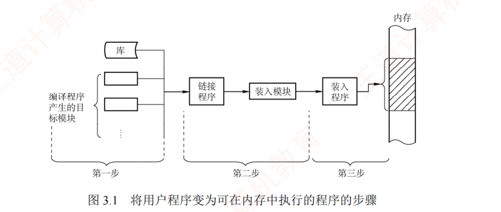
图 3.1 将用户程序变为可在内存中执行的程序的步骤（p.177）——看清楚三步的分界线画在哪 ：第一步（编译）产出的是若干个 目标模块，第二步（链接）把它们连同库函数 合并成一个 装入模块，第三步（装入）才碰内存。「库」是从第二步才接进来的 ，这就是"运行时动态链接能省内存"的图证。
必记 · 三步各干什么（2011 年就考这个）
1) 编译 ：编译程序把源代码翻成若干目标模块 。2) 链接 ：链接程序把目标模块 + 库函数 合并 → 一个完整的装入模块 。3) 装入（加载） ：装入程序把装入模块载入内存并启动执行。
我的补讲 · 为什么「若干 → 一个」这个数量变化是考点
书上强调编译产出"若干"目标模块、链接产出"一个"装入模块 → 潜台词是地址在这一步被重新编号了 →
所以能考「静态链接做了哪两件事」：
操作 做什么 书上的算例 ① 地址调整 各模块编译后都 从 0 起址，链接时统一加偏移量 模块 A 长 L ，则 B 内所有地址加 L ② 外部符号解析 把符号引用换成真实地址 CALL B 中的 B 换成 B 的起始地址 L
⟹ 这两件事在《组成原理》4.3 节「程序的机器级代码表示」里叫重定位与符号解析 ，是同一件事的两种叫法。 知识串联 · 链接这一步在组原也考过
跨科枢纽 组原 ch4 4.3 节 讲过 gcc 的四个阶段（预处理→编译→汇编→链接）与可重定位目标文件 / 可执行目标文件 的区别，
那里的「链接器解析外部符号 + 重定位」和这里的「地址调整 + 外部符号解析」是同一段话 ，只是一个从硬件视角、一个从 OS 视角写。⟹ 若被问「CALL B 里的 B 什么时候变成数字」：静态链接是运行前 ，运行时动态链接是第一次调用时 ——这正是下面三种链接方式的分水岭。
必记 · 三种链接方式（按"什么时候把模块拼起来"排）
方式 时机 换来的好处（原文） 静态链接 运行之前 拼成一个完整可执行文件，此后不再拆分 （代价：改一个模块要重链整个程序） 装入时动态链接 装入内存时边装边链 ① 便于修改和更新 （只替换被改的模块）② 便于实现目标模块的共享 运行时动态链接 执行中需要调用时 才装入并链接 加快装入过程 + 节省内存空间 （用不到的模块既不装入也不链接）
陷阱 · 「便于共享」和「节省内存」是两个不同方式的优点，别张冠李戴
「便于修改更新 / 便于共享」是装入时 动态链接的优点；「加快装入 + 节省内存」是运行时 动态链接的优点。
选择题最爱把这两组对调。记法：装入时是"整批进场，谁改换谁"；运行时是"用到才叫，不用不进场"。
我的补讲 · 三步里哪一步产生的地址算"逻辑地址"？
书上把三步讲完就换了话题 → 潜台词是它默认你知道地址是在哪一步定下来的 → 但这正是 2011 年那道题的落点：
阶段 此时地址是什么 谁能改它 编译后（目标模块） 各模块各自 从 0 开始的相对地址 链接器（做地址调整） 链接后（装入模块） 统一的、从 0 开始的逻辑地址 装入程序 / MMU 装入后（内存中） 物理地址 （静态重定位已改写；动态重定位仍是逻辑地址，运行时才翻）—
⟹ 一句话：「链接产生逻辑地址空间，装入（或运行）产生物理地址」 。
凡是选项说"编译时就确定了物理地址"，只有绝对装入（单道系统） 成立，其余一律错。 2．逻辑地址与物理地址
考点追踪 · 进程虚拟地址空间的特点（2023）
必记 · 两个地址空间
逻辑地址（相对地址、虚拟地址） ：编译后每个目标模块都从 0 号单元开始编址 ；链接程序把多个模块拼成
统一的、从 0 开始编址的逻辑地址空间 。32 位系统范围 0 ~ 2³²−1 。物理地址空间 ：主存所有物理存储单元的集合，是地址转换的最终目标 。⭐ 不同进程可以拥有相同的 逻辑地址 ——各自独立的逻辑地址空间，映射到主存的不同位置。装入时转换 ＝ 地址重定位 ；现代由 MMU 在硬件层面于运行时自动完成 ，OS 为每个进程维护一张页表 记录「逻辑页 → 物理页框」的映射。
我的补讲 · 2023 年那道题就靠"相同的逻辑地址"这一句
书上写「不同进程可以拥有相同的逻辑地址」 → 潜台词是逻辑地址不是全局唯一的编号，它只在本进程内有意义 →
所以能考三种问法：
问法 答案 为什么 两个进程的同一个逻辑地址会不会打架 不会 各查各的页表，落到不同物理页框 虚拟地址空间大小由什么决定 地址位数 32 位 ⟹ 4GB，与内存条多大、硬盘多大都无关 进程能不能直接跳到另一个进程的指令地址 不能 它给出的地址会被自己的页表翻到自己的物理页（3.1 选 02 的 D 项）
⚠️ 第二条会在 3.2.10 小结里再出现一次（2012 选 45、2023 选 58 都考），是全章四条分界线之一。 知识串联 · 「逻辑地址空间」这张图你在 ch2 已经画过
回看 OS ch2 ch2 2.1.3「进程的内存映像」那张图（内核区 / 用户栈↓ / 共享库映射区 / 堆↑ / 数据段 / 代码段）
画的就是这里说的"从 0 开始编址的逻辑地址空间" 。当时问的是"栈往哪长"，这里问的是"它怎么落到物理内存上"。连到 3.2.7 那张图里的「共享库映射区」 正是 3.2.7 内存映射文件的产物——同一段代码被映射进多个进程的地址空间 。三处是同一件事的三次出场。
知识串联 · 「先算出地址再访问」这件事，组原叫寻址、OS 叫重定位
跨科枢纽 组原 ch4 4.2 寻址方式 里的基址寻址 （EA = (BR) + A）与这里的动态重定位是同一条公式 ：
基址寄存器 BR ＝ 重定位寄存器 ，形式地址 A ＝ 逻辑地址。组原还讲了它的用途：「面向操作系统，用于程序的浮动装入，基址寄存器的内容由操作系统确定」——
这句话就是本节"动态重定位支持程序在内存中移动"的硬件版说法 。 ⟹ 于是三个结论可以直接互推：基址寻址 ⟹ 动态重定位 ⟹ 可紧凑 ⟹ 减少外部碎片 。
两门课在这里是同一段内容的两次讲述，别当成两个知识点各背一遍。
3．程序的装入（三种方式）
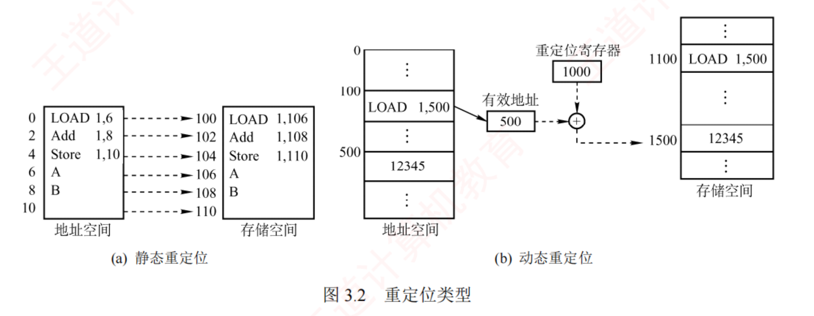
图 3.2 重定位类型（p.179）——左右两张图的差别只有一处，但决定了能不能"紧凑" ：(a) 静态重定位把指令里的地址真的改掉了 （LOAD 1,6 → LOAD 1,106，程序一旦落地就钉死）；(b) 动态重定位指令原封不动 （内存里仍是 LOAD 1,500），靠重定位寄存器 1000 在访问时临时加出 1500。正因为(b)不改指令，整块程序才能被搬到别处——只要改寄存器里那个数就行。
必记 · 三种装入方式
方式 适用 要点 绝对装入 单道程序环境 编译前即可确定驻留位置，直接生成绝对地址代码；逻辑地址与物理地址完全一致 可重定位装入 多道程序环境 装入时分配一块连续区域 ，一次性 把所有逻辑地址改成物理地址。限制：装入前必须一次性获得全部所需内存；一旦装入，运行期间既不能移动位置，也不能动态申请额外内存 动态运行时装入 支持程序在内存中移动 装入后不立即转换 ，推迟到指令实际执行时 ；靠重定位寄存器 存起始物理地址。优点：支持移动 ⟹ 便于紧凑 ⟹ 有效减少外部碎片
我的补讲 · 静态重定位那三条限制，每一条都是一道题
书上给静态重定位加了三条限制（必须一次性拿全内存 / 不能移动 / 不能动态申请） → 潜台词是这三条各自堵死了一条路 →
所以能考的是"下列哪种技术在静态重定位下无法实现"：
被堵死的能力 因为哪一条 要到哪一节才解禁 紧凑（拼接） 不能移动 3.1.2 动态分区——紧凑必须以动态重定位为前提 对换（换出后换回别处） 不能移动 OS ch2 2.2 中级调度 虚拟内存 必须一次性拿全内存 3.2 全节 ——虚存的第一句话就是打破"一次性"运行中扩堆（malloc） 不能动态申请 分页之后自然解决（缺页时再给页框）
⟹ 一句话记法：静态重定位＝把地址钉死在指令里；动态重定位＝把地址留在寄存器里。 钉死的东西搬不动，留在寄存器里的改个数就搬走了。 陷阱 · 「动态重定位」和「动态链接」不是一回事
动态重定位 解决的是地址什么时候翻译 （执行时才翻）；动态链接 解决的是模块什么时候拼进来 （装入时或调用时）。
两者都带"动态"二字，但一个管地址、一个管模块。题干里出现"重定位寄存器"就是前者，出现"目标模块/库函数"就是后者。
我的补讲 · 三种装入方式的年份分布与"排除法"
三种装入方式很少单独出题，通常混在"下列说法正确的是"里 → 所以要练的是快速排除 → 三条判据：
看到题干里出现… 立即锁定 "单道程序""编译时确定驻留位置""逻辑地址=物理地址" 绝对装入 "装入时一次性修改全部地址""运行期间不能移动" 可重定位装入（静态重定位） "重定位寄存器""执行时才转换""支持紧凑/对换" 动态运行时装入（动态重定位）
⟹ 只要抓住"什么时候把逻辑地址变成物理地址"这一个时间点，三者立刻分开：编译前 / 装入时 / 执行时 。 4．内存保护
考点追踪 · 分区分配内存保护的措施（2009）
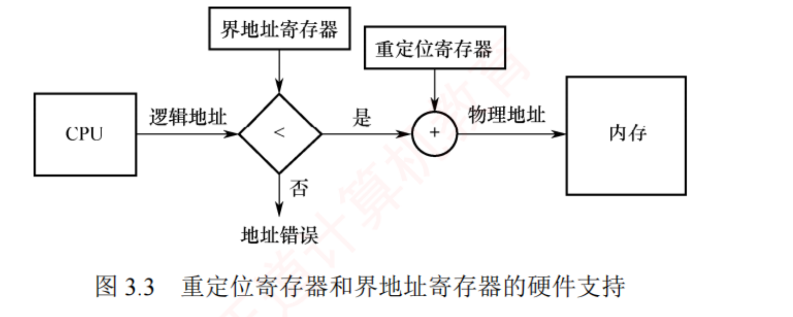
图 3.3 重定位寄存器和界地址寄存器的硬件支持（p.180）——沿着箭头走一遍，顺序不能反 ：CPU 给出逻辑地址 → 先和界地址寄存器比 < → 「是」才去和重定位寄存器相加 → 得物理地址访问内存；「否」直接地址错误 。先比后加 ，这是本图唯一的考点。
必记 · 两种保护方法 + 两个寄存器的分工
方法一 ：CPU 中设置一对上、下限寄存器 ，每次访问硬件自动与之比较判越界。方法二 ：重定位寄存器（＝基址寄存器）+ 界地址寄存器（＝限长寄存器） 。两者作用不同（p.180 原话） ：重定位寄存器用于「加」 ：逻辑地址 + 其值 = 物理地址；界地址寄存器用于「比」 ：逻辑地址与其值比较，判越界。这两个寄存器的加载必须通过特权指令 完成，仅 OS 内核有此权限 ⟹ 用户程序无法篡改。
我的补讲 · 2009 年考的其实是"谁来做"，不是"怎么做"
书上专门用一整段区分"加"和"比" → 潜台词是命题人可以从三个角度切 → 所以能考：
切法 正确答案 错误选项长什么样 顺序 先比（界地址）后加（重定位） "先加后比"——加完再比就已经访问了非法地址 分工 比较由硬件 自动完成 "由操作系统逐条检查"——那要慢几个数量级 权限 装载寄存器是特权指令 ，只有内核态能做 "内存保护可以仅由软件实现，不需硬件支持"（3.1 选 02 的 B 项，答案就选它）
⟹ 一句话：「查」由硬件做（因为要快），「设」由内核做（因为要安全） 。 知识串联 · 「硬件做 vs OS 做」这把刀，OS ch1 已经磨过一次
回看 OS ch1 ch1 1.3 运行环境的四条分界线之一就是硬件与 OS 的分工 ：断点/PSW/模式位由硬件 保存，
通用寄存器/屏蔽字/服务例程由OS 处理（2015/2020/2022 三年同一把刀）。这里是同一把刀的第五次出场：越界比较＝硬件；装载界地址寄存器＝OS（特权指令） 。 连到组原 组原 ch5 讲过特权指令只能在内核态执行 ，判据也是同一条。三科在这一点上完全对齐，遇到就直接下结论。
知识串联 · 内存保护是"内核态才能做的事"清单上的一条
回看 OS ch1 ch1 1.3 列过一张"哪些指令是特权指令"的清单：置程序状态字 PSW、开关中断、清内存、
设置时钟 、装载重定位/界地址寄存器 、I/O 指令 ——本节这两个寄存器就在那张清单上。⟹ 于是可以反过来出题：「用户程序能否修改自己的界地址寄存器以访问更多内存？」不能，那是特权指令，会触发非法指令异常 。
这类题在 ch1 与本章都出现过，答法完全一致。 连到组原 ch5 组原讲「越界中断属于程序性异常（故障）」 ，与本章"地址错误"是同一个事件的两个名字。
5．内存共享
必记 · 只有只读区域才能共享
可重入代码（＝纯代码） ＝允许多个进程同时访问但
不允许任何进程修改 的代码；
每个进程需配独立的私有数据区 。
⭐
书上的算例（很爱考） ：40 用户系统，文本编辑程序 =
160KB 代码 + 40KB 数据
方案 算式 占用 不共享 (160+40) × 40 8000KB 可重入代码共享 160 + 40 × 40 1760KB
分页系统中共享 ：页面 4KB ⟹ 代码占 40 个页面、数据占 10 个页面；
每个进程页表中需设 40 个页表项指向同一组共享页框 ，另需 10 个页表项指向各自数据页。
分段系统中共享 ：只需为共享代码段设置
一个段表项 （记起始地址与段长 160KB）。
我的补讲 · 这个算例的三个数字都要能自己算出来
书上只写了 8000 和 1760 两个结果 → 潜台词是命题人会把"共享后省了多少"改成填空 → 所以要能反着算：
问法 算法 结果 共享省了多少 8000 − 1760 6240KB 分页时每进程多少个页表项 160/4 + 40/4 40 + 10 = 50 项 分段时每进程多少个段表项 共享代码 1 + 私有数据 1 2 项 （分段共享的省事全在这）
⟹ 这个 40 vs 1 的对比，就是 3.1.4 节「分段共享远比分页方便」的全部依据，也是 2019/2023 两年考"页、段共享的原理和特点"的原型。 陷阱 · 「分页不能共享」是错的
分页与分段都能 共享，区别只在粒度和管理机制 ：分页要在每个进程页表里建 N 个页表项，分段只要 1 个段表项。
凡是选项写"分页系统无法实现共享"，一律错。正确表述是"分页也能共享，但远不如分段方便"。
背景 · 内存分配与回收的演进链（知道顺序即可）
单一连续 → 固定分区 → 动态分区 → 离散分配（页式） ；为满足编程需求（逻辑结构、段级共享与保护）→ 分段存储管理 。
这条链就是 3.1.2～3.1.5 的目录顺序 ，书上把它写在这里只是承上启下，本身不出题。
知识串联 · 「共享一份、各自私有一份」的模式在 408 里出现五次
跨科枢纽 3.1.1 末尾"可重入代码共享 + 每进程私有数据区"这个模式，后面还会遇到四次：
场景 共享的部分 私有的部分 本节 纯代码共享 只读代码（160KB） 各进程的数据区（40KB） OS ch2 线程 进程的代码段、数据段、打开文件 各线程的栈、PC、寄存器 本章 3.1.4 共享段 共享段（一个段表项） 私有局部数据区 本章 3.2.7 内存映射文件 同一物理页 各自的虚拟地址（可以不同） OS ch4 硬链接 同一索引结点与磁盘块 各自的目录项与文件名
⟹ 五处的考法完全一致：「哪些必须各存一份、哪些可以共用一份、什么时候真正释放」 。
最后一问的答案永远是引用计数归零 。 📄 p.180
3.1.2 连续分配管理方式
必记 · 连续分配的定义与三种做法
连续分配 ＝ 为一个用户程序分配一个连续的 内存空间。 三种：单一连续、固定分区、动态分区 。三者的共同点（原文）：用户程序在主存中均以连续方式存放 。
我的补讲 · 读这一节只需盯住"碎片"这一个词
书上把三种方式各讲一遍优缺点 → 潜台词是它们的区别只体现在产生哪种碎片 上 →
所以能考的永远是"下列哪种方式会产生外部碎片/内部碎片"：
方式 内部碎片 外部碎片 一句话理由 单一连续 有 无 整个用户区给一道程序，用不完的就浪费在里面 固定分区 有 无 分区大小固定，作业小于分区 ⟹ 剩余部分被圈在分区内 用不掉 动态分区 无 有 按需切，切得刚好 ⟹ 里面不剩；但切来切去分区之间 留下一堆小空隙 分页（3.1.3） 有 （最后一页平均半页）无 页框大小固定 ⟹ 同固定分区；但不要求连续 ⟹ 无外部碎片 分段（3.1.4） 无 有 段长按需 ⟹ 同动态分区
⟹ 判据只有一条：「大小固定」就有内部碎片，「大小按需」就有外部碎片。
这条判据在 3.3 疑难点的分页 vs 分段对照表里会以最终形态再出现一次。 我的补讲 · 三种连续分配的"最大作业大小"各是多少（很爱考的一个反向问法）
书上只讲了怎么分配 → 潜台词是可以反问"这种方式最大能装多大的作业" → 三条：
方式 最大作业 为什么 单一连续 整个用户区 就它一个 固定分区 最大的那个分区 分区边界固定，作业大于所有分区就装不进 （书上明写的"问题①"） 动态分区 当前最大的连续 空闲区 可以紧凑后变大，但紧凑要求动态重定位
⟹ 而分页/分段之后这个问题就消失了：只要总空闲页框够，作业就装得下，不再要求连续 。
这正是 3.1.2 末尾那句"有 1GB 空闲却装不下 1GB 作业"的反面。 1．单一连续分配
背景 · 这一段只需知道结论（考纲外的历史）
内存分系统区 + 用户区 ，用户区仅允许一道用户程序运行 。无外部碎片 、无须内存保护机制 （就一道程序，没人可侵犯）。存在内部碎片 ；内存利用率极低 。会考的只有加粗那三处，其余当历史读。
知识串联 · 「固定 vs 可变」这把尺子在四科里量过四样东西
跨科枢纽 本节的固定分区 vs 动态分区，和后面几章的对子
共用同一套优劣结论 ：
场景 "固定"的一方 "可变"的一方 共同结论 本节 固定分区 动态分区 固定 ⟹ 管理简单、有内部碎片； 本章 3.1.3/3.1.4 分页（页大小固定） 分段（段长可变） OS ch4 文件 索引分配（块大小固定） 连续分配（文件长度可变） 组原 ch3 Cache 块大小固定 ——
⟹ 遇到任何"某方案会不会产生外部碎片"的题，先问一句「它的分配单元大小是不是固定的」 ，答案立刻出来。 2．固定分区分配
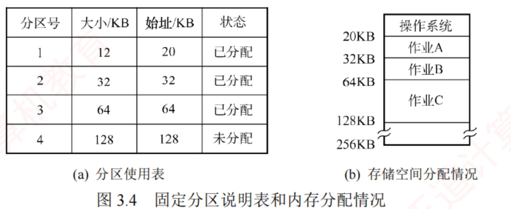
图 3.4 固定分区说明表和内存分配情况（p.181）——左表按"大小"排序，不是按分区号随便排 （12/32/64/128，正是"少量小、适量中、少量大"的划法）；右图看得出作业 A 只有 12KB 却占了整个 32KB 分区 ——中间那截白，就是内部碎片 的样子。
必记 · 固定分区的两个划法 + 分区使用表 + 两个问题
划分方法两种 ：分区大小相等 （程序过小浪费、过大装不入，缺乏灵活性）；分区大小不等 （多个较小 + 适量中等 + 少量大分区）。分区使用表 ：表项为分区号、大小、始址、状态 ，按分区大小排序 ；分配时置"已分配"，回收时置"未分配"。两个问题 ：① 作业大于所有分区则无法装入 ② 作业小于分区大小则仍占整个分区 ⟹ 内部碎片 。固定分区无外部碎片，但每个分区仅能由一个作业独占，无法支持多进程共享同一内存区域，内存利用率较低。
我的补讲 · "回收只需改一个状态位"是固定分区唯一的优点
书上写回收时"只需将对应表项的状态置为未分配即可" → 潜台词是固定分区不存在合并问题 →
所以能考"下列哪种分配方式回收时不需要合并空闲区"：答固定分区。 对照记：动态分区回收要判四种情形（下面就讲），分页回收只需把页框还给空闲链，
只有固定分区连合并都不用想 ——因为分区边界是死的，永远不会变。 ⚠️ 但代价也在这：分区边界是死的 ⟹ 作业再小也占满一格 ⟹ 内部碎片 ⟹ 利用率低。优点和缺点是同一件事的两面。
我的补讲 · 内部碎片与外部碎片，用一句话区分并各配一个数字
两个碎片名字太像，考场上容易临时打结 → 用"碎片长在哪"来记，并各记一个可算的数：
碎片长在哪 能不能被别人用 典型的量 内部碎片 已分配区域之内 （分给你了但你没用完）不能 ——它名义上已属于该进程分页时平均半页/进程 外部碎片 已分配区域之间 （谁也没要，但太小没人能用）理论上能，但装不下 ——所以要紧凑图 3.5 最后那张：6+6+4 = 16MB 空闲却装不下 14MB 的进程
⟹ 记法：「内碎片是你自己浪费的，外碎片是大家一起浪费的。」
紧凑只能治外部碎片（把缝合起来），对内部碎片无能为力 ——这也是常考的一个否定项。 3．动态分区分配（＝可变分区分配）
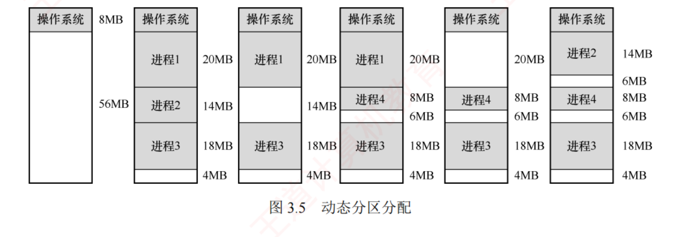
图 3.5 动态分区分配（p.181）——六个快照从左往右看，注意白条是怎么越来越碎的 ：64MB 内存低 8MB 给 OS，余 56MB 用户区；装入进程 1(20)/2(14)/3(18) 后只剩 4MB；换出进程 2 换入较小的进程 4(8MB) ⟹ 凭空多出一条 6MB 的白缝 ；再换入进程 2 时又得换出进程 1。最后一张图里的 6MB+6MB+4MB 加起来有 16MB 空闲，却装不下一个 14MB 的进程——这就是外部碎片的全部含义。
必记 · 外部碎片与紧凑技术
外部碎片 ＝散布在已分配分区之间 、无法利用的小空闲块（对比：固定分区中分区内 未用完 ＝ 内部碎片 ）。紧凑（拼接）技术 可缓解外部碎片：周期性移动进程、合并空闲块；要求系统支持动态重定位，且开销较大 。
我的补讲 · "紧凑必须支持动态重定位"这句话是两节之间的扣子
书上把"要求系统支持动态重定位"轻描淡写地放在括号里 → 潜台词是3.1.1 的三种装入方式在这里被用上了 →
所以能考"采用紧凑技术的系统必须具备什么条件"：答动态重定位（重定位寄存器） 。 理由回到图 3.2：静态重定位把地址改写进了指令里，程序搬走后指令里的数就全错了；
动态重定位的指令里存的仍是逻辑地址，搬完只需改重定位寄存器里那一个数。 ⟹ 这也是为什么书上把装入方式放在连续分配之前 讲——不是凑顺序，是先给工具再讲用途。
背景 · 一个不必深究的类比
书上把紧凑类比成 Windows 的磁盘碎片整理 ，但特意补了一句：那个作用于外存文件系统，紧凑作用于主存 。
类比只帮理解，不会考。 （真要考"磁盘碎片"是 OS ch4 文件管理的事。）
考点追踪 · 动态分区分配的内存回收方法（2017）
必记 · 回收的四种情形（必背，2017 年直接考）
系统维护
空闲分区链（表） ，通常
按起始地址排序 。分配时若尺寸大于所需则
分割 ，剩余部分（若不小于最小分配单位）仍留在链中。
# 情形 怎么处理 链表项数变化 ① 与前 一空闲分区相邻 两者合并，更新前一分区的大小 不变 ② 与后 一空闲分区相邻 两者合并，更新后一分区的起始地址和大小 不变 ③ 与前后两个 均相邻 三者合并，更新前一分区的大小，并删除后一分区的表项 减 1 ④ 不与任何 空闲分区相邻新建一个表项 ，记起始地址和大小，插入空闲分区链加 1
我的补讲 · 四种情形只需记"改谁的字段"，那才是失分点
书上四条的差别不在"合不合并"，而在改哪个表项的哪个字段 → 潜台词是命题人会把字段对调 → 所以能考：
情形 动的字段 为什么不 动另一个 ① 与前邻 只改大小 起始地址还是前一分区的，没变 ② 与后邻 改起始地址 + 大小 合并后这块从更靠前 的地方开始了，所以起址必须前移 ③ 前后都邻 改前一分区大小 ，删 后一表项 起址仍是最前那块的；后一块被吞并，表项必须删 ④ 都不邻 新建 表项凭空多出一块空闲区
⟹ 一句口诀：「向前合并不改址，向后合并要改址；三合一要删表项，孤零零要建表项。」
⚠️ 2017 年真题（3.1 选 66）的干扰项 A 就是只合并、漏了按大小重排空闲链 ——
用最佳/最坏适应时链表是按容量 排的，合并完容量变了，位置也得跟着挪。 陷阱 · 空闲分区链"按什么排序"取决于用哪个算法，不是固定的
首次适应、邻近适应：按地址 递增排；最佳适应：按容量 递增排；最坏适应：按容量 递减排。 随算法而变 ：地址序的（首次/邻近）合并后位置天然不变；容量序的（最佳/最坏）合并后必须重排 。
这正是书上说"首次适应回收时无须重排空闲链"的原因。
知识串联 · 空闲分区链 = 数构里的有序链表；合并 = 区间合并
连到数构 空闲分区链就是数构 ch2 的有序单链表 ：按地址排 ⟹ 插入要找位置；按容量排 ⟹ 每次改大小都要重新定位。
"最佳适应要重排"的本质是关键字变了必须重新插入 ，和链表排序题是同一件事。 连到 3.2.6 页框回收（3.2.6）里的"空闲页框链表" 是同一个数据结构的简化版——因为页框大小全相等，连合并都不用做 ，
这正是分页比动态分区省事的地方。Linux 用伙伴系统管理连续页框时，合并规则又回到了这里的"看邻居在不在空闲"。
我的补讲 · 空闲分区链的"链"字要当真：这一节所有操作都是链表操作
书上说"系统维护空闲分区链（表）" → 潜台词是分配与回收的开销 = 链表操作的开销 →
于是"哪个算法开销大"这类题可以直接用数据结构常识回答：
操作 首次适应 最佳适应 查找 从头扫，平均 O(n/2) 从头扫（容量升序，第一个满足的就是最小的），O(n/2) 分割后 剩余块原地留着 ，链序不变 剩余块容量变了 ⟹ 要重新插入 回收合并后 地址序天然不变，无须重排 必须按新容量重排
⟹ 这就是书上"首次适应回收时无须重排空闲链"那句话的实际含义，也是它"综合性能最好"的一半理由（另一半是保留高地址大空闲区）。 知识串联 · "紧凑"与"外部碎片"在 OS ch4 会以「磁盘碎片整理」重来一次
往后连 OS ch4 文件的
连续分配 与本节的动态分区
是同一个模型 ：
都要求一整块连续空间、都会产生外部碎片、都靠"紧凑/整理"回收 。
本节（主存） OS ch4（磁盘） 连续方案 动态分区 连续分配 碎片 外部碎片 外部碎片 整理手段 紧凑 （需动态重定位）磁盘碎片整理 （需重写 FCB 的起始块号）离散方案 分页 链接分配 / 索引分配
⟹ 于是 ch4 的"为什么现代文件系统用索引分配而不用连续分配"，答案和本章"为什么用分页不用动态分区"逐字相同 。 （2）基于顺序搜索的分配算法（四种）
考点追踪 · 各种动态分区分配算法的特点（2019、2024）
考点追踪 · 最佳适应算法的分配过程（2010）
必记 · 四种适应算法（这张表建议整表背下来）
算法 链表排序 做法 特点（原文） 首次适应 地址递增 从链首 顺序查找，取第一个满足的 优先用低地址 ⟹ 保留高地址大空闲区，有利于后续大作业 ；但低地址易积累小碎片 ，每次从头查有开销 邻近适应 地址递增 从上次查找结束的位置 开始循环搜索 减少对低地址的重复扫描，但大空闲区分布不均 ⟹ 难支持后续大作业 ⟹ 整体性能通常不如首次适应 最佳适应 容量递增 取第一个能满足的（＝最小的可用分区 ） 名为"最佳"，但每次都留下极小的剩余块 ⟹ 产生大量外部碎片，实际性能通常较差 最坏适应 容量递减 取第一个满足的（＝最大的可用分区 ） 试图避免小碎片，但总切最大空闲区 ⟹ 很快难以满足大作业
⭐
书上结论（原话）：首次适应算法在实现开销、碎片控制与大作业支持之间取得了较好的平衡 ——查找简单高效，回收时无须重排空闲链，且能保留高地址大空闲区。
我的补讲 · 考场上做这类题，写三行就够（附一个自造算例）
书上给了四个算法的"特点"，但真题（2010、2019、2024）问的都是过程 ：给一串空闲区，问某算法分配后剩什么 →
所以真正要练的是把链表按对的顺序摆出来 这一步。三行模板：
第几行 写什么 例（空闲区 100K, 500K, 200K, 300K, 600K，依次申请 212K, 417K, 112K, 426K） 1 按算法要求重排链表 最佳适应 ⟹ 100, 200, 300, 500, 600 2 逐个请求划掉并写剩余 212→300(剩88) 417→500(剩83) 112→200(剩88) 426→600(剩174) 3 回收/后续请求前重排一次 容量序变成 83, 88, 88, 100, 174
⚠️ 同一组数据换成首次适应 ：212→500(剩288)、417→600(剩183)、112→288(剩176)、426 无块可用 ⟹ 失败 。
四个请求同样的顺序，最佳适应全部装下、首次适应装不下最后一个 ——这就是命题人最爱设的反直觉点。
⟹ 别背"哪个算法更好"，要背"题目问的是哪个算法 "，然后老老实实按它的排序做。 陷阱 · 三处最容易丢分的地方（3.1 建库时逐个还原过干扰项来源）
① 最佳适应 ≠ 最好 ：书上明写它"实际性能通常较差"，因为剩下的碎块太小没人能用。选项写"最佳适应算法性能最好"一律错。 ② 邻近适应 ≠ 首次适应的改进版 ：它的初衷是改进，结果反而更差 （把高地址的大空闲区也切碎了）。③ 漏看内存布局图上的分界线 ：3.1 选 07 那道题，280K 处有一条分界线，漏看会把两块空闲区连成一块 ，
最佳适应的答案就从 C 变成 A。做这类题第一步是把所有分界线和空闲块长度先列成一张表 ，再选算法。
我的补讲 · 四种适应算法的一句话记忆锚（考前五秒回忆用）
算法 锚句 它牺牲了什么 首次适应 "从头找，够用就拿" 低地址被切得很碎 邻近适应 "接着上次的位置继续找" 高地址的大块也被切碎了 ⟹ 反而更差 最佳适应 "挑最小的够用的" 剩下一地鸡毛（极小碎块） 最坏适应 "挑最大的切" 大块很快没了，装不下大作业
⟹ 四句话都以"切"结尾，因为它们的差别只在切谁 。而书上给出的结论是：首次适应综合最优 ——
这个结论反直觉（名字里带"最佳"的反而不最佳），正是它常年被考的原因。 （3）基于索引搜索的分配算法（三种）
必记 · 三种索引式分配
思想：按空闲分区大小分类 ，每类建独立空闲分区链，用一张索引表 统管。1) 快速适应 Quick Fit ：预先按常用大小划分若干固定尺寸类别。分配两步：① 在索引表中找能容纳它的最小类别链 ② 从该链表头 取第一个分区。
优点：查找效率高、不会产生内存碎片 ；缺点：回收时难以有效合并分区，算法复杂、开销较大 。3) 哈希算法 ：以空闲分区大小为关键字建哈希表，表项记对应链的头指针；分配时哈希计算直接定位 。
考点追踪 · 伙伴关系的概念（2024）
必记 · 伙伴系统 Buddy System（2024 年考过，且 3.2.6 还会再考一次）
所有分区大小均为 2ᵏ。 为 n 分配时（满足 2ⁱ⁻¹ < n ≤ 2ⁱ）：先在大小为 2ⁱ 的链中查；若无则依次在 2ⁱ⁺¹, 2ⁱ⁺², … 中查 ，
找到后不断二分 直到得到所需大小的块，其余部分按大小加入对应空闲链。每个 2ᵏ 分区都有唯一的伙伴分区：与它大小相同、地址相邻（首尾相接） 的另一个分区。 继续向上尝试合并，直至无法合并为止 。
我的补讲 · 伙伴系统的"唯一"两个字是考点，附一个手算例
书上强调伙伴"唯一" → 潜台词是不是所有相邻的同大小块都是伙伴 → 所以能考"下列哪两块是伙伴"：
判据：把地址除以块大小得到编号，编号成对（2i 与 2i+1） 的才是伙伴。
两块 是不是伙伴 为什么 起址 0 与 64 的两个 64B 块 是 编号 0 与 1，成对；合并后是起址 0 的 128B 块 起址 64 与 128 的两个 64B 块 不是 编号 1 与 2，跨对了 ；合并起来不是一个合法的 2ᵏ 块
⟹ 一句话：伙伴不只是"邻居"，还必须是"同一个父块二分出来的那两半"。
这是 2024 年那道选择题的全部内容，也是 3.2.6 里 Linux 页框回收的判据。 知识串联 · 伙伴系统 = 二分 + 完全二叉树
连到数构 伙伴系统的分裂/合并过程就是一棵完全二叉树 ：根是整块内存，每个结点二分成两个孩子，兄弟结点互为伙伴 。
"编号成对才是伙伴"等价于数构 ch5 里"结点 i 的兄弟是 i^1" （最低位取反）。连到组原 "分配是化整为零、回收是零存整取"这套思路，与组原 Cache 的块划分 、数构的二叉堆下标运算 共用同一套 2 的幂次算术。往后连 3.2.6 页框回收 会明说"Linux 用 3.1.2 节的伙伴算法管理连续空闲页框"——同一算法在本章出现两次，2024 年考了一次，很可能还会再考。
必记 · 过渡段：为什么必须放弃连续分配（p.183 原话精要）
连续分配下即使有超过 1GB 的空闲内存，只要不存在连续的 1GB 空间，作业便无法装入 ⟹ 这就是外部碎片导致的问题 ⟹
引入非连续分配方式 ：地址空间划分为多个单元，允许分散装入互不相邻的区域。代价 ：额外维护各逻辑单元与其物理位置的映射关系 ⟹ 存储开销 （这就是页表/段表的由来）。分页 / 分段 ；按是否运行前一次性装入分为基本分页/分段 vs 请求分页/分段 。
知识串联 · 索引式分配把"查找"从遍历变成了定位，这是数构的老问题
连到数构 ch7 三种索引式分配正好对应数构里三种查找结构：
快速适应 ＝ 按大小分类的多条链（分块查找的索引表） 、伙伴系统 ＝ 完全二叉树 、
哈希算法 ＝ 散列表（以分区大小为关键字） 。⟹ 它们的优缺点也照搬数构结论：散列查找 O(1) 但难以支持"范围查询"（找不到恰好大小时怎么办）；
分块索引查找快但插入删除要维护多条链 。这正是书上说快速适应"不产生碎片但回收时难以合并"的原因。 ⚠️ 三种索引式分配里只有伙伴系统 考过（2024），另外两个只需知道名字与一句话特点。
我的补讲 · 这一小段是全章的目录，把它读成一张二维表
书上用两个"按…分为"给出了四种组合 → 潜台词是本章后面的四节就是这张二维表的四个格子 →
所以能考"某系统采用 XX 管理，它属于哪一类"：
单元大小固定（页） 单元大小可变（段） 运行前一次性全装入 基本分页 （3.1.3）基本分段 （3.1.4）用到才装（虚存） 请求分页 （3.2，全章重心 ）请求分段（考纲外，知道有这回事）
⟹ 再加一个"先分段再分页"的段页式 （3.1.5），本章的五节就凑齐了。
读到这里应该能自己说出：3.2 = 3.1.3 + "缺页中断" + "页面置换" ，别的什么都没加。 📄 p.183
3.1.3 基本分页存储管理 ← 全章地基，3.2 的每一道大题都建在这一节上
知识串联 · 王道在这一节的脚注里主动叫你翻组原（全书唯一一处）
跨科枢纽 脚注原文：本章后面的内容与《计算机组成原理》3.6 节高度相关，建议结合复习。 Cache + 虚拟存储器 ：Cache 把主存分块、虚存把主存分页，两者的地址划分方式完全一样 ——
高位当"号"去查表，低位当"偏移"直接拼上。⟹ 你在组原 ch3 已经练过 152 道题，其中"位划分"那一类可以整批搬过来。差别只有一处：
Cache 未命中由硬件自动处理，缺页则要 OS 介入（软件） ——这句话本身就是 3.2 的高频考点。
必记 · 分页的三个名词与"为什么不产生外部碎片"
分页把物理内存划分为若干大小相等的固定单元 ＝ 页框（页帧、物理块） ，把进程逻辑地址空间划分为与页框大小相同 的单元 ＝ 页面（页） ，以页框为单位分配 。与固定分区的本质不同 ：固定分区按作业整体 分配；分页把进程和内存均 按固定大小单元划分 ⟹ 不会产生外部碎片 。页内碎片（内部碎片） ：最后一页未填满 ⟹ 每个进程平均产生的页内碎片约为半页 。
我的补讲 · "平均半页"这个数字会直接进计算题
书上轻描淡写地说"平均约半页" → 潜台词是这是个可以算的量 → 所以能考"n 个进程共浪费多少内存"： 答：n × 页面大小 / 2 。 页面 4KB、100 个进程 ⟹ 平均浪费 200KB 。由此还能推出页面大小的两难（下一段书上会正式讲）：页面越大，这个浪费越大；页面越小，页表越长 。
真题（2021 选 21）问"页面越小会怎样"，答案就是页内碎片减少、内存利用率提高 ，但页表项变多、缺页率升高、I/O 更频繁 。
1．基本概念
必记 · 页面大小的取值原则
页号从 0 开始，页框号（物理块号）也从 0 开始。页面大小通常取 2 的整数次幂 ，且应适中：过小 ⟹ 页面数量增多 ⟹ 页表过长 （占内存 + 增加地址转换开销 + 降低换入换出效率）；过大 ⟹ 页内碎片增多 ，同样降低利用率。
我的补讲 · "取 2 的整数次幂"不是习惯，是必须
书上只说"通常取 2 的整数次幂" → 潜台词是：只有 2 的幂才能靠"截位"完成除法 → 所以能考"为什么页面大小必须是 2 的幂"：
页面大小 求页号 P 与偏移 W 硬件代价 2¹² = 4096 逻辑地址高 20 位就是 P，低 12 位就是 W 零成本 （连线直接分岔即可）3000（假想） P = ⌊A/3000⌋，W = A mod 3000 每次访存都要做一次除法 ——不可接受
⟹ 这也解释了后面所有题目为什么给的页面大小都是 1KB/4KB/512B：凡是给了非 2 的幂的页面大小，题目一定是在考概念不是考计算 。 我的补讲 · 页框、页面、页表项、页表页——四个"页"字要分清
本节四个名词都带"页"，题干里换着用 → 潜台词是混淆它们就是最省事的出题方式 → 一次分清：
名词 在哪一侧 是什么 页面（页） 逻辑侧 进程地址空间被切成的一块 页框（页帧、物理块） 物理侧 内存被切成的一块，与页面等大 页表项 页表里的一行 记一个页面 → 一个页框 的映射（4B 左右） 页表页 多级页表里才有 装满页表项的一页 （4KB 装 1024 项）
⚠️ 最典型的坑：「2¹⁶ 个页面」被误读成「2¹⁶ 字节」 （3.1 选 62 的干扰项 A 就是这么造的）。
看到指数先问一句"这是页面的个数还是字节数" ，这一问能救回好几分。 （2）地址结构
考点追踪 · 分页系统的逻辑地址结构（2009、2010、2013、2015、2017、2024）
必记 · 图 3.6 的地址结构（表格重排，不裁图）
31 … 12 页号 P20 位 ⟹ 最多 2²⁰ 个页面
11 … 0 页内偏移量 W12 位 ⟹ 页面 2¹²B = 4KB
32 位地址、页面 2¹²B(4KB) ⟹ 低 12 位为偏移，高 20 位为页号，最多支持 2²⁰ 个页面。 我的补讲 · 这个位划分被考了六年（2009/2010/2013/2015/2017/2024），只有一个动作
六年考同一个东西 → 潜台词是它不难，是基本功检查点 → 所以要练到"看到数字张口就来"。三步固定：
步 动作 例：逻辑地址 32 位，页面 8KB ① 偏移位数 = log₂(页面大小) 8KB = 2¹³ ⟹ 13 位 ② 页号位数 = 逻辑地址位数 − 偏移位数 32 − 13 = 19 位 ③ 页面数 = 2^页号位数 2¹⁹ = 524288 个页面 （也就是页表项数）
⚠️ 第 ③ 步是最容易翻车的一步：题目常给"物理内存 16MB"这种数据当干扰。
页表项数量 由逻辑地址决定，页表项宽度 才由物理地址决定 ——两件事，别混。
（2019 选 19 就是这个坑：页面 512B、虚拟地址 32 位 ⟹ 页表项数 2²³，给的"16 位物理地址"完全是干扰。） 知识串联 · 索引式分配 ↔ 数构的三种查找结构（承 3.1.2）
连到数构 ch7 3.1.2 末尾那三种索引式分配，正好对应数构里三种查找结构：
快速适应 ＝ 按大小分类的多条链（分块查找的索引表） 、伙伴系统 ＝ 完全二叉树 、
哈希算法 ＝ 散列表（以分区大小为关键字） 。它们的优缺点也照搬数构结论：散列 O(1) 但不支持"找一个≥n 的最小块"这种范围查询；分块索引查得快但插删要维护多条链
——这正是书上说快速适应"不产生碎片但回收时难以合并"的原因。 ⚠️ 三种索引式分配里只有伙伴系统 考过（2024），另两个只需知道名字与一句话特点。
我的补讲 · 页表长度 vs 页表大小 vs 页表项长度——三个"长度"别混
题干里这三个词会同时出现 → 潜台词是单位不同 （个数 / 字节 / 字节） → 一次分清：
名词 单位 怎么算 用在哪 页表长度 M 项数（个） = 进程的页面数 越界判断：P ≥ M ⟹ 越界中断 页表项长度 字节 由物理页框号位数决定（常取 4B） 算页表项地址：F + P × 它 页表大小 字节 页表长度 × 页表项长度 算页表占几页、要不要分级
⟹ 一个自检：「长度」跟着谁走就是谁的单位 ——页表长度 是"表有多少项"，页表项 长度才是字节数。
凡是把 M 当字节数代进越界判断的，整题作废。 （3）页表
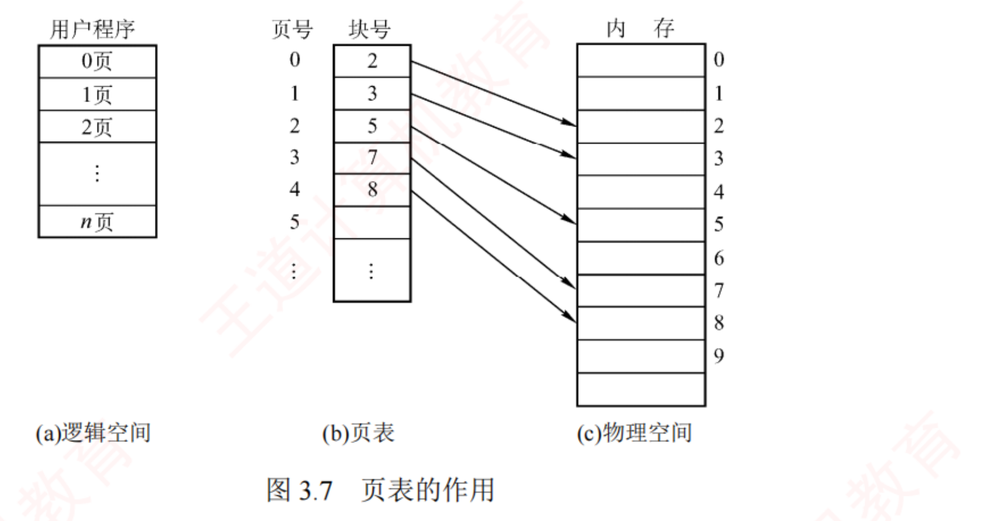
图 3.7 页表的作用（p.184）——看中间那张页表：左边一列"页号 0,1,2,3,4"是画上去帮你看的 ，实际并不存储 （它就是数组下标）；真正存在内存里的只有右边那列块号 2,3,5,7,8。右边物理空间里的箭头是乱序的 ——这正是"离散分配"四个字的图像：逻辑上连续的 0~4 页，物理上分散在 2/3/5/7/8 号页框 。
必记 · 页表是什么 + p.185 那个注意框
每个进程建一张页表 ：按页号顺序排列的数组 ，每个页表项记物理页框号 + 状态信息（有效位、访问位等） 。注意框（p.185 原话）：页表项按页号顺序连续存放，因此页号作为索引是隐含的，无须在页表项中显式存储 。
我的补讲 · "页号不存"这句话，一年能考出三种题
书上专门加了一个注意框讲"页号不存" → 潜台词是页表是数组不是键值对 → 所以能考：
问法 答案 算式 页表项至少几位 只算页框号 （+ 若干标志位） 物理内存 2³²B、页 4KB ⟹ 2²⁰ 个页框 ⟹ 20 位 ，⌈20/8⌉ = 3B 为什么实际用 4B 对齐 + 预留标志位 （有效位、访问位、修改位…）3B 不对齐，取 4B 后正好 4KB/4B = 1024 项/页 第 K 项在哪 页表始址 + K × 页表项长度 这就是 2024 年"页表项地址的计算"那道题
⟹ 三个问法共用一个前提：页表项是等长的、连续存放的 。一旦等长连续，下标就能算出地址，页号自然不用存。
⚠️ 同一句话在 3.1.4 段表那里会原样再说一遍（段号也不存），在 3.1.5 段页式那里说第三遍。三处一模一样，一次记住省三次。 知识串联 · 页表 = 数组，不是查找表
连到数构 "按下标直接定位、不存关键字"是数构 ch7 里顺序表与散列表的分水岭 ：
页表用的是直接定址法 （关键字即下标，零冲突、零比较）；而 TLB 用的是"并行比较标记"，那才是相联查找。 连到组原 组原 Cache 里直接映射 同理——组号直接由地址算出、不用比；只有标记位需要比 。
⟹ 一句话：页表 : TLB ＝ 直接映射 : 全相联。 这句类比在 3.2.9 地址翻译里会被原样用上。
我的补讲 · 页表放在哪？这个问题决定了"为什么要两次访存"
书上说 PTR 存的是"页表在内存中 的始址" → 潜台词是页表本身就住在内存里 → 所以能考两条：
问 答 推论 页表存在哪 内存（主存） ，进程不运行时其始址与长度存在 PCB 里查页表 = 一次访存 ⟹ 加上取数据共两次为什么单 CPU 只要一个 PTR 同一时刻只有一个进程在 CPU 上运行 进程切换时要重新装载 PTR （也因此要清空/切换 TLB ——ch2 2.2 讲过上下文切换的开销就包括这个）
⟹ 把这两条串起来就能回答"为什么进程切换比线程切换贵"：线程共享同一页表，切换不必换 PTR、不必刷 TLB 。
这正是 ch2 2.1 里"线程切换开销小"那句话的物理原因。 2．基本地址变换机构
考点追踪 · 页式系统的地址变换过程（2013、2021、2024）
考点追踪 · 页表项地址的计算与分析（2024）
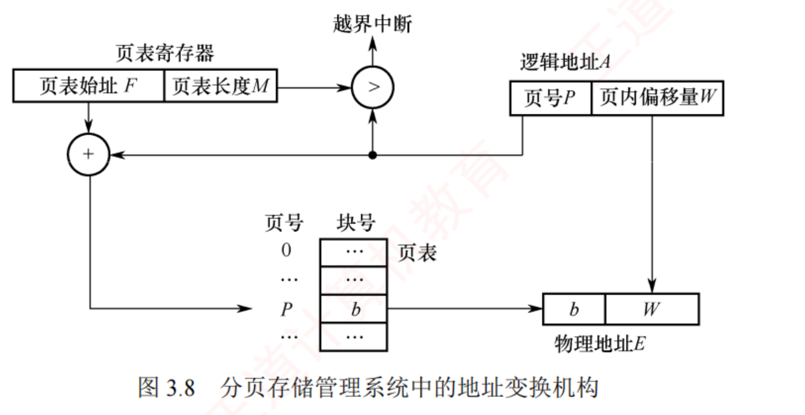
图 3.8 分页存储管理系统中的地址变换机构（p.184）——三条线各走各的，一条都不能串 ：① 页号 P 往上 走去和页表长度 M 比 >（越界中断）；② 页号 P 往左 走和页表始址 F 相加，得到页表项的地址 （不是物理地址！）；③ 页内偏移 W 原封不动 直接落到物理地址 E 的低位。W 全程不参与任何运算 ，这是本图最该记住的一件事。
必记 · 四步地址变换（连同 PTR 一起背）
页表寄存器 PTR 存
页表在内存中的始址 F 和页表长度 M 。
单 CPU 系统通常只设一个 PTR ；
进程未执行时，其页表始址和长度保存在该进程的
PCB 中，被调度时由 OS 装入 PTR。
设页面大小 L，逻辑地址 A → 物理地址 E：
步 动作 公式 ① 拆地址 P = ⌊A/L⌋，W = A mod L ② 判越界 若 P ≥ 页表长度 M ⟹ 越界中断 ③ 查页表取块号 b 页表项地址 = F + P × 页表项长度 ④ 拼物理地址 E = b × L + W
⚠️ 原文强调：
物理地址 = 页面在内存中的始址 + 页内偏移量，而页面在内存中的始址 = 块号 × 块大小 。
⭐
书上算例 ：L = 1KB，页号 2 对应物理块 b = 8，逻辑地址 A = 2500 ⟹ P = ⌊2500/1K⌋ =
2 ，W = 2500 mod 1K =
452 ，E = 8×1024 + 452 =
8644 。
陷阱 · 全章第一大失分点：E = b × L + W，不是 b + W
块号 b 是"第几块"，不是"第几个字节"。 要先乘块大小换算成字节地址，再加偏移。验算技巧：算完看看 E 是不是落在 [b×L, (b+1)×L) 里。 上例 8644 落在 [8192, 9216)，✅。⚠️ 若逻辑地址以二进制/十六进制 给出，则根本不用乘除——直接把高位的页号换成块号、低位原样保留 即可。
书上也点了这句：「若逻辑地址以二进制给出，页号与页内偏移可直接截取高位低位，效率更高」 。
考场上凡是给十六进制地址的，一律走截位拼接，不要转十进制去做乘法——那是给自己制造算错的机会。
我的补讲 · 两种给法各配一个模板，考场直接套
真题给地址只有两种给法，对应两套完全不同的手法：
给法 手法 例 十进制 除法取商余 ⟹ 查表 ⟹ 块号×块大小+偏移 2500, L=1K ⟹ P=2,W=452 ⟹ 8×1024+452 = 8644 十六进制/二进制 只做截位与拼接，一次乘法都不做 0A6FH，页 1KB ⟹ 偏移 10 位：页号 000010=2，块号 11=001011 ⟹ 拼得 2E6FH
⚠️ 右边这个例子是 3.2 的选 20，2 分钟内必须做完。关键是先画一条竖线把低 10 位切开 ，
剩下的只是把高位那几位替换掉。凡是动手转十进制的，都会超时。 必记 · 分页地址是一维 的（这句话每年都在选项里）
分页的逻辑地址可视为一维线性地址 ，仅需一个整数即可表示 ——页号与页内偏移是硬件从这一个整数里截出来的，对用户完全透明 。
（对照：3.1.4 的分段是二维，必须由用户同时给出段号和段内偏移。）
必记 · 分页面临的两个挑战 ⟹ 引出后面两小节
① 每次访问都要地址转换（速度慢：至少两次访存） ⟹ 引出快表 TLB ；页表本身占用内存空间（且要求连续） ⟹ 引出多级页表 。
知识串联 · 页表项地址 = 数组寻址公式，数构第一章就给过
连到数构 ch1 页表项地址 = F + P × 页表项长度 就是数构的一维数组元素地址公式
Loc(a[i]) = Loc(a[0]) + i × L；段表项地址 = M + K × 6 同理。连到组原 ch4 而在组原里，这条式子叫变址寻址 （EA = (IX) + A）：变址寄存器装下标、形式地址装数组首址 ，
"面向用户，适合处理数组问题" ——与这里"用页号索引页表"是同一条硬件通路。⟹ 一条公式三处出场（数构给数学、组原给硬件、OS 给用途），2024 年考"页表项地址的计算"时，用哪一科的语言答都对。
知识串联 · 「越界中断」是本章出现次数最多的异常，四处口径一致
跨章枢纽 本章一共触发过四种越界/缺失事件，它们的性质和后果各不相同：
事件 什么时候 性质 后果 页号越界 P ≥ 页表长度 程序性异常（故障） 通常杀死进程 段号/段内越界 S ≥ 段表长度 或 W ≥ 段长 同上 同上 缺页 状态位 P = 0 异常（故障） 调入后重新执行 该指令 TLB 未命中 快表里没有 不是异常 ，硬件自行处理多访存一次，装入快表
⚠️ 第四行是最容易答错的：TLB 未命中不触发任何中断/异常 ，它只是慢一点。
凡是选项写"快表未命中会产生中断"，一律错——这与组原里"Cache 未命中不通知 OS"是同一条道理。 3．具有快表的地址变换机构
考点追踪 · 具有快表的地址变换的性能分析（2009）
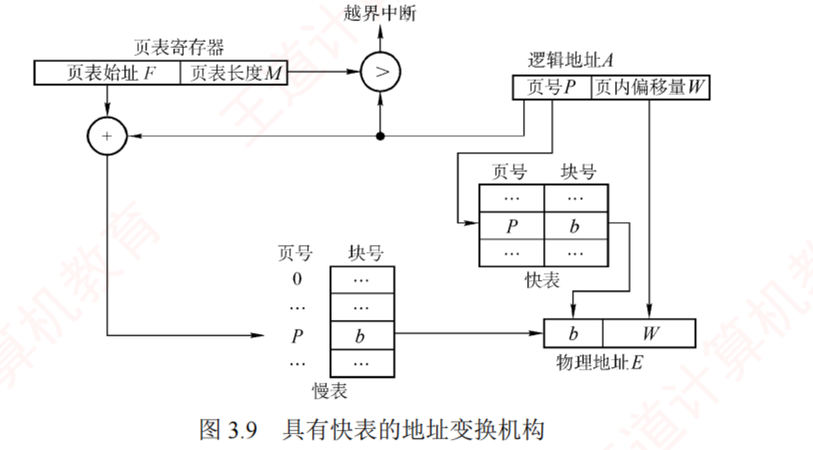
图 3.9 具有快表的地址变换机构（p.186）——和图 3.8 逐字对比，只多了右边那张小表 ：快表里页号和块号都要存 （因为它不是按下标索引，要拿页号去并行比对 ），而下面的慢表仍然只存块号。"快表存页号、慢表不存页号"是两张表最本质的差别 ，也是"快表是相联存储器"的直接证据。
必记 · TLB 的定义与三条路径
页表全放内存 ⟹
每次访问至少需两次访存 （一次查页表、一次访目标）。
快表 TLB ＝具有
并行查找能力 的高速缓冲存储器，缓存当前活跃的若干页表项；主存中的完整页表称
慢表 。
情况 访存次数 附带动作 TLB 命中 1 次 （直接取块号拼接后访问目标）— TLB 未命中、页在内存 2 次 （查页表 + 访目标）把该页表项装入快表 ；若快表已满则按置换算法淘汰一个旧项 页不在内存（3.2 才有） 2 次 + 一次磁盘 I/O 缺页中断
⭐
在程序具有良好局部性的前提下，快表命中率通常可达 90% 以上 ⟹ 分页机制带来的性能开销可控制在 10% 以内。快表的有效性基于局部性原理 。 我的补讲 · EAT 这类题只有一个公式，但有三个陷阱
2009 年考"具有快表的性能分析" → 潜台词是要能列 EAT（有效访问时间）式子 → 模板：
EAT = 命中率 × (查TLB + 一次访存) + (1−命中率) × (查TLB + 查页表 + 一次访存)
陷阱 说明 出处 ① 查 TLB 的时间要不要单独算 题干若给了"访问快表 20ns"就必须算，且未命中时这 20ns 也照样花了 3.2 综 02 ② 两级页表未命中是几次访存 3 次 （一级页表 + 二级页表 + 目标数据）2014 选 14：0.75×1 + 0.25×3 = 1.5 次 ③ 多级页表命中快表时是几次 1 次 ——快表里存的是完整页号 对应的页框号，不是某一级的3.2 综 07 的"注意"框，最易错
⟹ 第 ③ 条是全章最容易想歪的一处：多级页表并不会让快表也变成多级。快表永远是"完整虚页号 → 页框号"的一步到位。 知识串联 · TLB 就是"页表的 Cache"，组原那套全部适用
跨科枢纽 组原 ch3 的 Cache 命中率与平均访问时间公式，与这里的 EAT 是同一个式子 ；
TLB 的"全相联/组相联/直接映射"选择、"标记 + 组索引"的划分，也和 Cache 一模一样 （3.2.9 会用四路组相联的 TLB 做例子）。局部性 书上说"快表的有效性基于局部性原理，这一原理将在 3.2 节介绍"——
而组原 ch3 早就讲透了：时间局部性 ⟹ 刚查过的页表项还会再查；空间局部性 ⟹ 同一页里的相邻地址还会再访问。 ⟹ 遇到"为什么 TLB 命中率能到 90%"这种题，答案就是这两条局部性，和 Cache 的答案逐字相同。
我的补讲 · 快表的三个数字：条目数、命中率、位置
书上只说"缓存当前活跃的若干页表项" → 潜台词是快表很小 → 但小到什么程度会直接进计算题：
指标 典型值 为什么 条目数 几十到几百项 （3.2.9 那个例子只有 16 项 ）要并行比较，越大越贵 命中率 90% 以上 靠局部性；题目常给 0.9 / 0.98 让你算 EAT 位置 在 MMU 内部（CPU 里），不是内存 所以命中时不需要访存 ，只需一点点查表时间
⚠️ "快表命中不需要访存"这句话是 EAT 计算的前提：命中时的那"1 次访存"是取数据 ，不是查快表 。
很多人把它算成 2 次，整道题的数就全偏了。 4．两级页表
考点追踪 · 多级页表的特点和优点（2014）
考点追踪 · 两级页表的逻辑地址结构及相关分析（2010、2013、2015、2017—2019）
考点追踪 · 二级页表的页表基址寄存器中的内容（2018、2021）
考点追踪 · 二级页表中的地址变换过程（2015、2017）
必记 · 问题从哪来（这段数字必须自己能推）
32 位、页面 4KB、页表项 4B ⟹ 页内偏移 12 位、页号 20 位 ⟹
每进程页表最多 2²⁰ 个页表项，仅页表就占 2²⁰ × 4B / 4KB = 1K 个页（＝ 4MB） ；
而且还要求这 4MB 连续存放 ⟹ 显然不切实际。
必记 · 解决思路的两个方面（2014 年考的就是这个）
把页表本身也视为可分页的对象 ：对页表采用离散分配 ，用一张专门的索引表记录各页表页在内存中的位置（⟹ 消除对连续内存的需求）；仅将当前活跃的部分页表项调入内存，其余驻留磁盘、按需调入（虚拟内存的思想） （⟹ 减少内存占用）。外层页表（页目录） 。4KB/4B = 1024 个页表项/页 ，总页表项 2²⁰ ⟹ 需 2²⁰/2¹⁰ = 1024 个页表页 ，
外层页表恰含 1024 个表项、恰好占一页（4KB） 。
必记 · 图 3.10 两级页表的逻辑地址格式（表格重排）
31 … 22 一级页号（页目录号）10 位 ⟹ 1024 项，占一页
21 … 12 二级页号10 位 ⟹ 每张页表 1024 项
11 … 0 页内偏移12 位 ⟹ 4KB
10 + 10 + 12 = 32 ，三段的位数是被"页面大小"和"页表项大小"两个数逼出来的，不是随便定的。
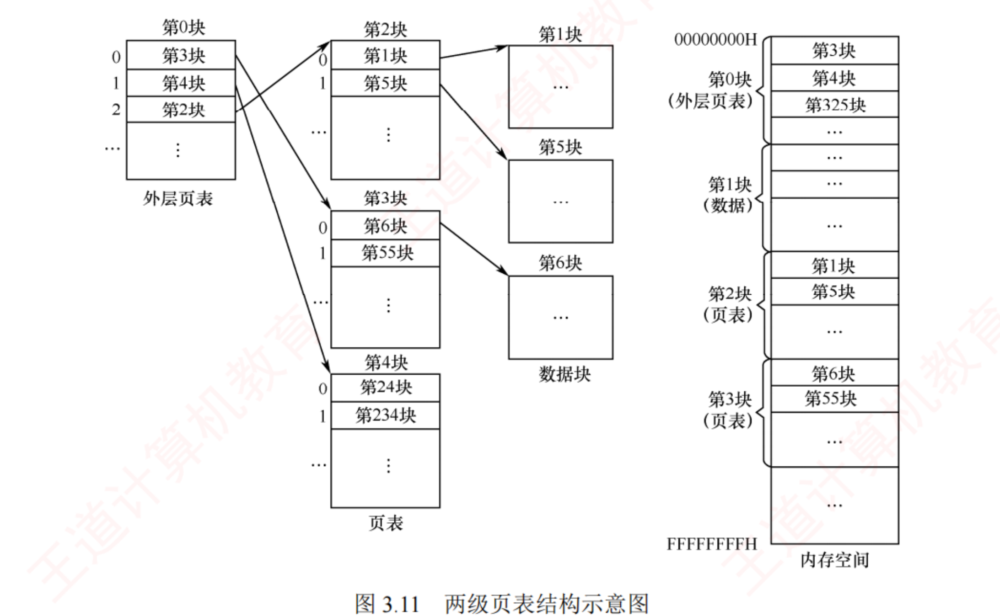
图 3.11 两级页表结构示意图（p.187）——看清楚每一层存的是什么 ：外层页表的表项存「某个页表分页的物理起始地址」 （图上是"第3块/第4块/第2块"，指向的是页表 ）；内层页表的表项才存「进程某页对应的物理块号」 （指向的是数据 ）。右边那条内存空间图更值得看 ：外层页表、页表、数据混在同一片物理内存里 ，谁也不挨着谁——这就是"对页表也采用离散分配"的结果。
必记 · 变换过程 + 访存次数 + 64 位的情况
外层页表寄存器（＝页目录基址寄存器） 存外层页表的起始地址 。三步：内层页表的物理起始地址 ；② 二级页号索引该页表 → 得目标页面的物理块号 ；③ 块号 + 页内偏移 → 物理地址。在无快表的情况下，此过程需三次 访存。 64 位地址 ：页面 4KB ⟹ 页号 52 位，每页存 1024 个页表项 ⟹ 约需 6 级页表 ；实际系统通常将虚拟地址限制为 48 位 ，采用三级或四级页表 。建立多级页表的根本目的：通过按需分配页表页，避免为未使用的地址空间预留大量无用的页表项，进而显著节省内存开销。
我的补讲 · 「几级页表」这类题有个万能算式，2018/2019 反复考
书上用 48 位那个例子演示了一遍 → 潜台词是这是个可套公式的题型 → 模板（3.2 综 07 第 1 问原样考过）：
级数 = ⌈(逻辑地址位数 − 页内偏移位数) ÷ log₂(每页能装的页表项数)⌉
题给 代入 答案 32 位、页 4KB、页表项 4B (32−12) ÷ log₂(4K/4B=1024) = 20 ÷ 10 2 级 48 位、页 4KB、页表项 8B (48−12) ÷ log₂(4K/8B=512) = 36 ÷ 9 4 级 （且最高级恰好占满一页）64 位、页 4KB、页表项 4B (64−12) ÷ 10 = 5.2 ⌈5.2⌉ = 6 级 （书上说的"约需 6 级"）
⚠️ 分母是 log₂(每页容纳的页表项数) ，不是页表项本身的位数——3.2 选 38 的错误选项"3 级"就是把 32 位实地址代进去算的。
⚠️ 分子用的是虚拟地址 位数。这两处一错，整题全错，而且四个选项通常正好覆盖这两种错法。 我的补讲 · 2018/2021 两次考"基址寄存器里装的是什么"，答案只有一句话
书上说外层页表寄存器"存放外层页表的起始地址" → 潜台词是它存的是物理地址 ，而且是顶级 页表的 →
所以能考三种错误说法：
说法 对错 理由 存页目录（顶级页表）的物理起始地址 ✅ 必须是物理的——它是地址翻译的起点 ，不能再被翻译 存二级页表的起始地址 ❌ 那是页目录表项 里的内容，不是寄存器里的 存页目录的虚拟地址 ❌ 自指循环：翻译虚地址要先查页表，查页表又要先翻译……
⟹ 一句话记：顶级页表基址寄存器里必须是物理地址，且每次进程切换时由 OS 重新装载 （它保存在 PCB 里，与 3.1.3 前面 PTR 那句话是同一件事）。 知识串联 · 多级页表 ＝ 多级索引，你在数构和 OS ch4 都会再见到它
连到数构 "为大表再建一张小表，只把用到的部分调进来"就是多级索引 的思想，
与数构 ch7 的 B 树/B+ 树 、分块查找的索引表 同源。"外层页表恰好占一页"对应的正是 B+ 树"一个结点恰好一个磁盘块"的设计原则。 往后连 OS ch4 文件的多级索引结构（一级间址/二级间址/三级间址） 与这里逐字对应：
索引块 = 页表页，索引项 = 页表项，"能索引多大的文件" = "能覆盖多大的地址空间" 。⟹ 两章的计算题模板完全可以互换，做熟一边等于做熟两边。
我的补讲 · 多级页表到底省了多少？自己算一次就再也不会答错
书上只定性地说"节省内存开销" → 潜台词是它能被定量比较 → 拿 32 位、页 4KB、页表项 4B 的机器算一遍：
情形 单级页表 两级页表 进程只用了 1 页 的地址空间 仍需 2²⁰ 项 = 4MB （页表必须完整建好）1 页页目录 + 1 页二级页表 = 8KB 进程用满 4GB 4MB 4MB + 4KB（多了一层页目录） 对连续内存的要求 4MB 必须连续 每片只要 4KB 连续
⟹ 三行对比说明了三件事：稀疏时省得惊人（4MB → 8KB）、用满时反而多花一页、任何时候都解决了"连续"这个硬约束 。
第三行往往被忽略，但它才是多级页表必须 存在的理由——4MB 连续内存在实际系统里根本要不到。 陷阱 · 多级页表"省内存"是有条件的，别答反了
多级页表在地址空间稀疏 时才省内存 （大量未使用的区域根本不建二级页表）。
若进程真的用满了整个地址空间，多级页表反而更费 （多了一层页目录）。 而它的代价是确定的：无快表时访存次数从 2 次升到 3 次（n 级则 n+1 次） 。
这两句正是 3.1.6 小结里"多级页表解决了什么问题、又带来什么问题"的标准答案。
📄 p.187
3.1.4 基本分段存储管理
必记 · 分页与分段的出发点不同（这句话是本节所有结论的根）
・分页 从计算机的角度 出发，目的是提高内存利用率和系统性能，地址转换由硬件完成、对用户完全透明 ；分段 从用户和程序员的实际需求 出发，支持方便编程、信息保护与共享、动态增长、动态链接 。
我的补讲 · 记住"谁的需求"，后面五条区别全能推出来
书上把出发点写在最前面 → 潜台词是后面每一条区别都是从这一条推出来的 ，不用死背 →
自己推一遍（3.3 疑难点那张表就是这么来的）：
因为出发点是… 所以… 分页是系统 的需要 ⟹ 大小由系统 定 ⟹ 固定 ⟹ 用户看不见 ⟹ 一维 地址 分段是用户 的需要 ⟹ 大小由程序逻辑 定 ⟹ 不固定 ⟹ 用户必须自己给段号 ⟹ 二维 地址 页大小固定 ⟹ 装不满的那点剩在页内 ⟹ 内部碎片，无外部碎片 段长按需 ⟹ 切得刚好但段间留缝 ⟹ 外部碎片，无内部碎片 段是"有意义的整体" ⟹ 共享/保护以段为单位最自然 ⟹ 共享一个段只需一个段表项
⟹ 五条区别、一个根。考场上若一时想不起某条，就回到"这是给谁用的"重推一次，比背表可靠。 1．分段
考点追踪 · 分段系统的逻辑地址结构分析（2009）
必记 · 段的划分与二维地址
逻辑地址空间划分为
若干大小不等的段 （主程序段、子程序段、栈段、数据段…）。
每个段内部从 0 开始编址，分配一段连续的地址空间（段内连续，段间不要求连续 ）
⟹ 逻辑地址结构呈现
二维特性：由段号和段内偏移共同确定一个地址 。
31 … 16 段号 S16 位 ⟹ 最多 2¹⁶ = 65536 个段
15 … 0 段内偏移量 W16 位 ⟹ 最大段长 64KB
⚠️
页式中页号与页内偏移对用户透明；分段中段号和段内偏移必须由用户显式提供 ——这一工作在高级语言中由
编译程序自动完成 。
陷阱 · "分段地址是二维的"≠"要写两个数字"
硬件拿到的仍然是一串二进制 ，二维指的是语义上必须同时指明"哪个段"和"段内第几个字节"，且两者互不影响 ：
段号加 1 不等于地址加某个固定值（因为段长不等）。而分页是一维的关键在于：页号加 1 就等于地址加一个页面大小 ——所以它可以被压成一个整数，由硬件自己截。⟹ 判据：能不能只给一个整数就唯一确定位置 。能 ⟹ 一维（分页）；不能 ⟹ 二维（分段、段页式）。
我的补讲 · 分段为什么"便于动态增长"？这是段独有的一条优点
书上在开头列了分段的四个好处（方便编程、信息保护与共享、动态增长 、动态链接），后面却只展开了共享与保护 →
但"动态增长"是能出选择题的 → 补一句为什么：
要增长时发生什么 分段 只需改段表项里的"段长" （若后面有空间就地扩；不够则整段搬走并改基址）⟹ 数据段/堆可以自然增长 分页 页面大小固定 ⟹ 增长意味着多给一个页框、多加一个页表项 ，同样可行但没有"这一段变长了"这个语义
⟹ 所以"支持动态增长"是站在用户/语义 角度说的（一个有意义的整体变大了），
与本节开头"分段从用户需求出发"是同一件事。这也是段式在现代系统里被保留下来的少数理由之一 （如 x86 的段寄存器）。 2．段表
必记 · 段表项的两个字段（图 3.13 重排）
每进程一张
段表 ，每段一个段表项，记
基址（本段在主存的始址）+ 段长 。
段号（隐含，不存） 段长 C 本段在主存的始址 b 作为数组下标 用来判段内越界 用来加偏移得物理地址
⭐
段表项大小算例 ：32 位分段系统，段号 16 位、段内偏移 16 位（段长字段 16 位对应最大段长 64KB），物理地址 32 位（可寻址 4GB）
⟹ 每个段表项至少 16（段长）+ 32（基址）=
48 位 = 6B ；段表首地址 M ⟹
第 K 号段的段表项位于 M + K×6 。
我的补讲 · 段表项为什么比页表项胖一倍
页表项 4B、段表项 6B → 潜台词是段表项多存了一个"段长" → 所以能考"为什么分段要两次越界检查"：
页表项存什么 越界怎么判 分页 只存块号 只判一次 ：页号 ≥ 页表长度？（页内偏移不可能 越界，因为页面大小固定，偏移位数天然就那么多）分段 存基址 + 段长 判两次 ：① 段号 ≥ 段表长度？② 段内偏移 ≥ 段长？ （段长不固定，偏移完全可能超出本段）
⟹ 「分段比分页多一次越界检查」的根本原因就是段长不固定 ，而这又源于"段是按用户逻辑划分的"。
一条链推到底：用户需求 → 段长不定 → 段表要存段长 → 段表项更大 → 多一次比较 。
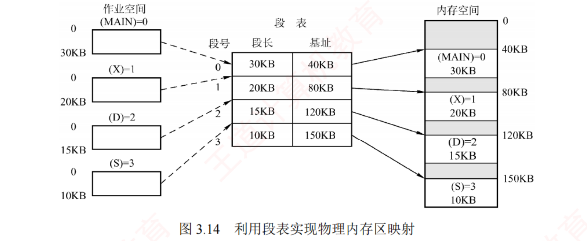
图 3.14 利用段表实现物理内存区映射（p.188）——盯住右边内存空间里的灰条 ：四个段落在 40KB/80KB/120KB/150KB，彼此之间夹着灰色的空隙 。这些空隙就是外部碎片 ——分段"段内连续、段间不连续"的直接后果。左边作业空间里四个段各自从 0 开始编址 ，这正是"二维地址"的图像。
3．地址变换机构
考点追踪 · 段式系统的地址变换过程（2016）
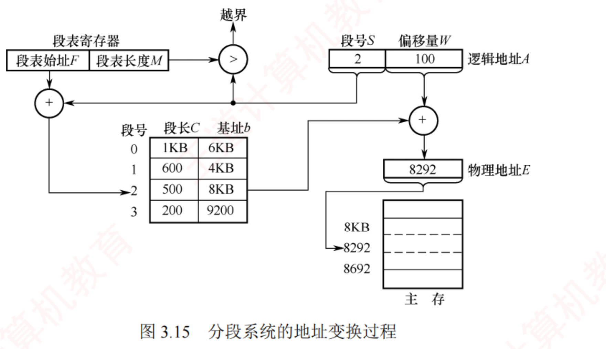
图 3.15 分段系统的地址变换过程（p.189）——把图上的数字自己算一遍 ：逻辑地址 (段号 2, 偏移 100) → 查段表第 2 行得 段长 500 / 基址 8KB → 先判 100 < 500 ✅ 不越界 → 再算 8×1024 + 100 = 8292 。注意与分页的差别：这里是基址 + 偏移 （真加法），分页是块号 × 块大小 + 偏移 （要先乘） ——因为段表里存的本来就是字节地址。
必记 · 四步变换（与分页逐条对照记）
步 分段 分页（对照） ① 从逻辑地址 A 分离出段号 S 和段内偏移 W 同（页号 P、页内偏移 W） ② 若 S ≥ 段表长度 M ⟹ 段号越界中断 同 ③ 段表项地址 = F + S × 段表项长度 ；取段长 C，若 W ≥ C ⟹ 段内越界中断 分页没有这一步 ④ 取基址 b，物理地址 E = b + W E = b × L + W （多一次乘法）
⚠️
与分页最大的差别：分段要做两次 越界检查（段号越界 + 段内越界），因为段长不固定。 我的补讲 · 分段地址变换与分页的三处数值差异（做题时最容易串味）
两套变换流程长得极像 → 潜台词是命题人会把公式互换 → 三处差异必须刻在脑子里：
# 分页 分段 为什么不同 1 物理地址 = 块号 × 块大小 + 偏移 物理地址 = 基址 + 偏移 （直接加） 段表存的本来就是字节地址 ，页表存的是第几块 2 越界检查 1 次 越界检查 2 次 段长不固定 3 偏移位数固定 （由页面大小定） 偏移可以任意值 ，只要 < 段长 段长因段而异
⟹ 一个自检技巧：算完分段的物理地址，把它减去基址，看是不是等于题给的偏移 ；
算完分页的物理地址，看它落不落在 [块号×块大小, (块号+1)×块大小) 里。两个检查各花五秒，能挡掉绝大多数低级错误。 4．分页和分段的对比（三条，必背）
必记 · 原文三条
1) 页是系统管理内存的物理单位 ，分页目的是提高内存利用率 ，完全由系统实现、对用户透明 ；
段是用户程序的逻辑单位 ，分段目的是满足编程、共享、保护 等需求，由编译器根据程序结构划分，对用户可见 。2) 页的大小固定，由系统决定；段的长度不固定，取决于程序的逻辑结构。 3) 分页地址空间是一维的 （只需单一线性地址）；分段地址空间是二维的 （必须同时指定段名/段号 和 段内偏移量）。
5．段的共享与保护
考点追踪 · 页、段共享的原理和特点（2019、2023）
必记 · 共享段表与 count
分页也能共享，但远不如分段方便 ：共享代码占 N 个页框 ⟹ 每个共享进程页表中需建 N 个页表项 ；
分段中无论段多大，只需在每个进程段表中设一个 段表项指向该共享段 。共享段表 ：每个共享段一个表项，记段号、段长、内存起始地址、存在位、外存起始地址 以及共享进程计数 count 。
某进程不再使用时 count 减 1；仅当 count = 0 时才回收该段所占内存 。同一共享段在不同进程中可以有不同的段号 ，各进程通过各自的段号即可访问同一物理段。分段的保护机制两类 ：① 地址越界保护 （段号 ≥ 段表长度 ⟹ 越界；段内偏移 ≥ 段长 ⟹ 越界）② 存取控制保护 （段表项中的访问权限位 ）。
陷阱 · 2019 年那道题考的是"旧方法"，脚注①必须看
书上脚注原文 ：段共享的实现，汤小丹老师的旧教材采用「配置共享段表」的方法；新版教材采用「在每个进程的段表中设置一个段表项，指向被共享的同一个物理段」。
2019 年统考真题考查的是前述方法 （即在每个进程段表中设段表项）。⟹ 遇到"共享段在各进程中段号是否必须相同"：答可以不同 。这是两种实现共有的结论，不受上面那段区分影响。
我的补讲 · 共享的三个数字题，用 3.1.1 那个 40 用户算例串起来
2019 与 2023 两年都考"页、段共享的原理和特点" → 潜台词是它只会以数数 的形式出现 → 所以练这三问就够：
问 分页系统 分段系统 共享 160KB 代码需几个表项／进程 40 个页表项 （页 4KB）1 个段表项 共享内容能不能被改 都不能 ——共享的必须是可重入代码（纯代码） ，且各进程要有私有数据区 什么时候真正回收内存 count = 0 时 （共享段表里的引用计数）
⟹ 「40 vs 1」这个对比是本节的题眼；而"必须是纯代码"和"count 归零才回收"两条分页分段通用 ，选项里若写成"分段特有"就是错的。 知识串联 · count 就是引用计数，你在 OS ch4 还会见到它
往后连 OS ch4 文件的硬链接 用的就是同一个机制：索引结点里存链接计数 count ，
删除文件时先减 1，减到 0 才真正释放磁盘块 ——和这里"count=0 才回收该段内存"逐字对应。连到 3.2.7 内存映射文件 实现共享内存也是同一思路：多个进程的虚页映射到同一物理页 ，
区别只在共享的粒度（段 vs 页）和触发方式（段表项 vs 系统调用）。⟹ 「多人共用一份实体，靠计数决定何时销毁」这个模式在 408 里至少出现四次（共享段、硬链接、内存映射、信号量的等待队列），遇到就能直接类推。
知识串联 · 段的保护位 ↔ 组原的访问权限 ↔ ch4 的文件权限
跨章枢纽 段表项里的"访问权限位"（可读/可写/可执行） 在三处出现过：
科目/章 叫什么 粒度 本节 段表项的存取控制字段 一个段 3.2 请求分页 页表项里的保护位（配合状态位/修改位 ） 一个页 OS ch4 文件 访问控制表 / 存取控制矩阵（rwx） 一个文件
⟹ 三处的题目问法一样：「谁能读、谁能写、越权时发生什么（触发保护异常）」 。
而"纯代码段只读"这条，正是 3.1.1 内存共享那一段的硬件保障。 📄 p.190
3.1.5 段页式存储管理
必记 · 段页式的做法与三段地址
先把地址空间划分为
若干逻辑段 （每段唯一段号），
每段再划分为若干大小固定的页 ；内存仍按分页方式管理，
内存分配以物理块为单位 。
段号 S 查段表
页号 P 查该段的页表
页内偏移量 W 直接拼接
⚠️
注意框（p.190）：在段页式存储管理中，每个进程仅有一张段表，但可能有多张页表（每段一张） 。
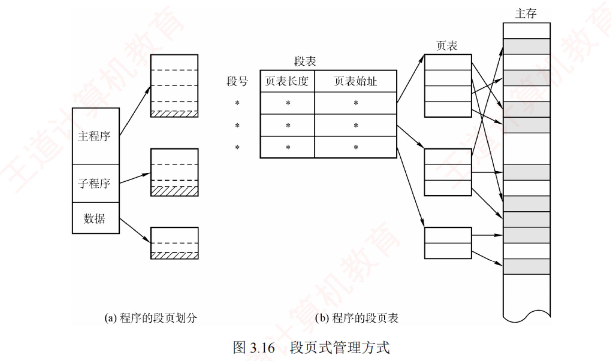
图 3.16 段页式管理方式（p.190）——数一数图上有几张表 ：中间一张 段表（每行是「页表长度 | 页表始址」），右边三张 页表（主程序、子程序、数据各一张）。这张图就是"一张段表 + 多张页表"那个注意框的图证。 再看最右侧主存：同一个段的几个页并不相邻 ——段内也是离散存放的。
必记 · 段表项变了：不再存基址和段长，而是存"页表信息"
每进程一张段表 ，每个段表项记该段的页表始址和页表长度 （段号作段表索引，无须显式存储）；
每段还对应一张页表 ，页表项记物理块号（页号作页表索引，亦无须存储）；
设段表寄存器 存当前进程段表的起始地址和长度，既用于段表寻址，也用于段号越界检查 。
我的补讲 · 三种方式的表项内容对照表（这是最容易混的一处）
书上三节各说了一遍"表项里存什么" → 潜台词是命题人会把三者的表项内容互换 → 所以把三张表并排放一次，看完这辈子不混：
方式 表项里存 什么 表项里不存 什么 越界检查次数 分页 物理块号（+状态位） 页号 （隐含下标）1 次 分段 段长 + 基址 段号 2 次 段页式 段表项：页表长度 + 页表始址 ；页表项：物理块号 段号、页号都不存 2 次 （段号越界 + 页号越界）
⟹ 注意段页式的段表项里没有段长、没有基址 ——段长的角色被"页表长度"顶替了，基址的角色被"页表始址"顶替了。
凡是选项写"段页式的段表项含段的基址"，一律错。
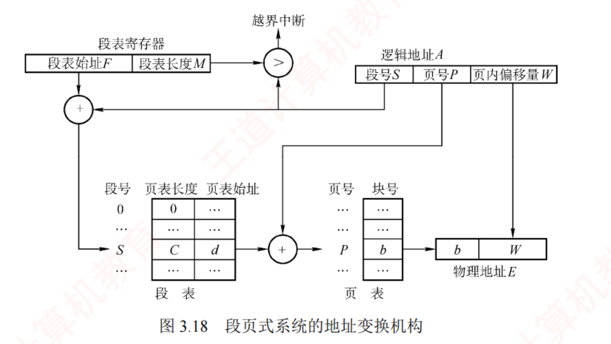
图 3.18 段页式系统的地址变换机构（p.191）——顺着箭头数访存次数 ：① 段表寄存器 + 段号 → 查段表 （第 1 次访存）得「页表长度 C / 页表始址 d」；② d + 页号 P → 查页表 （第 2 次访存）得块号 b；③ b 与 W 拼接 → 访问目标单元 （第 3 次访存）。三次访存的三个箭头在图上清清楚楚，这就是"无快表时需三次访存"的来源。
必记 · 变换过程 + 访存次数 + 地址空间维数
① 由段号 S 经段表寄存器定位段表，查得该段对应页表的起始地址 ；② 用页号 P 访问该页表，获取物理块号 ；③ 物理块号 + 页内偏移 W 拼接 → 物理地址。无快表情况下，每次基于逻辑地址的内存访问需三次 访存 ；引入 TLB 后，其表项包含关键字（段号、页号）及对应的物理块号和保护信息 。对用户而言程序仍按段组织，页的划分由系统自动完成且完全透明 ⟹ 段页式管理的地址空间是二维的 （与分段一致，分页机制对用户不可见）。
我的补讲 · 「几次访存」是本章最爱考的一个数字，整理成一张表
书上在三处分别说了"两次""三次" → 潜台词是它会以对比形式出现 → 一次列全：
方式 无快表 快表命中 为什么 基本分页 2 次 1 次 页表 1 + 目标 1 两级页表 3 次 1 次 页目录 1 + 页表 1 + 目标 1 n 级页表 n+1 次 1 次 快表存的是完整虚页号 → 页框号 ，一步到位 基本分段 2 次 1 次 段表 1 + 目标 1 段页式 3 次 1 次 段表 1 + 页表 1 + 目标 1 请求分页且缺页 上述次数 + 一次磁盘 I/O + 重新执行该指令 3.2.2
⚠️ 「快表命中一律 1 次」这一行是最值钱的：无论几级页表、无论段页式，命中快表就只剩访问目标数据这一次访存。
3.2 综 07 的"注意"框专门强调过这一点，也正是 2014 选 14（0.75×1+0.25×3=1.5）的算法依据。 我的补讲 · 段页式在真题里只以一种形式出现：数访存次数
段页式整节只有两页，历年真题几乎不单独出它 → 潜台词是它只作为对照项 存在 → 所以准备成本应该压到最低：
只需记住 内容 结构 一张段表 + 每段一张页表 地址 段号 S | 页号 P | 页内偏移 W （三段）访存 无快表 3 次 ；有快表命中 1 次维数 二维 （跟分段一致，因为分页对用户不可见）
⟹ 四条，二十秒能背完。把省下的时间全部投给 3.2 ——这是本章最划算的一次取舍。 知识串联 · 三张表的"寄存器 + 表 + 越界"结构完全同构
回看本节 分页、分段、段页式的地址变换机构长得几乎一样，都是
「一个寄存器 + 一张表 + 一次越界比较」 ：
方式 寄存器存什么 表里存什么 比什么 分页 页表始址 F + 页表长度 M 块号 P vs M 分段 段表始址 F + 段表长度 M 段长 + 基址 S vs M，再比 W vs 段长 段页式 段表始址 F + 段表长度 M 页表长度 + 页表始址 ，再查页表得块号S vs M，再比 P vs 页表长度
⟹ 记住这个骨架，三张图（3.8 / 3.15 / 3.18）就是同一张图填不同的字。
考场上画不出图没关系，能说出"寄存器里有什么、表里有什么、比什么"就够拿分。 📄 p.191
3.1.6 本节小结 —— 开头两问的答案
必记 · 1）为什么要进行内存管理？
单道系统中一次仅运行一个程序，分配极简。引入多道程序设计后，多个进程并发执行并共享主存；
若缺乏有效管理，不同进程的地址空间可能重叠或相互覆盖，导致数据被意外修改，破坏程序正确性，严重影响并发可靠性。
必记 · 2）多级页表解决了什么问题？又会带来什么问题？
解决 ：逻辑地址空间较大时单级页表过长、占用内存过多 的问题。分级组织后只需将当前使用的各级页表驻留内存 ，
既减少内存占用 ，又避免对大块连续内存的需求 。带来 ：性能开销 ——在无快表（TLB）的情况下，一次地址变换需逐级访问多级页表，导致多次内存访问，增加访存延迟 。
我的补讲 · 3.1 读完的自查表（能全部答出再进 3.2）
3.1 共 36 页 84 道题，但知识点其实只有下面九条。先合上页面自己答一遍，答不出的回上面对应位置重看 ：
# 自查题 答案要点 1 编译/链接/装入各产出什么 若干目标模块 → 一个装入模块 → 内存中的进程 2 静态重定位为什么不能紧凑 地址已被改写进指令，搬走就全错 3 重定位寄存器与界地址寄存器谁"加"谁"比" 先比（界地址）后加（重定位） ，装载是特权指令4 动态分区回收四情形分别改什么 前邻改大小／后邻改址+大小／全邻删表项／不邻建表项 5 四种适应算法各按什么排序 首次·邻近＝地址 ；最佳＝容量升 ；最坏＝容量降 6 逻辑地址 32 位、页 4KB ⟹ 页号几位、页表几项 偏移 12 位、页号 20 位、2²⁰ 项 7 物理地址怎么算 块号 × 块大小 + 页内偏移 （十六进制则直接截位拼接）8 多级页表级数公式 ⌈(虚地址位数 − 偏移位数) ÷ log₂(每页页表项数)⌉ 9 分页/分段/段页式各几次越界检查、几次访存 1/2/2 次检查；2/2/3 次访存；快表命中一律 1 次
⟹ 第 6、7、8 三条是 3.2 每一道大题的前置步骤，必须做到"看到题就动笔"，不能有半秒犹豫。 📄 p.212
3.2 虚拟内存管理 ← 全章重心：38 页 · 27 道真题 · 8 道综合真题
必记 · 本节开头的三个问题（答案在 3.2.10，读完自己先答）
① 为什么要引入虚拟内存？ ② 虚拟内存空间的大小由什么因素决定？ ③ 虚拟内存是怎么解决问题的？会带来什么问题？ 学习要求（原话）：掌握虚拟内存解决问题的思想，了解各种置换算法的优劣，掌握虚实地址的变换方法 。
我的补讲 · 3.2 的 8 道综合真题都长什么样（先看靶子再学）
本节 27 道真题里有 8 道是综合题（2009/2010/2012/2015/2017/2018/2020/2024），几乎每两年一道 →
我把它们按"问什么"归了三类，读正文时就知道哪些段落是为了做题：
类型 问什么 要用到本节哪几小节 年份 ① 地址翻译类 给虚地址求物理地址／页表项在哪／TLB 与 Cache 命中否 3.2.2 + 3.2.9 （＋组原 Cache）2010 · 2017 · 2018 · 2020 · 2024 ② 置换过程类 画置换表、数缺页次数、比较算法优劣 3.2.4 （＋3.2.5 工作集）2009 · 2012 · 2015 ③ 性能计算类 EAT／缺页率上限／要不要写回磁盘 3.2.2 + 3.2.3 + 3.2.8 混在①②里当小问
⟹ 三类题的共同前置技能只有两个：会拆地址位 （3.1.3 已练）和 会画置换表 （3.2.4 要练）。
其余小节（虚存特征、抖动、页框回收、内存映射文件）全部只出选择题。
⟹ 时间分配：3.2.4 与 3.2.9 合计花掉本节 60% 的时间，剩下的小节各扫一遍即可。 我的补讲 · 3.2 与 3.1 的关系：一句话就能说清，说不清就白读
请求分页 ＝ 基本分页 + 缺页中断 + 页面置换。地址变换那一套原封不动，只是多了"页可能不在内存"这一种情况。
动作 基本分页（3.1.3） 请求分页（3.2） 查页表 一定能查到块号 先看状态位 P ：0 就缺页页表项 块号 + 少量状态 多了 P / A / M / 外存地址四个字段 内存满了 进程根本装不进来 换出一页再装 （置换算法登场）指令执行 一路顺畅 可能中途被打断，处理完重新执行
⟹ 所以 3.1.3 没读透的人，在 3.2 会以为每道题都是新题；读透的人会发现3.2 的题只是在 3.1.3 的题上加了一问 。 3.2.1 虚拟内存的基本概念
必记 · 传统存储管理的两个共同特征（虚存要打破的就是这两条）
1) 一次性 ：作业必须一次性全部装入内存 后才能运行。两个后果：① 作业过大 ⟹ 无法运行 ；② 内存不足 ⟹ 只能少数作业先运行 ⟹ 并发度下降 。2) 驻留性 ：作业一旦装入便一直驻留 ，直至运行结束。然而运行中的进程常因等待 I/O 而被阻塞，可能长时间处于等待状态 。许多暂未使用或暂时不用的代码和数据仍占据大量内存空间，而急需运行的作业却因内存不足无法装入。
我的补讲 · "一次性"和"驻留性"是两把不同的锁，虚存各配一把钥匙
书上并列写了两个特征 → 潜台词是虚存的两个功能正好一一对应 → 所以能考"请求调页/页面置换分别解决了什么"：
锁 钥匙 对应虚存的哪个特征 一次性 （必须全装入）请求调页 ——用到哪页调哪页多次性 驻留性 （装了就不走）页面置换 ——暂时不用就换出去对换性
⟹ 于是"多次性 + 对换性 ⟹ 虚拟性"这句话就不用背了：两把锁各开一把，合起来才让用户觉得内存变大了 。 考点追踪 · 页面置换算法的时间局部性分析（2012）
必记 · 局部性原理（虚存能成立的唯一 依据）
时间局部性 ：某条指令或某个数据项一旦被访问，不久之后很可能再次被访问 （源于程序中大量的循环和重复操作 ）。空间局部性 ：一旦访问了某个存储单元，不久之后其附近的存储单元也很可能被访问 （指令按序存放顺序执行；数据如向量/数组/表等以连续或簇聚方式存放）。高速缓存 + 多级缓存层次 ；空间局部性 → 较大容量缓存 + 预取机制 。虚拟内存技术正是基于局部性原理，将外存作为内存的透明扩展。
知识串联 · 局部性原理是 408 最大的一个跨科枢纽，本章至少用到它四次
跨科枢纽 这一条原理在四科里各出场一次，
说法不同、内核相同 ：
科目 它在那里叫什么 靠哪种局部性 组原 ch3 Cache 能提高命中率 ；一次装入一整块时间 + 空间 OS 本章 3.1.3 快表 TLB 命中率 > 90% 时间 （刚查过的页表项还会查）OS 本章 3.2 虚存可行 、预调页策略 、工作集 两者都要 OS ch5 磁盘预读、缓冲区 空间 数构 ch8 外部排序的归并段、B+ 树一个结点一个磁盘块 空间
⚠️ 2012 年那道真题问的是"时间 局部性"——注意区分：程序里的循环 体现时间局部性，数组顺序访问 体现空间局部性。
3.2.8 里那个"按行存储就按行访问"的算例，考的正是空间 局部性。两者别答反。 考点追踪 · 虚拟存储器的特点（2012）
必记 · 虚存的定义与三个特征
定义 ：
逻辑上远大于物理内存的地址空间 。之所以叫"虚拟"，是因为它
并非真实存在的物理实体 ，
而是 OS 通过
部分装入、请求调页和置换功能（均对用户透明） 所构造的逻辑抽象。
特征 含义 地位 多次性 作业分多次动态调入 ，只需装入当前需要的部分即可开始运行 手段 对换性 运行过程中无须常驻内存 ，可换出到外存对换区，需要时再换入 手段 虚拟性 从用户视角看内存容量被逻辑扩充 本质特征和根本目标，其实现依赖于多次性与对换性
陷阱 · 三个特征 vs 传统存储的两个特征，选项最爱混搭
虚存的是「多次性、对换性、虚拟性」（有的教材加"离散性"）；「一次性」是传统存储系统的特征 ，绝不是虚存的。
（3.2 选 06 的正确答案就靠这一句。）另外三个必错说法： 扩充了 内存或外存容量" ❌ ——它并未实际扩充任何物理容量 ，只是相对地扩充了主存（逻辑空间） ；仅靠软件 即可实现" ❌ ——必须依赖硬件支持 （地址变换机构、缺页中断机构、MMU）；磁盘容量 决定" ❌ ——由虚拟地址位数 决定（见 3.2.10）。
必记 · 虚存的实现基础与四类硬件支持
⭐ 虚拟内存的实现必须建立在离散分配 的内存管理方式基础之上 （连续分配会导致大量空间处于暂时甚至"永久"的空闲状态）。请求分页 / 请求分段 / 请求段页式 存储管理。足够容量的内存和外存 ② 页表机制（或段表机制） ③ 中断机构 （触发缺页中断） ④ 地址变换机构 。
我的补讲 · 请求分页 vs 请求分段：为什么统考只考前者
书上用一句话交代了原因（换入换出单位固定更简单） → 潜台词是考纲里只有"请求页式管理" →
所以复习优先级可以放心地这样排：
考纲 真题 该花多少时间 请求分页 明确列出 27 道（含 8 道综合） 本节 90% 请求分段 / 请求段页式 未单列 0 道 知道"存在且原理类似"即可
⟹ 但要能答一个概念题："虚存可以基于分段实现吗？"——可以（请求分段），只是换入换出单位长度可变、实现更复杂 。
凡是选项说"虚拟存储器只能建立在分页基础上"，错；说"必须建立在离散分配 基础上"，对。 📄 p.213
3.2.2 请求分页管理方式
必记 · 请求分页 = 基本分页 + 两件新东西
请求分页 ＝ 基本分页 + 请求调页 + 页面置换。 为什么请求分页比请求分段更常用（原文） ：每次换入换出的基本单位均为长度固定的页面，比以长度可变的段为单位更简单 ⟹ 实现简洁且效率较高。
知识串联 · 状态位/访问位/修改位，组原的 Cache 行里也有一模一样的三个位
跨科枢纽 组原 ch3 的 Cache 行结构是
有效位 + 标记 + 数据块 ，写策略里还有
脏位（dirty bit） ：
本章（页表项） 组原（Cache 行） 作用完全一致 状态位 P 有效位 V 这块内容作不作数 修改位 M 脏位（写回法用） 换出时要不要写回下一级 访问位 A LRU 位 / 替换控制位 给替换算法当依据
⟹ 连"写回 vs 写直达"的取舍都一样：写回省 I/O 但要脏位，写直达简单但慢 。
本章的"M=0 直接丢弃、M=1 才写回"就是写回法 的翻版。 1．页表机制
必记 · 请求分页的页表项多了四个字段（图 3.19 重排）
OS 必须能够：① 判断某页是否已调入内存 ② 若未调入，知道其在外存的位置 ③ 置换时依据访问特征选择换出页面 ④ 换出时知道是否被修改过。
字段 作用 谁来置位 页号（隐含）· 物理块号 基本分页就有 OS 调入时填 状态位 P（存在位） 是否已调入内存，供地址变换时判断是否触发缺页中断 OS 访问字段 A 本页访问次数 或自上次访问以来的时间间隔 ，供置换算法参考 硬件 （访问时自动置 1）修改位 M（脏位） 调入后是否被修改，决定换出时是否需写回外存 硬件 （写操作时自动置 1）外存地址 该页在外存中的存放位置（通常为物理块号），供调页时读入 OS
我的补讲 · 四个字段各自绑定一道题，一个都不能少
书上把四个字段并列写出 → 潜台词是每个字段都是某个机制的抓手 → 所以能考"缺了某字段会怎样"：
字段 缺了会怎样 对应真题 状态位 P 无法判断是否缺页 ⟹ 整个虚存机制失效 3.2 选 24：合法位决定是否发生页面故障 访问位 A CLOCK / LRU 都失去依据 3.2.4 简单 CLOCK 只用 A 修改位 M 每次换出都得写回磁盘 ⟹ I/O 翻倍 3.2.4 改进型 CLOCK 用 (A,M) 外存地址 知道缺页却不知去哪读 3.2.3「从何处调入页面」
⚠️ 最容易错的一处：选 55 那道题给了页表行里的物理块号 20H，但存在位是 0 ——
存在位为 0 时，页表项里的块号是无意义的旧值，绝不能拿来拼地址 。干扰项 B 就是这么造出来的。
拿到页表先看存在位，这个动作要变成条件反射。 我的补讲 · 缺页处理时进程去哪了？把 ch2 的状态图接上来
书上说"系统在此期间可能会调度其他进程运行" → 潜台词是缺页的那个进程被阻塞了 → 2023 年就考这个：
时刻 缺页进程的状态 发生了什么 触发缺页 运行 → 阻塞 要等磁盘 I/O，让出 CPU 磁盘 I/O 期间 阻塞 OS 调度别的 进程运行 调入完成 阻塞 → 就绪 不是直接回到运行态 ——还要等调度再次被调度 就绪 → 运行 重新执行引发缺页的那条指令
⟹ 这就是 ch2 那张五状态转换图在本章的应用。"阻塞→就绪"而不是"阻塞→运行" 是 ch2 的老考点，
在本章换了个场景又考了一次（2023 选 58）。 2．缺页中断机构
考点追踪 · 缺页处理的过程及效率分析（2011、2013、2014、2020、2022）
考点追踪 · 缺页异常导致进程状态的变化（2023）
必记 · 缺页处理流程
硬件自动触发缺页中断 → OS 的缺页中断处理程序接管 → 内存有空闲页框 ⟹ 分配一个页框，把所缺页面从外存装入，更新页表相应表项；无空闲页框 ⟹ 先由页面置换算法 选一页淘汰；若该页被修改过（M=1），必须写回外存；否则可直接丢弃 ；较长时间的磁盘 I/O ，系统在此期间可能会调度其他进程运行 ；重新执行引发缺页的那条指令 。
必记 · 缺页中断的两个"显著特点"（考了五年）
缺页中断作为一种内中断 ，其处理过程与其他中断类似（保护 CPU 现场 → 分析中断原因 → 转入中断处理程序 → 恢复现场），但有两个显著特点 ：1) 在指令执行期间 触发 ，由当前指令的地址访问直接引发，而非在指令执行完毕之后 ；2) 一条指令在执行过程中可能引发多次 缺页中断 。⭐ 书上算例：执行 copy A to B 时，若指令本身及其两个操作数各自跨越两个页面 ，则最多可能引发 6 次缺页中断 。
陷阱 · 全章分界线之一：缺页是异常 ，返回时"回 i 重执行"
普通中断（外中断）在一条指令执行完 后响应，返回时执行下一条 指令（i+1）；
缺页属于异常（内中断） ，在指令执行中 触发，返回时重新执行原来那条指令 （回 i）。 3.2 选 03 考的就是这个：调入页后访存指令应该重新执行 。 ⟹ 判据：异常是"这条指令没干成"，所以要重来；中断是"外面有事叫我"，本条指令已经干完了。
知识串联 · 这条分界线在 OS ch1 与组原都出现过，三处口径一致
回看 OS ch1 ch1 1.3 运行环境的四条分界线之一就是「中断回 i+1 vs 异常回 i 重执行」 ，
当时举的例子正是缺页 ——本章这里是同一条刀口的第二次出场 。连到组原 ch5 组原把这两类合称异常与中断 ，并强调断点该保存哪一条 ：故障（fault，缺页属之）保存本条 指令地址，中断保存下一条 。三处说的是同一件事。 连到 OS ch2 2023 年考"缺页异常导致进程状态的变化" ：缺页要等磁盘 I/O ⟹ 进程从运行态转为阻塞态 ，
I/O 完成后回到就绪态 （不是直接回运行态 ）——这正是 ch2 2.1 那张五状态转换图的应用。
我的补讲 · "一条指令 6 次缺页"这个算例，正着反着各是一道题
书上用 copy A to B 说明"可能多次缺页" → 潜台词是同一个场景可以从两头问 → 所以能考：
问法 答案 出现在哪 这条指令最多 引发几次缺页 6 次 3.2.2（本处） 系统至少 要给它几个页框 6 个 3.2.3 最小页框数（2025 年考）
怎么数出 6：指令本身跨 2 页 + 源操作数 A 跨 2 页 + 目的操作数 B 跨 2 页 = 6 个不同页面。
⟹ 这两问是同一个算例的两面：一个说缺页次数上限，一个说页框数下限 。
2025 年考"最小物理块数的确定原则"时，能不能立刻反应到这里，就是这道题的分水岭。 我的补讲 · 缺页处理的完整代价：把每一步的时间都摊开（EAT 大题的骨架）
综合题问"平均访存时间"时，必须能把一次缺页的全过程拆成可加的几段 → 骨架如下（3.2 综 02、综 06 都用这个）：
情形 时间构成 综 02 的数 快表命中 查快表 + 1 次访存 1μs（80%） 快表未命中、页在内存 查快表 + 查页表 + 访存 = 2 次访存 2μs（18%） 缺页 上面那些 + 磁盘 I/O（毫秒级，主导项） + 重新访问 2μs + 20ms （2%）
EAT = 80%×1 + 18%×2 + 2%×(2 + 20000) = 401.2μs （✅ 复算吻合）。
⚠️ 两个必错点：① 单位要统一（20ms = 20000μs），② 缺页那一支不要忘了它也 包含前面查表和访存的时间 。
这道题的数字被 2% 的缺页率完全支配——0.4ms 的平均访存时间里，磁盘那 20ms 贡献了 400μs，占 99.7% 。
这就是"缺页率是虚存性能核心因素"（3.2.8）最直观的数字证据。 3．地址变换机构
考点追踪 · 分页系统的地址变换过程及分析（2009、2010、2014、2024）
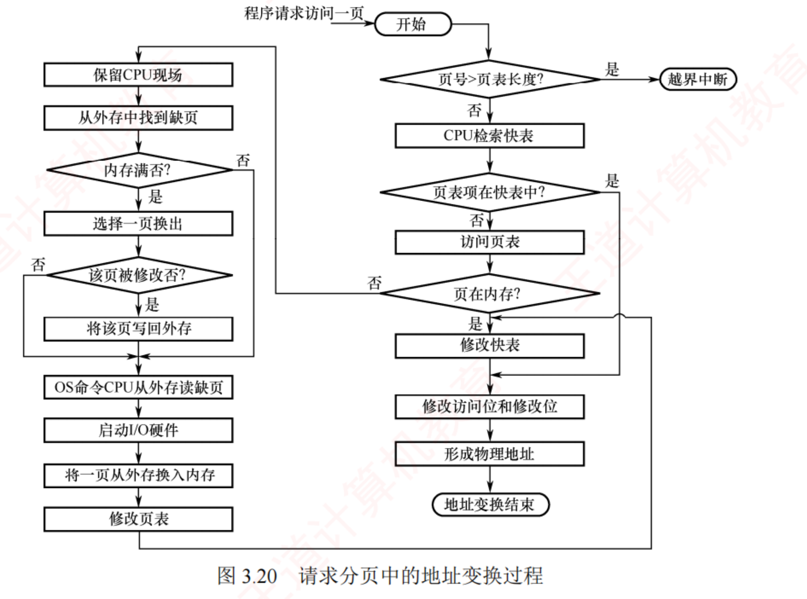
图 3.20 请求分页中的地址变换过程（p.214）——右半边是"正常翻译"，左半边是"缺页善后"，两半之间只有一条通道 ：右边判到「页在内存？」为否 时才走到左边。左半边从上往下读一遍就是缺页处理的完整流程 ：保留现场 → 找到缺页 → 内存满否 → 选一页换出 → 该页被修改否 （否则不用写回）→ 写回外存 → 读入缺页 → 修改页表 → 回到右边重新翻译 。注意最后那根箭头绕回了起点——这就是"重新执行该指令"的图证。
必记 · 四步（比基本分页多了第 3 步）
步 动作 易漏的细节 ① 先检索快表 ；命中 ⟹ 取物理块号置访问位 A = 1；对于写操作还需置修改位 M = 1 ② 快表未命中 ⟹ 访问页表。若 P = 1（已在内存） 取块号，并把该页表项装入快表 若快表已满则按置换算法淘汰一项 （快表也有自己的置换）③ 若 P = 0（不在内存） ⟹ 触发缺页中断 ，OS 从外存调入（必要时先换出一页），更新页表和快表 随后重新执行地址变换 ④ 物理块号 + 页内地址拼接 ⟹ 物理地址 拼接，不是相加（见 3.1.3 那个陷阱）
我的补讲 · 谁置 A 和 M？这个"谁"字每年都在选项里
书上写"置访问位 A=1、对写操作置 M=1"却没说是谁置的 → 潜台词是这属于常识分工 → 但选项会拿它做文章：
动作 由谁做 为什么 置 A = 1、M = 1 硬件（MMU）自动 每次访存都要做，软件做不起 定期清零 A OS（置换算法） CLOCK 算法扫描时清零 判断 P=0 并触发中断 硬件发现，OS 处理 发现是硬件的事，善后是 OS 的事 决定淘汰哪一页 OS 置换算法是软件策略
⟹ 一条总纲：「每次访存都要做的事情归硬件，偶尔做一次的策略归 OS」 。
这条总纲和 OS ch1 1.3 的"硬件 vs OS 分工"是同一把尺子，也解释了为什么 Cache 未命中不用 OS 管、而缺页必须 OS 管
（因为缺页要启动磁盘 I/O，那是 OS 才有权做的事 ）。 我的补讲 · 缺页率的上下限：一道很爱考、但只有两句话的题（综 03）
设访问串长 p 、其中不同页号有 n 个、分配 m 个页框 → 页故障数的范围是：
下限 = n 上限 = p
为什么 举例（m=3, p=12, n=4） 下限 n n 个不同页面首次进入主存时必然各缺一次 ，任何算法都省不掉1 1 1 2 2 3 3 3 4 4 4 4 ⟹ 4 次 上限 p 最差情况是每次访问该页都不在主存 1 2 3 4 1 2 3 4 1 2 3 4 ⟹ 12 次
⭐ 对 FIFO、LRU 两种算法，上限均为 p、下限均为 n。
⟹ 由此还能推出一条考场提速技巧（书上综 08 的"注意"框）：若分配的物理块数 m ≥ 不同页面数 n，则缺页次数恰好 = n ，
根本不用画表。拿到置换题先数一数有几个不同页号，再看给了几个页框 ——有时一秒就能出答案。 📄 p.215
3.2.3 页框分配
必记 · 本小节要回答三个问题
① 最小页框数 的确定 ② 分配的页框是固定的还是可变的 ③ 是平均分配还是按进程大小比例分配 。
知识串联 · "驻留集 / 工作集 / 页框" 三个词与 ch2 的"资源分配"是一套语言
回看 OS ch2 2.4 死锁那一节的语言是
「进程 i 最多需要 Max、已分配 Allocation、还需要 Need」 ；
本节的语言是
「最小页框数（≈ Need 的下界）、驻留集（≈ Allocation）、工作集（≈ 近期真实需求）」 。
ch2 死锁 本节 共同的问法 Max / Need 最小页框数、工作集 至少要给多少才不出事 Allocation 驻留集 现在给了多少 Available 空闲页框链表 还剩多少可分 安全序列 不抖动 这样分下去会不会出问题
⟹ 抖动之于内存，就像死锁之于资源：都是"分少了导致系统整体卡住" 。
区别在于死锁是彻底停住 ，抖动是忙着做无用功 。这个对照能帮你记住两者的处方为什么都是"减少并发/多给资源"。 1．最小页框数与驻留集
考点追踪 · 最小物理块数的确定原则（2025）
必记 · 最小页框数的三个算例（2025 年考，必背）
定义 ：
能保证进程正常运行所需的最少页框数量 ；少于此值进程将无法执行。
⭐
与计算机的硬件结构有关，具体取决于指令的格式、功能和寻址方式 。
机器 最少页框 怎么数出来的 单地址指令 + 直接寻址 2 个 一个存指令、一个存数据 支持间接寻址 3 个 指令、指针 、数据 一条指令及其两个操作数各自跨两页 6 个 最坏情况涉及 6 个不同页面
知识串联 · 「最少几个页框」本质是在数组原的寻址级数
跨科枢纽 组原 ch4 4.2 寻址方式 （本章失分密度第一的那一节）讲过：直接寻址访存 1 次取操作数，
一次间址访存 2 次 （先取地址再取数），二次间址访存 3 次 。⟹ 最小页框数 = 1（放指令） + 该寻址方式访问操作数所需的存储单元个数。
所以"支持二次间接寻址"的机器最少需要 4 个 页框——这个数书上没给，是从组原那边推出来的，2025 年考的正是这个推法 。⚠️ 若指令或操作数跨页 ，每跨一次就再加 1。这就是 6 个页框那个算例的来历。
必记 · 驻留集大小的两难
驻留集 = OS 为进程分配的页框集合。 选择需在系统并发度与缺页开销之间权衡 ：驻留集过小 ⟹ 内存可容纳的进程数增多、并发度提高；但每进程页框太少 ⟹ 缺页率显著升高，CPU 耗费大量时间处理缺页中断 （⟹ 抖动）；驻留集过大 ⟹ 超过某一阈值后继续增加页框对缺页率的改善趋于平缓 ，不仅浪费内存，还会因可用页框总量减少而降低系统整体并发能力 。
知识串联 · 「驻留集」这个词把本节和 ch2 的调度接上了
回看 OS ch2 ch2 2.2 讲三级调度时说过
中级调度（内存调度）＝ 把暂时不能运行的进程调至外存（挂起态） ——
那是整个进程 级别的换出；本章的页面置换是页 级别的换出 。两者共存：
层级 换出的单位 触发条件 在哪一章 中级调度（对换） 整个进程 内存吃紧、进程长期阻塞 OS ch2 2.2 页面置换 一页 缺页且无空闲页框 本节
⟹ 抖动（3.2.5）的处方之一"降低并发度"，落地手段正是中级调度把某些进程整个换出去 ——
ch2 的机制在这里被当成工具使用 。这也是"可变分配全局置换会挤占别人页框"这句话的严重性所在：
它可能把别的进程逼到抖动，最后只能靠中级调度救场。 我的补讲 · 页框分配这一节的三个数字题，问法固定
本小节看着全是概念，但它实际贡献了三类可计算的问法 → 提前认脸：
问法 怎么算 出处 最少要几个页框 = 1（指令） + 该寻址方式访问操作数所需的存储单元数 + 跨页数 2025 年真题 按比例分配各得几个页框 = 总页框数 × (本进程页数 ÷ 所有进程页数之和)，结果取整后余数再分配 教材"按比例分配算法" 缺页率上下限 下限 = 不同页号数 n；上限 = 访问串长 p 综 03
⟹ 三条都只需一行算式。本小节最贵的其实是那三个策略的名字 （2015 年考的就是名字），
书上专门为此写过一段警告——别在这里省力气。 2．内存分配策略（三种可行组合）
考点追踪 · 页面分配与置换策略的名称（2015）
必记 · 为什么是三种而不是四种
分配：
固定 / 可变 ；置换：
全局 / 局部 ⟹ 理论上四种组合。
⚠️
注意框（原文）：固定分配要求进程页框数保持不变，而全局置换会导致页框数发生变化，二者互斥 ，因此实际可行的策略仅有三种。
策略 含义 难点 / 特点 固定分配 每进程分配固定数量页框，运行期间不变；缺页时只能从该进程自身已分配的页框中选一页换出 难点在于难以事先确定合适的页框数 ：太少则频繁缺页，太多则浪费内存并减少并发进程数可变分配 初始分配一定数量，运行期间动态调整 ；缺页时先从空闲页框队列取一个 ；若空闲耗尽，则允许从内存中所有页框里选一个换出，不论其归属哪个进程 最灵活；但某些活跃进程的驻留集可能持续膨胀，不断挤占其他进程的页框，削弱多道程序并发能力 可变分配 初始分配一定数量；缺页时仅允许从其自身已分配的页框中换出 ；此外系统还根据进程的缺页率动态调整其驻留集大小 ——缺页率过高则增加页框，过低则适当回收 在有效抑制频繁调页的同时兼顾并发能力 ；实现复杂、开销较大，但相比频繁换页所耗的磁盘 I/O，这一开销值得
陷阱 · 王道专门为这三个名字写了一段警告，原话照抄
「页面分配策略曾在 2015 年统考选择题中出现过，考查的正是这三种策略的名称。不少考生因误判其为非重点内容，复习时一带而过，最终在考试中失分。 」 ⟹ 这三个名字要能一字不差地默出来，并且能立刻说出为什么没有 "固定分配全局置换"。
我的补讲 · 三种策略的区别，用一句话的两个问题就能定位
三个名字长得像 → 潜台词是判据必须机械化 → 两个问题按顺序问，一问一个准：
问题 答"是" 答"否" Q1：进程的页框数会不会变 可变分配 固定分配 （⟹ 必然是局部置换，到此结束）Q2：换出的页可不可以是别人的 全局置换 （⟹ 必然是可变分配）局部置换
⟹ "固定 + 全局"之所以不存在：抢了别人的页框，自己的页框数就变多了，与"固定"直接矛盾。
把这个矛盾说清楚，比背三个名字牢得多。
⚠️ 还要能答出：只有"可变分配局部置换"会根据缺页率动态增减驻留集 ——这是它和另外两个最实质的差别，也是 3.2.5 工作集概念的落地点。 我的补讲 · 三种分配策略各自的"典型故障"，选择题最爱问这个
书上把三种策略的特点写成了长句 → 潜台词是每种都有一个"会出什么毛病" → 压成一句话：
策略 典型故障 补救 固定分配局部置换 分少了就一直抖，分多了就一直浪费 （页框数事先定死，无法调整）只能靠事先估准 可变分配全局置换 活跃进程的驻留集无限膨胀，挤死其他进程 需要额外的调控机制 可变分配局部置换 实现复杂、开销大 用缺页率反馈动态增减 （书上说这个开销"值得"）
⟹ 记法：固定＝僵、全局＝乱、可变局部＝贵但对。 2015 年只考了名字，但这三个故障是理解它们的钩子。 3．页框调入算法 · 4．调入时机 · 5．从何处调入
背景 · 固定分配时怎么在进程间分（三种，知道名字即可）
① 平均分配 ：所有可分配页框平均分给各进程。② 按比例分配 ：根据进程的逻辑地址空间大小 按比例分。
③ 优先权分配 ：为重要或紧迫的进程分配更多页框；通常做法是一部分按比例分配，另一部分依据优先权动态分配 。这三个只考名字，从没考过计算。
必记 · 两种调页策略（一句话分界）
策略 做法 优缺点 预调页策略 根据局部性原理，一次调入若干相邻页面 比逐页调入高效；但预测成功率仅约 50% ⟹ 主要用于进程首次调入时，由程序员显式指定应优先加载的页面 请求调页策略 运行中访问的页面不在内存时触发缺页中断 ，由系统调入 调入的页面必然会被访问 ，实现简单，当前的虚拟存储器大多采用此策略 ；缺点是每次仅调入一页，磁盘 I/O 开销较大
⭐
一句话分界：预调页是在进程运行前 完成页面加载，请求调页则是在运行期间 动态调入。 必记 · 从何处调入：文件区 vs 对换区（三种情况）
外存分两部分：
文件区 （存放文件，采用
离散分配 ）与
对换区/交换区 （存放换出页面，采用
连续分配 ）
⟹ ⭐
对换区的磁盘 I/O 速度通常快于文件区。
情况 做法 ① 对换区空间充足 全部从对换区调入以提高速度。为此需在进程运行前，将与该进程相关的文件从文件区复制到对换区 ② 对换区空间不足 不会被修改的页面直接从文件区调入 （换出时内容未变，无须写回 ）；可能被修改的页面换出时必须保存到对换区 ，后续也从对换区读取③ UNIX 方式 相关文件始终保留在文件区 。未运行过的页面从文件区调入；曾运行过但已被换出的页面存放在对换区 ，后续从对换区读取。若多个进程共享同一页面，只要该页已在内存，其他进程便可直接复用，无须重复调入
我的补讲 · 为什么对换区更快？答案在 OS ch4 和 ch5
书上只给了结论"对换区更快" → 潜台词是它的理由属于另外两章 → 但选择题会把理由当选项 → 所以要能说清：
文件区 对换区 分配方式 离散分配 （一个文件的块散落在盘上）连续分配 后果 读一页可能要多次寻道 连续块 ⟹ 寻道少、可顺序读大块 取舍 省空间（利用率优先） 抢速度（时间优先）
⟹ 这正是 OS ch4「文件的物理结构」与 ch5「磁盘调度」的核心矛盾：连续分配快但难扩展，离散分配灵活但慢 。
本章在这里借用了这个结论，两章读到时可以互相印证。
⚠️ 情况 ② 里那句"不会被修改的页面无须写回"是修改位 M 的第一次实战应用，3.2.4 改进型 CLOCK 会把它推到极致。 背景 · "如何调入页面"（就是把上面几条串一遍，不必单独记）
存在位为 0 ⟹ CPU 触发缺页中断 → 缺页中断处理程序 → ① 由页表项取该页的外存地址 → ② 判断内存是否已满：
未满 ⟹ 分配空闲页框、发起磁盘 I/O、填写物理块号并置存在位为 1 ；
已满 ⟹ 按置换算法选一页换出（M=0 直接丢弃，M=1 先写回对换区 ）→ ③ 调入该页、更新页表、置存在位为 1 。整个页面调入过程对用户完全透明，由操作系统自动完成。
📄 p.217
3.2.4 页面置换算法 ← 全章计算主场
考点追踪 · 各种页面置换算法的特点（2014）
必记 · 目标只有一个
⭐ 一个好的页面置换算法应致力于降低缺页率 （页面换入换出均涉及磁盘 I/O，开销较大）。教材主例（贯穿 OPT/FIFO/LRU 三小节，分配 3 个物理块） ：7, 0, 1, 2, 0, 3, 0, 4, 2, 3, 0, 3, 2, 1, 2, 0, 1, 7, 0, 1（共 20 次访问，7 个不同页面 ）
我的补讲 · 动手前先立三条规矩，否则画到一半必错
置换题的失分几乎全在"画错表"而不是"算错数" → 所以先把三条规矩钉死：
规矩 内容 不守会怎样 ① 先装满再置换 前 m 次缺页是装入空页框 ，不算置换 缺页次数与置换次数混为一谈（2019 选 53 的原型 ） ② 命中不改结构 命中时 FIFO 队列不动 ；LRU 必须把该页移到最新 FIFO 与 LRU 结果串味 ③ 逐列写，别跳步 每访问一页写一列，命中就照抄上一列 中间错一列，后面全错
⚠️ 规矩 ① 是全章四条分界线的第一条：「缺页次数」≠「页置换次数」，两者相差正好 m（页框数） ——
前提是驻留集被填满过。主例 m=3：OPT 9 次缺页 / 6 次置换 ；FIFO 15 / 12 ；LRU 12 / 9 。三组都差 3。 知识串联 · 四种置换算法在组原、数构里都有对应物
跨科枢纽 不必把它们当成 OS 独有的东西：
本节 组原 ch3 Cache 替换 其他 OPT 理论最优（同样不可实现） 算法分析里的"离线最优" FIFO FIFO 替换 （实现最简单）数构 ch3 队列 LRU LRU 替换 （硬件用计数器/堆栈近似）数构 ch7 哈希 + 双向链表 （LRU Cache 是经典题） CLOCK 近似 LRU 的低成本实现 数构 ch3 循环队列 （指针取模前进）
⚠️ 一个差别要记牢：Cache 的替换必须由硬件在纳秒级完成，所以只能用极简近似；页面置换由 OS 软件完成，允许扫描多轮 。
这解释了为什么 CLOCK 这种"带指针扫描"的算法只出现在 OS 里。 我的补讲 · 置换题的卷面该怎么写（综合题要写过程，光给数字不给分）
3.2 有 8 道综合真题，其中置换类的卷面有固定格式 → 三层写法（与练习系统里 22 道综合题一致）：
层 写什么 ⛳ 采分点在哪 ① 表 画出 m 行 × p 列的置换表，每列标明命中还是缺页 表本身就是过程分 ——只写答案不画表要扣分② 数 缺页次数、置换次数、缺页率 分别写清缺页率要写成 缺页次数/访问次数 的形式 ③ 结论句 回扣题干那句话（如"故 FIFO 出现了 Belady 异常"） 末行必须回答题目问的那个问题
⚠️ 常见扣分点：① 没标哪几列是缺页（阅卷看不出你怎么数的）；② 把缺页次数当成置换次数；
③ 缺页率忘了写分母 。这三条在练习系统的 .dock 扣分点里各标了一次。 1．最佳（OPT）算法
必记 · OPT 的定义与地位
淘汰以后永不使用或在最长时间内不再被访问的页面 ⟹ 理论上最低的缺页率 。OS 无法预知未来的页面访问序列 ⟹ 实际系统中无法实现 ；但具有重要理论意义，常用于评价其他算法 。主例结果：共 9 次缺页中断，其中 6 次触发页面置换。 ✅ Python 复算吻合。
必记 · OPT 置换过程（图 3.21 重排为表，m = 3）
访问 7 0 1 2 0 3 0 4 2 3 0 3 2 1 2 0 1 7 0 1 帧1 7 7 7 2 2 2 2 2 2 2 2 2 2 2 2 2 2 7 7 7 帧2 — 0 0 0 0 0 0 4 4 4 0 0 0 0 0 0 0 0 0 0 帧3 — — 1 1 1 3 3 3 3 3 3 3 3 1 1 1 1 1 1 1
红＝缺页 绿＝命中 共 9 红（前 3 红是装入，后 6 红才是置换）
关键判断 ：访问页面 2 时缺页，
页面 7 的下一次访问在第 18 次，远晚于其他页面 ⟹ 淘汰 7 ；
访问 3 时缺页，
页面 1 的下次访问（第 14 次）最晚 ⟹ 淘汰 1 。
我的补讲 · OPT 的手算技巧：只看三个数，不看整串
书上讲"淘汰将来最久不用的" → 潜台词是每次只需比较驻留集里那几页的"下一次出现位置" ，不必通读全串 → 手法：
步 动作 例（第 4 次访问 2，驻留集 {7,0,1}） ① 从当前位置往右 找每一页的第一次 出现 7 在第 18 位、0 在第 5 位、1 在第 14 位 ② 取最大 的那个（最晚出现） 18（页 7） ③ 永不再出现 ⟹ 直接判为最大 ，优先淘汰——若有两个都不再出现，任选其一即可
⟹ 每次只做 m 次"向右查找"，m=3 时就是三眼的事。做对 OPT 的诀窍是从右往左预标一遍每页的下次位置 ，比逐次向右扫快得多。 我的补讲 · FIFO 的队列到底怎么维护？三个动作，错一个全盘皆错
书上只说"按调入时间组成队列，换出时移除队首" → 潜台词是命中时队列不动 这件事被省略了 → 三个动作定死：
事件 队列怎么变 对比 LRU 装入新页 入队尾 相同 命中 队列完全不动 LRU 要把该页移到队尾 置换 队首出队，新页入队尾 相同
⟹ FIFO 与 LRU 的唯一 区别就是中间这一行。把"命中时动不动"这一条记住，两个算法就永远不会串味。
⚠️ 由此还能秒答一道经典题（综 10）：FIFO 与 LRU 何时结果完全相同？
——当访问串中"不连续的页面号均不相同"时 （即没有任何页在进入后被再次访问；连续重复访问同一页不影响，因为它不改变相对次序）。
反例：驻留集 4、访问串 1,2,3,4,1,2,5 ⟹ 调入 5 时 FIFO 选 1，LRU 选 3 （1 号虽最先进入，但进入后又被访问过一次）。 我的补讲 · FIFO 为什么"实现简单"？因为它不需要任何硬件支持
书上说 FIFO"实现简单"却没说简单在哪 → 潜台词是它是唯一不依赖访问位/时间戳的算法 → 对照一下开销：
算法 需要什么额外信息 硬件成本 FIFO 只需一个队列（软件维护） 零 LRU 每页的"上次访问时间" ，且每次访存都要更新高 （要硬件计数器/堆栈）CLOCK 每页一个访问位 A 低 （1 位 × 页框数）改进型 CLOCK A + M 两位 低
⟹ 这张表解释了现实系统的选择：没人用纯 LRU（太贵），也没人用纯 FIFO（太差），主流是 CLOCK 系列 ——
"以较小开销接近 LRU 性能"这句话的定量版就是这张表。 2．先进先出（FIFO）算法
考点追踪 · FIFO 算法的应用分析（2010）
必记 · FIFO 的定义与主例结果
淘汰最早进入内存的页面 ；内存中的页面按调入时间组成一个队列 ，换出时直接移除队首。FIFO 未利用局部性原理，与进程实际运行规律不符，最早装入的页面仍可能被频繁访问 ⟹ 性能通常较差。 主例结果：共 15 次缺页中断，其中 12 次触发页面置换 （三种算法中最差）。✅ Python 复算吻合。
必记 · FIFO 置换过程（图 3.22 重排，m = 3）
访问 7 0 1 2 0 3 0 4 2 3 0 3 2 1 2 0 1 7 0 1 帧1 7 7 7 2 2 2 2 4 4 4 0 0 0 0 0 0 0 7 7 7 帧2 — 0 0 0 0 3 3 3 2 2 2 2 2 1 1 1 1 1 0 0 帧3 — — 1 1 1 1 0 0 0 3 3 3 3 3 2 2 2 2 2 1
共 15 红。对照 OPT 的 9 红——同一串访问，算法一换，缺页数差了 2/3 倍。 必记 · Belady 异常（本节最反直觉的结论）
⭐ Belady 异常：当进程分配的物理块数增加 时，缺页次数反而可能上升 。
根本原因：FIFO 仅依据调入时间决策，忽略了页面的实际使用情况。
书上算例 ：
3, 2, 1, 0, 3, 2, 4, 3, 2, 1, 0, 4
页框数 FIFO 缺页 结论 3 个 9 次 块数增加，缺页反而多了一次 ⟹ Belady 异常 （✅ Python 复算吻合）4 个 10 次
⭐
只有 FIFO 算法可能出现 Belady 异常，OPT 与 LRU 永远不会出现。 陷阱 · 全章分界线之二：「FIFO 可能有 Belady」≠「FIFO 下增加页框会怎样」
这是两道长得极像、答案完全不同的题：
问法 答案 依据 哪种算法可能 出现 Belady 异常 FIFO （选 33 / 2014 选 48）只有它不看使用情况 FIFO 下页帧增加，缺页数会怎样 可能增加也可能减少 （选 17）反例 1,2,3,1,2,3：页帧 2 时 6 次缺页，页帧 3 时只有 3 次 （✅ 复算吻合）
⟹ "可能出现异常"只是说不保证单调下降 ，不是说"一定上升"。选项写"FIFO 下增加页框缺页数一定增加"，错。 我的补讲 · 一张表把 Belady 钉死（综 04 的三算法 × 两块数）
3.2 综 04 用同一个访问串 4,3,2,1,4,3,5,4,3,2,1,5 跑了三种算法 × 两种块数 →
这是全章最值得整表背下来的一张，只有 FIFO 那一行是"反的" ：
算法 m = 3 m = 4 趋势 OPT 缺页率 7/12 6/12 ✅ 下降 FIFO 9/12 10/12 ❌ 反而上升 ⟹ Belady LRU 10/12 8/12 ✅ 下降
✅ 六个数字全部 Python 复算吻合。
⚠️ 顺带注意第二列：m=3 时 LRU（10）比 FIFO（9）还差 ——"LRU 一定比 FIFO 好"是错的，
只能说统计意义上更好 。这一格常被用来出"下列说法错误的是"。 知识串联 · 为什么 OPT / LRU 永远没有 Belady？（栈式算法）
深一层 教材没展开，但结论值得知道：OPT 与 LRU 属于「堆栈类算法」——
m 个页框时的驻留集，永远是 m+1 个页框时驻留集的子集 。子集只会更小不会更差，所以增加页框缺页数单调不增 。
FIFO 不满足这个包含关系 （队列顺序会随容量整体改变），才可能出现异常。连到数构 这个"包含关系保证单调性"的论证方式，和数构里用归纳法证明贪心算法最优 是同一类思路。⟹ 考场上不必证明，只需记住：「栈式算法（OPT/LRU）无 Belady，FIFO 有」 。🐍 我用两个 Belady 串在 LRU 下各跑了一遍，均正常下降，坐实了这条。
我的补讲 · 缺页次数的两个"下界"，考场上可以直接秒杀选项
置换题的选项里常混入一些不可能 的数 → 用两条下界一眼排除：
下界 内容 用法 ① 缺页次数 ≥ 不同页号数 n 每个页面第一次访问必然不在内存 （3.2 选 16 考的就是这一句） 选项里小于 n 的直接划掉 ② 若 m ≥ n，则缺页次数恰好 = n 装满就再也不用换了 看到"页框数 ≥ 不同页面数"，一秒出答案
⟹ 综 08 就是第 ② 条的直接应用：m=4、访问串里只有 4 个不同页面 ⟹ 缺页 4 次，缺页率 4/12 = 33% ，
连表都不用画 （书上专门加了"注意"框提醒这一点）。 我的补讲 · "LRU 是向后看、OPT 是向前看"，这句话能直接答一类概念题
书上写了"过去与未来的走向之间并无必然联系" → 潜台词是LRU 只是一个赌注，不是保证 → 于是能考：
说法 对错 理由 LRU 的缺页数一定 不多于 FIFO ❌ 综 04 里 m=3 时 LRU（10）反而比 FIFO（9）差 LRU 的缺页数一定不少于 OPT ✅ OPT 是理论下界，谁也赢不了它 LRU 能预测未来 ❌ 它只根据过去 下注；书上明说两者无必然联系 增加页框数，LRU 的缺页数一定不增加 ✅ LRU 是堆栈类算法 ，无 Belady
⟹ 四条里有两个"一定"成立、两个不成立。凡是把"统计上更好"说成"一定更好"的，都是错的 ——
这是本节概念题最主要的出题方式。 3．最近最久未使用（LRU）算法
考点追踪 · LRU 算法的应用分析（2009、2015、2019、2025）
必记 · LRU 的定义与实现
淘汰最近最长时间未使用的页面。 基本思想：若某页面在过去一段时间内未被使用，则在近期未来也很可能不会被访问。 实现 ：为每个页面维护一个访问字段，记录其自上次被访问以来所经历的时间，淘汰时选该值最大的页面。 LRU 是"向后看"的（根据页面过去 的使用情况判断）；OPT 是"向前看"的（根据页面未来 的使用情况判断）。页面过去与未来的走向之间并无必然联系。 主例：前 5 次缺页处理的结果与 OPT 相同，但这仅是巧合，并无必然联系。
必记 · LRU 置换过程（图 3.24 重排，m = 3）
访问 7 0 1 2 0 3 0 4 2 3 0 3 2 1 2 0 1 7 0 1 帧1 7 7 7 2 2 2 2 4 4 4 0 0 0 1 1 1 1 1 1 1 帧2 — 0 0 0 0 0 0 0 0 3 3 3 3 3 3 0 0 0 0 0 帧3 — — 1 1 1 3 3 3 2 2 2 2 2 2 2 2 2 7 7 7
🐍
补算（书上没给总数）：主例 m=3 时 LRU 共 12 次缺页 / 9 次置换 ——
正好落在 OPT 的 9 与 FIFO 的 15 之间，这是"LRU 性能接近 OPT"这句话唯一的量化证据 。 我的补讲 · LRU 手算的唯一诀窍：往左数，不往右数
LRU 和 OPT 的手算方向正好相反 → 潜台词是两者可以用同一套动作、只换方向 → 记成一句话：
算法 看哪边 淘汰谁 手法 OPT 往右看（未来） 下次出现最晚 的 向右找每页第一次出现，取最大 LRU 往左看（过去） 上次出现最早 的 从当前位置往左倒着扫，最后被扫到的那个就淘汰它
⟹ "往左倒扫，谁最后出现就淘汰谁"是考场上最快的手法：不用维护任何时间戳 ，扫到 m−1 个不同页面时，剩下的那个就是受害者。
⚠️ 2019 选 53 是这个手法的经典应用：问的是置换次数 （答 5）不是缺页次数（🐍 复算总缺页 9）。先看清问的是哪个数 。 必记 · 四算法性能一句话对比（原文，直接背）
OPT 性能最好但无法实现；FIFO 实现简单但忽略局部性、性能较差；LRU 性能接近 OPT、实际效果良好，但实现通常需要硬件支持、开销较大。
陷阱 · "LRU 开销大"的原因是软件实现 太贵，不是"需要硬件"
3.2 选 23 专门考这个逻辑方向 ：LRU 纯软件实现需为每个驻留页面维护访问历史，并在每次缺页时遍历所有页帧确定替换目标，时间复杂度 O(n) 。选项 A"需要硬件支持"并非开销高的原因，而是为降低该软件开销而引入的手段 ——
正因软件实现开销过高，才需借助硬件辅助。因果不能倒过来。
我的补讲 · 主例三算法的结果排排坐，这三个数字建议背下来
同一串 7,0,1,2,0,3,0,4,2,3,0,3,2,1,2,0,1,7,0,1，m=3：
算法 缺页 置换 相对 OPT OPT 9 6 基准（下界） LRU 12 🐍9 +33% FIFO 15 12 +67%
🐍 LRU 的 12 是我补算的（书上只说"前 5 次与 OPT 相同"，没给总数）——
它正好落在 9 与 15 之间，是"LRU 性能接近 OPT、FIFO 最差"这句话唯一的量化证据 。
⟹ 三个数（9 / 12 / 15）和"都比置换次数多 3"一起记，既能自查画表结果，也能在概念题里当依据。 知识串联 · 「宽恕一次」的思想在 ch2 调度里叫「降级」
回看 OS ch2 2.2 多级反馈队列的规则是
「只有时间片耗尽才降级，因 I/O 主动放弃则留在原队列」 ——
那也是一种"给一次机会"：不是一犯错就打入冷宫。
机制 "宽恕"的形式 什么时候真的被处理 CLOCK 访问位为 1 ⟹ 清零后放过，指针继续走 下一圈再遇到且仍为 0 多级反馈队列 主动让出 CPU ⟹ 不降级 时间片耗尽才降一级 页面缓冲算法 换出的页框先挂空闲链、内容不清 被重新分配出去时才真正作废
⟹ 三处都在解决同一个问题：「一次观测不足以判断它是否还有用，所以再给一轮时间」 。
这是操作系统里非常典型的一种设计模式，见到就能类推。 4．时钟（CLOCK）算法
背景 · CLOCK 这一族的定位（一句话）
LRU 开销大 ⟹ OS 设计者尝试以较小开销接近 LRU 性能 的一类算法，统称 CLOCK 算法的变体。
这句定位不出题，但能帮你记住 CLOCK 的一切设计都是"为了省"。
知识串联 · 四种算法 ↔ 四种数据结构，手算时用哪种最快
连到数构 手算置换表时，脑子里该摆什么结构：
算法 脑内结构 手算动作 OPT ——（要看未来） 往右扫，找下次出现最晚的 FIFO 队列 （数构 ch3）队首出、队尾进，命中不动 LRU 栈 / 双向链表 往左扫，最后被扫到的淘汰 CLOCK 循环队列 + 指针 0 就杀、1 就赦并清零、杀完前进一格
⟹ 四个动作各不相同，但都只需一支笔。把这四句话背下来，比记住四张图管用 ——
考场上给的是访问串，不是图。 （1）简单的 CLOCK 算法
考点追踪 · 类 CLOCK 算法的过程分析（2012）
考点追踪 · CLOCK 算法的应用分析（2010）
必记 · 简单 CLOCK 的三条规则
・每个页面设一个访问位 ；首次装入内存或被访问时置 1 ；循环队列 ，维护一个替换指针 指向当前检查位置；指针所指页面访问位为 0 ⟹ 直接淘汰；为 1 ⟹ 将其置 0，指针顺移至下一页 ，给该页一次"宽恕"机会。CLOCK 算法 ；仅依据"最近是否被使用"这一粗略信息决策 ⟹ 也称 最近未用（NRU）算法 。
必记 · CLOCK 算例（分配 4 个页框，✅ Python 逐步复算吻合）
访问串：
7, 0, 1, 2, 0, 3, 0, 4, 2, 3, 0, 3, 2, 1, 3, 2 共 8 次缺页 = 4 次装入 + 4 次置换
缺页序号 访问的页 指针所在 动作 第 5 次 3 帧 1 所有访问位均为 1 ⟹ 完整扫描一圈把访问位全清零，指针回到帧 1 ⟹ 淘汰帧 1 的页 7 ，装入页 3（访问位置 1） 第 6 次 4 帧 2 帧 2 访问位为 1 ⟹ 置 0 后继续；帧 3 访问位为 0 ⟹ 淘汰帧 3 的页 1 ，装入页 4 第 7 次 1 帧 4 所有帧访问位均为 1 ⟹ 再次完成一轮扫描并清零 ⟹ 淘汰帧 4 的页 2 第 8 次 2 帧 1 帧 1 访问位为 1 ⟹ 置 0 后继续；帧 2 访问位为 0 ⟹ 淘汰帧 2 的页 0 ，装入页 2
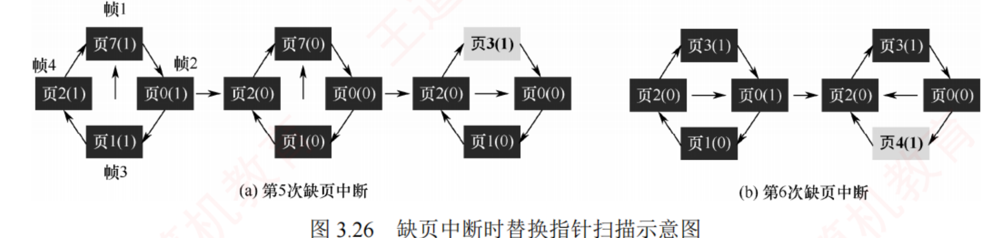
图 3.26 缺页中断时替换指针扫描示意图（p.220）——(a) 第 5 次缺页那三张环图，是本章最该看懂的一组 ：最左环四个页的访问位全是 1 → 中环显示扫了一圈全部被清成 0 （指针也转回了帧 1）→ 右环页 7 被页 3 顶掉 （灰底的"页3(1)"就是新装入的）。"访问位全 1 时要多转一圈"这个动作，光看文字容易漏，看这三张图一次就记住了。 (b) 第 6 次缺页则只走了两格：帧 2 置 0、帧 3 命中 0 值直接被淘汰。
我的补讲 · CLOCK 手算的两个易错点（4 次淘汰位置我逐一复算过）
书上的叙述是连续文字，很容易漏动作 → 我把它拆成两条硬规矩：
易错点 正确做法 错法会导致 ① 全 1 时怎么办 转一整圈把所有访问位清零，指针回到出发点，然后淘汰出发点那一页 误以为"全 1 就淘汰指针当前页"——结果没清零 ，下一次缺页判断全错 ② 淘汰后指针停哪 指向被淘汰页的下一个 页框 指针停在原地 ⟹ 下次缺页会重复淘汰刚装入的新页
⟹ 一句口诀：「0 就杀，1 就赦（并清零），杀完往前走一格。」
⚠️ 装入阶段（页框还没满）也要置访问位为 1，别忘了——第 5 次缺页时"全是 1"正是这么来的。 知识串联 · CLOCK 的循环队列 = 数构的循环队列，指针也一样取模
连到数构 ch3 CLOCK 的替换指针就是循环队列的队头指针 ，前进方式是 ptr = (ptr + 1) % m；
"扫一圈回到原点" 对应循环队列的队满判定 。⟹ 手算时可以直接画一个 m 格的圆环、标上页号和访问位，指针用一支笔尖代替——
这正是图 3.26 的画法 ，比在表格里数格子快得多，也不容易漏掉"清零"这个动作。 连到 3.2.6 而"给一次宽恕机会"这个思想，在页面缓冲算法 里以另一种形式再现：
换出的页框先挂到空闲链表尾部而不是立刻作废，若被重新访问还能捞回来 ——都是"缓期执行"。
我的补讲 · 改进型 CLOCK 最多扫几圈？这个数能直接堵住一类选项
书上写了三步、但没给"最多几轮"的结论 → 自己推一次：
轮 找什么 最坏情况 第一轮 (0,0) 扫一圈没找到 第二轮 (0,1)，顺手把 A 全清零 扫一圈没找到 ⟹ 但此时所有 A 已被清成 0 第三轮（＝重做第一轮） (0,0) 若有干净页，此轮必中 第四轮（＝重做第二轮） (0,1) 必中 （所有页都是脏的时候）
⟹ 最多扫 4 轮，且第 3、4 轮必有结果 ——因为第二轮已经把所有访问位清零了，不可能再出现"全是 1"。
这就是书上"此时必能找到可淘汰页面"那句话的依据 ，也是"算法本身运行开销增加"的量化说法。 （2）改进型 CLOCK 算法
考点追踪 · 改进 CLOCK 算法的思想（2018）
考点追踪 · 改进 CLOCK 算法的应用分析（2016、2021）
必记 · 为什么要改进 + 四类页面（必背）
动机 ：
换出已被修改的页面需写回磁盘 ⟹ 修改过的页面置换代价更高 。故在访问位 A 基础上引入
修改位 M ，
综合考虑页面的使用情况与置换代价，优先考虑既未被访问过又未被修改的页面 。
类 (A, M) 含义 淘汰优先级 1 类 (0, 0) 最近未被访问，且未被修改 最佳淘汰页 2 类 (0, 1) 最近未被访问，但已被修改 次佳淘汰页 3 类 (1, 0) 最近已被访问，但未被修改 可能再次被访问 4 类 (1, 1) 最近已被访问，且已被修改 可能再次被访问
内存中的每一页必属于这四类之一。 必记 · 三步扫描（每一步"改不改访问位"是考点）
轮 找什么 这一轮改不改 A 第一轮 从当前指针位置起找 A=0 且 M=0 的 1 类页，第一个找到的即淘汰 不修改任何访问位 A 第二轮 （第一轮失败时）找 A=0 且 M=1 的 2 类页，第一个找到的即淘汰 将所有经过的页面的访问位 A 置为 0 第三轮 （前两步均失败，说明所有页 A=1）指针复位至起始位置，所有帧访问位清零，随后重复第一轮 ；若仍无 1 类页，则执行第二轮 此时必能找到可淘汰页面
⭐
优点：优先淘汰未修改的页面，从而降低磁盘 I/O 开销；代价：可能需多轮扫描，算法本身的运行开销相应增加。 我的补讲 · 第一轮"不清零"是全章最容易漏的一个动词
书上把"此轮扫描不修改任何访问位 A"单独写成一句 → 潜台词是这与简单 CLOCK 正相反 → 所以能考"第一轮扫描后各页的 A 值"：
简单 CLOCK 改进型 CLOCK 第一轮 改进型 第二轮 看什么 只看 A 看 (A,M) 要求 (0,0) 要求 (0,1) 路过时 A 怎么变 1 → 0 不动 1 → 0
⟹ 记法：第一轮只"看"不"动"（因为还想留着 A 值给第二轮判断），第二轮才开始"动"。
⚠️ 2016 与 2021 两年考的都是"应用分析"（给一张页帧状态表问淘汰谁），漏掉这个动词会在第二轮判断时全错。 我的补讲 · 四算法排排坐：同一张表，四个不同的答案（综 11 原型）
3.2 综 11 给了一张页帧状态表，问四种算法各淘汰哪一页 → 四个算法给出三个不同答案 ，是最好的对照素材：
算法 依据的字段 选谁 FIFO 装入时间 最小第 2 页（装入时间 120） LRU 上次引用时间 最小第 1 页（上次引用 260） 简单 CLOCK 从指针位置起第一个 A=0 第 0 页 改进型 CLOCK 第一个 (A,M)=(0,0) 第 0 页
⟹ 做这类题的动作固定为三步：① 先在表上标出每页的 (A, M) ② 记清指针从哪开始 ③ 按算法读对应的那一列 。
⚠️ 综 09 那道题（2016 原型）里，LRU 选中的那一页恰好 同时是最先进入的、也是 (0,0) 的——
三种算法碰巧同解。碰巧同解不代表算法等价 ，仍要逐个算，别看到一个就填四个空。 我的补讲 · 改进型 CLOCK 的四类页，其实是一张 2×2 表（画出来就不会背错顺序）
书上按 1/2/3/4 类顺序列出 → 潜台词是这个顺序就是淘汰优先级 → 但用二维表看更牢：
M = 0（干净，扔了不用写盘） M = 1（脏，扔了要写盘） A = 0（最近没访问） 1 类：最佳淘汰页 ⭐2 类：次佳 A = 1（最近访问过） 3 类 4 类：最不该动
⟹ 表读出来就是优先级：先看 A（要不要留），A 相同再看 M（扔它贵不贵） 。
A 的权重高于 M ——这一点很关键：2 类（0,1）优先于 3 类（1,0）被淘汰，哪怕 2 类是脏页 。
⚠️ 直觉容易反过来（"脏页别动"），但算法的立场是："最近没被访问"比"干净"更能说明它不会再用 。
凡是选项把 2 类和 3 类的优先级对调，就是错的。 必记 · 书上给出的统一原则（很适合做卡片正面）
页面置换算法普遍遵循一个原则——尽可能保留近期访问过的页面，优先淘汰未访问过的页面 。
简单 CLOCK 仅依据访问位判断页面是否"被访问过"；改进型 CLOCK 在此基础上进一步细化：
对"未访问过"的页面，优先换出其中未修改 者；即使所有页面均"被访问过"，仍优先选择未修改者换出，以最小化磁盘写回成本。
知识串联 · 置换算法 ↔ 进程调度 ↔ 磁盘调度，是同一件事的三次出场
跨章枢纽 书上在 3.2.10 小结里明说：
它们都属于资源调度机制，核心思想是依据某种准则，决定将有限资源分配给哪个请求者。
场景 抢的资源 典型算法 依据 OS ch2 进程调度 CPU FCFS / SJF / 优先级 / 时间片轮转 到达时间、服务时间、优先数 本节 页面置换 页框 OPT / FIFO / LRU / CLOCK 使用历史 （是否访问过、是否修改）OS ch5 磁盘调度 磁头 FCFS / SSTF / SCAN / C-SCAN 磁道距离与方向
⚠️ 注意三处都有一个叫 FCFS/FIFO 的算法，且都是"最简单、最公平、性能最差"的那一个；
而 SSTF 与 LRU 也同构 （都取"距离最近/最近使用"，都可能饿死远处的请求）。以"调度"为线索串起来，三章可以互相印证。
连到组原 Cache 的替换算法（随机/FIFO/LRU/LFU）用的是同一批名字 ，
区别只在
Cache 由硬件实现（所以只能用很简单的近似 LRU），页面置换由 OS 软件实现（所以能用 CLOCK 这种带扫描的） 。
这个"谁来实现"的差别，正好又回到 3.2.2 那条"每次访存的事归硬件"的总纲。 我的补讲 · 置换算法这一节的复习收口：五个必须能默画的东西
3.2.4 是全章最长的一节，但真正要"会"的只有五样，其余都是围绕它们的解释：
# 要能默出来的东西 检验方式 1 主例三算法的置换表 （m=3，20 次访问）缺页数分别是 9 / 12 / 15 2 Belady 算例 3,2,1,0,3,2,4,3,2,1,0,4m=3 → 9；m=4 → 10 3 CLOCK 的四次淘汰 （m=4，16 次访问）帧1页7 / 帧3页1 / 帧4页2 / 帧2页0 4 改进型 CLOCK 的四类页与三轮扫描 (0,0)→(0,1)→清零重来；第一轮不改 A 5 综 11 那张"四算法各淘汰谁"的表 FIFO 看装入时间、LRU 看上次引用、CLOCK 看指针与 A
⟹ 五样东西，纸笔各画一遍不超过 20 分钟。画不出来就别往下读 3.2.5 ——
后面的抖动、工作集、性能因素全都以"你已经会算缺页率"为前提。 📄 p.221
*3.2.5 抖动和工作集
考点追踪 · 抖动的处理措施（2011）
必记 · 抖动的定义、原因与后果
定义 ：刚刚换出的页面马上又要换入内存，而刚刚换入的页面又立即被换出。这种频繁的页面调度行为称为抖动（也称颠簸）。 根本原因：分配给进程的物理块数量过少，无法满足其正常运行的基本需求 ⟹ 频繁触发缺页中断 ⟹
磁盘 I/O 频率急剧上升，进程的大部分时间都消耗在页面的换入与换出上 ⟹ CPU 利用率急剧下降，甚至趋近于零 。驻留集过少 ，于是提出了工作集 的概念用以动态指导页框分配。
我的补讲 · 诊断题只看两个利用率，三种组合三种答案（综 05 原型）
书上讲了抖动的机理 → 潜台词是考题会给你"CPU 利用率 + 磁盘利用率"两个数让你诊断 → 三种组合背下来就够：
CPU 利用率 磁盘利用率 诊断 处方 13%（极低） 97%（极高） 发生抖动 降低并发度 ——此时再增加进程反而会恶化性能 87%（高） 3%（低） 系统正常 不需要采取任何措施 13%（低） 3%（低） CPU 没被充分利用 增加并发进程数
⟹ 判据一句话：「磁盘忙 + CPU 闲 = 抖动；两个都闲 = 进程不够；CPU 忙 = 一切正常」 。
⚠️ 最容易答反的是第一行：看到"CPU 利用率低"就想加进程，但抖动时加进程是火上浇油 。 陷阱 · 抖动能不能被"完全避免"？不能
3.2 选 25：抖动是频繁的页面调度行为，所有的页面调度策略都不可能完全避免抖动 。
置换算法只能降低缺页率，无法改变"驻留集小于工作集"这个根源 ——根源要靠调整驻留集大小 / 降低并发度 解决。⟹ 凡是选项写"采用 LRU 可以避免抖动""改进 CLOCK 能消除抖动"，一律错。
我的补讲 · 抖动的三种处方，按"改什么"分层（2011 年考"处理措施"）
书上只把原因归到"驻留集过少" → 潜台词是处方必然分两个方向：要么给它更多页框，要么减少要页框的人 → 三条：
处方 做什么 属于哪一节的机制 ① 给它更多页框 按工作集 动态调整驻留集 3.2.3 可变分配局部置换 + 3.2.5 工作集 ② 减少并发进程数 挂起（换出）部分进程 OS ch2 2.2 中级调度 ③ 改善程序局部性 按行访问数组等 3.2.8 第五因素
⚠️ 与之相对，有两条看起来对但没用 的措施：换个更好的置换算法 （只能缓解，治不了根）、
增加并发度 （火上浇油）。选择题的干扰项基本就在这两条里。 背景 · 3.2.5 标了星号（*），但不能当"不考"处理
王道给 3.2.5 加了 * 号（表示"选学/了解"），但本节实际考过两次：2011 年考抖动的处理措施、2016 年考工作集的应用分析 。 ⟹ 星号的真实含义是"内容浅、不会出大题"，不是"不考" 。本节两页读完即可，但那两个结论必须准确。
2．工作集
考点追踪 · 工作集的应用分析（2016）
必记 · 工作集的定义与算例
定义 ：在某段时间间隔内，进程实际访问过的页面集合。 由时间 t 和工作集窗口尺寸 Δ 共同确定。
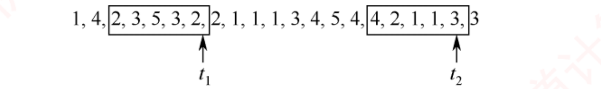
工作集算例（p.221，Δ = 5）——方框的位置就是题眼 ：窗口是往回看 的，右边界落在 t 处 。t₁ 处方框内是 2,3,5,3,2 ⟹ 去重后工作集 = {2,3,5} ；t₂ 处方框内是 4,2,1,1,3 ⟹ 工作集 = {1,2,3,4} 。注意 Δ=5 说的是"最近 5 次访问"，不是"5 个不同页面"——工作集大小 ≤ Δ，通常远小于 Δ。
我的补讲 · 2016 年那道题错的人全错在"往哪边数"
书上的方框画得很清楚，但文字没强调方向 → 潜台词是这正是命题人设坑的位置 → 三条硬规矩：
规矩 正确 错法 方向 从 t 往左 数 Δ 次访问 （含 t 本身）往右数 ⟹ 那是 OPT 的方向，不是工作集（3.2 选 52 的干扰项 B/C 就是这么造的 ） 去重 数完要去重 ，工作集是集合 把 2,3,5,3,2 数成 5 个页面 Δ 的含义 访问次数 当成"时间单位"或"页面个数"
⟹ 手法：把笔尖放在 t 上，往左划 Δ 个数，圈起来，去重，数个数。 十秒钟的事，全在方向上。 必记 · 工作集与驻留集的关系（全章分界线之四）
实际应用中工作集窗口通常设置得较大 ；对于局部性较好的程序，其工作集大小一般远小于窗口尺寸 Δ 。结论（必背）：由于工作集反映了进程在随后一段时间内很可能频繁访问的页面集合，因此驻留集的大小不应小于工作集的大小 ，否则进程在运行过程中将频繁发生缺页。
陷阱 · 「工作集 ⊄ 驻留集」——这是全章第四条分界线
工作集不一定 是驻留集的子集 ：工作集是"最近访问过的页"，其中有些可能还没调入，或已被换出 ；
驻留集是"当前真在内存里的页"。正确的表述只有一句：只有当工作集完全包含在驻留集中时，才能保证进程运行时不缺页。
（选 29 与 2016 选 52 考的都是这一句。）⟹ 判据：工作集是需求 ，驻留集是供给 。供给 ⊇ 需求才不缺页，但供给和需求本身是两个独立的集合。
知识串联 · 工作集 = 局部性原理的量化版
回看 3.2.1 局部性原理是定性的（"最近访问过的还会再访问"），工作集是它的定量版（"最近 Δ 次访问过的这几页"）。
正因如此，工作集才能拿来指导 3.2.3 的"可变分配局部置换"动态调整驻留集 ——三个小节在这里闭环。连到组原 组原 ch3 讲 Cache 容量与命中率的关系时那条"容量增大到某点后命中率提升趋于平缓 "的曲线，
与本章"驻留集超过工作集后再加页框收益甚微"是同一条曲线 。拐点的位置，就是工作集的大小。
知识串联 · 工作集 ↔ 局部性 ↔ Cache 容量曲线，三处收口
跨科枢纽 到这里为止，本章已经用了三次同一条曲线（横轴"给多少资源"、纵轴"命中/缺页"）：
场景 横轴 拐点在哪 3.2.3 驻留集 分给进程的页框数 ≈ 工作集大小 （再加收益甚微）3.2.8 第二因素 物理块数 同上（书上原话"超过阈值后趋于平缓"） 组原 ch3 Cache 容量 ≈ 程序的工作集
⟹ 三处是同一句话：「只要把活跃集合装下就够了，再多就是浪费」 。
记住这一句，本章三处的定性结论都不用单独背。 知识串联 · 两条链表 ↔ ch5 的缓冲技术，都是"用内存换 I/O"
往后连 OS ch5 ch5 会讲
单缓冲、双缓冲、缓冲池 ，目的与本节两条链表完全一致：
把零散的、随时发生的 I/O 攒成批量的、可延迟的 I/O 。
本节 OS ch5 共同收益 修改页面链表 （攒够脏页批量写回）输出缓冲区 减少写盘次数 空闲页面链表 （内容不清空，可复用）缓冲池的输入队列 / 磁盘预读 减少读盘次数
⟹ 一句话贯穿两章：「磁盘慢，所以能不碰就不碰、能攒着一起碰就一起碰」 。
本章的页面缓冲、ch4 的磁盘高速缓存、ch5 的缓冲池，都是这句话的不同实现。 📄 p.221
3.2.6 页框回收 ← 2025 年大纲新增考点
必记 · 王道给这一节的定位（原话，很重要）
本节是 2025 年大纲新增考点 。实际上，2012 年统考真题第 45 题已涉及页框回收 ，其把页框回收描述为
「被系统回收的页框，放入空闲页框链表，其中内容在下一次分配之前不清空」 ——
这一描述正是页面缓冲算法中空闲页面链表 的定义 。本书只介绍页面缓冲算法 。
我的补讲 · 这一节"薄"但不能跳，理由有两条
书上说"考出概率极低"却仍单开一节 → 潜台词是它已经以别的名义考过了 → 所以要盯两处：
# 理由 证据 1 2012 年就考过一次 ，只是当时不叫这个名字选 45："回收的页框放入空闲链表，内容在下次分配前不清空" ——就是空闲页面链表 2 2025 年进考纲的当年，本章就考了 3 道选择 最小页框数 / LRU / 内存映射文件（后两者分属 3.2.3、3.2.7）
⟹ 新考点的规律：进考纲的头两年一定会考，而且往往考最表层的定义 。这一节只有两个链表，成本极低，不该省。 1．页面缓冲算法
必记 · 影响换入换出效率的三个因素
① 页面置换算法的选择 ——好算法降低缺页率 ⟹ 减少换入换出频率；已修改页面写回磁盘的频率 ——脏页换出时必须写回；"每次换出即写回"会导致频繁磁盘 I/O；磁盘内容读入内存的频率 ——每次访问缺失页面都从磁盘重新读会引发高频磁盘 I/O。
必记 · 两个链表（这就是"页框回收"的全部内容）
页面缓冲算法 ＝ 在原页面置换算法基础上增设一个「修改页面链表」 ，保存已修改且需换出的页面，
等数量达到一定值时再批量写回磁盘 。系统在内存中维护两个专用链表：
链表 什么时候挂上去 妙在哪 空闲页面链表 未被修改的页面 需换出时，不写回磁盘 ，直接把其所在页框挂到链表末尾 这些页框中仍保留着原有数据 ⟹ 若后续有进程访问相同页面，可直接从链表中取下该页框复用，避免从磁盘重新读入 （对应因素 ③）修改页面链表 已修改的页面 需换出时，不立即写回 ，把页框挂到该链表末尾 待积累足够数量的脏页后批量写回磁盘 ⟹ 既降低写回频率，也减少了因数据缺失而需重新读盘的次数 （对应因素 ②）
⭐
上述通过链表管理物理页框、延迟实际 I/O 的机制，即为页框回收的过程。
两个优点 ：①
显著降低页面换入/换出频率，大幅减少磁盘 I/O 开销 ；
②
即使采用简单的置换策略（如 FIFO），也能获得良好性能，且无须特殊硬件支持，实现简单高效 。
我的补讲 · "不清空内容"这四个字是 2012 年那道题的题眼
书上强调"这些页框中仍保留着原有数据" → 潜台词是被回收 ≠ 被清零 → 所以能考两个方向：
问法 答案 理由 回收的页框里的内容何时清空 下一次被分配出去之前才清（或直接被新数据覆盖） 留着才能"反悔复用" 这样做的好处 若原进程又访问该页，直接摘回来即可，省掉一次磁盘读 相当于给页框加了一层"回收站"
⟹ 这个"删除时不真删、先进回收站"的模式，和 Windows 回收站、OS ch4 文件删除只置标志位 是同一个套路。
页面缓冲算法的本质就是给页面置换加了一层缓存。 我的补讲 · 页面缓冲算法的两条链，各自省掉了哪一次 I/O
书上把两条链和三个因素分开写 → 潜台词是它们其实一一对应 → 连起来看才知道妙在哪：
链表 省掉的 I/O 省的原理 空闲页面链表 省掉一次读 页框里的旧数据不清空 ⟹ 原页面若被重新访问，直接摘回来即可，不用再读盘 修改页面链表 省掉大量写 脏页攒够一批再批量写回 ；攒着的期间被重新访问，还能直接复用
⟹ 于是书上那个"即使采用简单的置换策略（如 FIFO）也能获得良好性能"的结论就说得通了：
FIFO 选错了页也没关系，因为它还躺在链表里，随时能捞回来 ——缓冲层把置换算法的错误后果削平了 。 2．页框回收
必记 · 哪些页框可回收、哪些不可
并非所有页框都可回收 ：
不可回收 大多可回收 属于内核的大部分页框 ：内核栈、内核代码段、内核数据段、大部分内核使用的页框由进程使用的页框 ：进程代码段、进程数据段、进程堆栈、进程访问文件时映射的文件页 、进程间共享内存所占的页框
Linux 内核中设有负责页面换出的
守护进程 kswapd ，定期检查内存使用情况，
当空闲页框数量低于特定阈值时便主动发起页框回收 。
陷阱 · 为什么不能等空闲页框耗尽才回收？（原文，很适合出概念题）
释放某些页框（如脏页）通常需要先将其写回磁盘 ，而该 I/O 操作本身往往需要临时页框作为缓冲区 。
若此时系统已无空闲页框，则既无法分配 I/O 缓冲区，也无法完成页面释放，从而可能导致内核陷入内存分配死锁 ，甚至引发系统崩溃。 ⟹ 一句话：「释放内存这件事本身也要花内存」 ，所以必须留有余量、提前动手。
知识串联 · 这个"死锁"和 ch2 的死锁是同一个四条件
回看 OS ch2 2.4 上面那段"没有空闲页框 ⟹ 无法写回 ⟹ 无法释放页框"正是一个标准的死锁现场 ：
持有并等待（占着脏页等缓冲区）+ 不可剥夺 + 循环等待 。而 kswapd 提前回收，用的正是 ch2 讲的死锁预防（破坏"持有并等待"，提前备好资源） 思路。 回看 3.1.2 Linux 用 3.1.2 节的伙伴算法管理连续空闲页框 ：按大小（所含连续页框数量）分组为"空闲块"。
分配页框是"化整为零"的过程，会产生外部碎片 ；回收是伙伴算法的逆操作 ——页框释放时先检查是否存在大小相等的伙伴空闲块，
存在则合并为翻倍的新空闲块，继续向上检查能否与更高一级的伙伴再次合并，直至无法合并为止 。⟹ 伙伴系统在本章出现两次（3.1.2 分配、3.2.6 回收），2024 年考过一次。合并规则与 3.1.2 动态分区回收的"看邻居"是同一动作，只是这里的邻居必须是"唯一的那个伙伴"。
我的补讲 · 2025 年新增的两个小节，考法预判（性价比极高的一段）
3.2.6 与 3.2.7 合计不到 3 页，却在进考纲当年就贡献了 2 道选择题 → 按"新考点先考定义"的规律，把可能的问法列全：
可能的问法 答案 被回收的页框内容何时清空 下次分配前才清 （2012 选 45 原句）哪些页框不可回收 内核栈、内核代码段、内核数据段等内核页框 为什么不能等页框耗尽再回收 写回脏页需要 I/O 缓冲区，无页框可用会造成内存分配死锁 内存映射文件何时把文件读进内存 首次访问该页时（按需调入），不是映射时 修改何时写回磁盘 进程退出或解除映射时 它凭什么实现共享内存 页表把不同进程的虚页映射到同一物理页
⟹ 六问六答，十分钟能记完，覆盖这两节的全部可考面。这是本章性价比最高的一段 。 📄 p.222
3.2.7 内存映射文件 ← 2025 年新考点，当年即考
考点追踪 · 内存映射文件的原理与特点（2025）
必记 · 定义与四条特性
定义 ：
操作系统向应用程序提供的一种系统调用 机制，在磁盘文件与进程的虚拟地址空间之间建立直接映射关系 ，与虚拟内存机制紧密相关。
# 特性 说明 ① 像访问内存一样读/写文件 把文件当作内存中的一个大字符数组来访问，无须调用传统的文件 I/O 接口 ② 读写由 OS 负责，对进程透明 进程只管读写内存，落盘由 OS 完成 ③ 映射时并不会立即加载文件内容 而是在进程首次访问某页面时才按需将其一页一页地调入内存 （就是请求调页） ④ 写回时机 当进程退出或显式解除文件映射时，所有被修改的页面才会被写回磁盘文件
两个好处 ：①
使程序员的编程更为简单 （已建立映射的文件可直接按内存方式读/写）；②
便于多个进程共享同一个磁盘文件 。
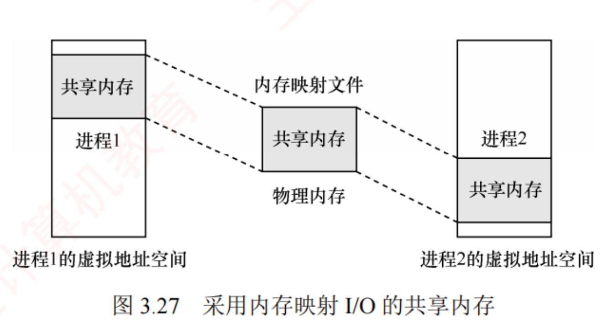
图 3.27 采用内存映射 I/O 的共享内存（p.223）——三块灰色区域是同一份物理内存 ：左右两个进程的虚拟地址空间里各有一块"共享内存"，中间是物理内存中那份唯一的实体 ，虚线表示映射。注意两块共享区在各自虚拟地址空间里的位置不同 （左边靠上、右边靠下）——虚地址可以不同，物理页必须相同 ，这正是"通过页表映射到相同物理页"的图像。
必记 · 用它实现共享内存（2025 年考的就是这段）
把同一文件映射到多个通信进程的虚拟地址空间 。尽管各进程的虚拟地址空间相互独立，
但 OS 会通过页表将它们对应的虚拟页映射到相同的物理页 ⟹
一个进程在共享区域写入后，另一个进程读取时能够立即看到更新结果 ——因为二者访问的是同一块物理内存，数据必然一致，无须额外的复制或同步机制 。
陷阱 · "无须同步机制"说的是数据一致 ，不是不用互斥
共享内存天然保证"你写的我立刻看得到"（因为是同一块物理内存），但不保证并发写不出错 。
多个进程同时写同一区域仍然需要 PV 操作互斥 ——那是 OS ch2 2.3 的事。⟹ 区分：「可见性」由硬件/映射保证；「互斥性」仍要靠信号量」 。选项写"内存映射文件使进程间通信无须任何同步"，错。
我的补讲 · 内存映射文件 vs 传统读写，四个对照点必须能说出
2025 年首考此点，且是选择题 → 潜台词是只会考"它和 read/write 有什么不同" → 四条：
维度 传统 read/write 内存映射文件 接口 系统调用，每次读写都陷入内核 映射时调一次，之后直接访存 数据搬运 磁盘 → 内核缓冲区 → 用户缓冲区（多一次拷贝） 缺页调入后直接就在用户地址空间里（少一次拷贝） 加载时机 调用时立即读 首次访问该页时才调入（按需） 写回时机 write 后由缓冲区策略决定进程退出或解除映射时统一写回
⟹ 一句话概括：内存映射文件把"文件 I/O"变成了"缺页处理" ，从此文件读写复用了虚存那一整套机制。 知识串联 · 它把本章、ch2 与 ch4 三章缝在了一起
连到 OS ch2 ch2 2.1.5 讲进程通信的三种方式（共享存储、消息传递、管道 ），
其中共享存储 在实现层面就是这里的内存映射——ch2 讲"用什么"，本章讲"怎么做到的" 。往后连 OS ch4 ch4 会讲文件的打开、读写与缓冲 ；内存映射文件是文件系统与虚存的接缝 ：
文件的一页 ↔ 内存的一页 ↔ 磁盘上的一块 ，三者被页表串成一条线。回看 3.1.4 而"多进程共用一份实体、各自的地址可以不同"这件事，3.1.4 的共享段 已经说过一遍——
段共享是段级的，内存映射是页级的，机制同构、粒度不同。
知识串联 · 内存映射文件是"虚存"与"文件系统"的接缝，两边的术语在这里对齐
跨章枢纽 建立映射之后，同一份内容有了三个身份：
视角 它叫什么 由谁管 进程 虚拟地址空间里的一段内存 页表（本章） 内存 若干物理页框 页框分配与回收（3.2.3、3.2.6） 磁盘 文件的若干块 文件的物理结构（OS ch4）
⟹ 缺页调入 = 从文件读一块；解除映射写回 = 往文件写一块。
「换出到对换区」与「写回文件」是同一个动作的两种目的地 ——这正是 3.2.3「从何处调入页面」那三种情况的由来。 我的补讲 · 3.2.6/3.2.7 与前面各节的关系，一张图串起来
两个新考点看似孤立 → 其实它们把本节前面的机制补成了一个闭环：
阶段 负责的机制 在哪一小节 页要进来 请求调页（缺页中断） 3.2.2 给它哪个页框 页框分配策略 3.2.3 没空页框了，换谁出去 置换算法 3.2.4 换出去的页框怎么处理 页框回收（两条链表） 3.2.6 页的内容从哪来、往哪去 文件区/对换区；内存映射文件 3.2.3 · 3.2.7 整体好不好 缺页率、抖动、工作集 3.2.5 · 3.2.8
⟹ 六行读完，3.2 的八个小节就串成了一条流水线：进 → 分 → 换 → 收 → 存 → 评 。
哪一节的题不会做，就回到这条线上找它管的是哪一步。 📄 p.223
3.2.8 虚拟存储器性能的影响因素
考点追踪 · 请求分页系统性能的影响因素分析（2020、2022）
我的补讲 · 五个因素里哪几个是"两难"？这决定了选项能不能一句话说死
五个因素中有两个是单调 的、三个是两难 的 → 选项若把两难的说成单调，就是错的：
因素 单调还是两难 正确表述 页面大小 两难 大 ⟹ 缺页率降但页内碎片增；小 ⟹ 碎片少但页表长 物理块数 两难 （有拐点）多 ⟹ 缺页率降，但超过阈值后收益趋于平缓，且挤占并发度 置换算法 单调 好算法 ⟹ 缺页率低 写回频率 两难 攒着批量写省 I/O，但攒太久有丢数据风险、且占着页框 局部化程度 单调 局部性越好 ⟹ 缺页率越低
⟹ 凡是遇到"页面越大越好""物理块越多越好"这类绝对化 说法，一律判错；
只有"局部性越好越好""置换算法越准越好"这两条可以说满。 必记 · 缺页率是核心，它受五方面影响
⭐
缺页率是影响虚拟存储器性能的核心因素。
因素 影响机理 ① 页面大小 页面较大时单次装入可覆盖更多局部访问区域，从而降低缺页率 ；页面较小则缺页率相对较高。但较小页面可减少页内碎片、提高内存利用率 ，代价是页表过长占用大量内存 ；较大页面缩短页表长度，却增大页内碎片 ⟹ 需在碎片控制与页表开销之间取得平衡 ② 分配的物理块数 块数越多缺页率通常越低 ；但超过某一阈值后改善趋于平缓 ——此时活跃页面已基本常驻内存 ⟹ 只需确保活跃页面常驻内存即可 ③ 页面置换算法 LRU、CLOCK 等通过预测未来访问行为，优先保留可能被再次访问的页面 ⟹ 提升命中率 ④ 写回磁盘的频率 引入已修改换出页面链表 批量写回；若某进程在这些页面尚未写回磁盘前再次访问它们，则可直接从链表中复用，无须重新从外存调入 （＝3.2.6 的页面缓冲算法） ⑤ 程序编写的局部化程度 局部化程度越高，执行时的缺页率就越低。 ⭐ 算例：数组采用按行存储，则访问时应尽量按行顺序进行，避免按列访问破坏空间局部性
我的补讲 · 第 ⑤ 条是唯一能出计算题的，两道题两个刻度
书上只给了"按行存就按行访问"一句话 → 潜台词是它可以直接换算成缺页次数 → 3.2 里有两道题就是这么出的：
题 条件 一个页框装几行 缺页次数 选 12 数组 128×128、int 4B、页框 512B、数据区只有 1 个页框 、按 a[j][i] 列优先 访问 恰好 1 行 （128×4 = 512B）每个元素缺一次 ⟹ 128×128 = 16384 次 选 13 数组 64×64、页框 128 个字，按列 访问 2 行 每两个元素缺一次 ⟹ 64×64/2 = 2048 次
⟹ 这两题是同一考法的两个刻度：「一个页框能装几行」直接决定「每几个元素缺一次页」 。三步做题法：
① 算一行占多少字节 ② 算一个页框装几行（记作 k） ③ 列优先访问 ⟹ 缺页次数 = 元素总数 ÷ k；行优先访问 ⟹ 缺页次数 = 总页数。
⚠️ 选 12 的干扰项 C 就是把 a[j][i] 误读成按行访问算出来的。先看清下标哪个在外层循环 。 知识串联 · "按行存按行访"在组原与数构里各有一次
连到组原 组原 ch3 讲 Cache 时有一模一样的例子：二维数组按行优先存储，按列遍历会让每次访问都落在不同的 Cache 块上 ⟹ 命中率暴跌 。
本章只是把"Cache 块"换成了"页框"，把"未命中"换成了"缺页"，题干几乎可以逐字互换。 连到数构 数构 ch1/ch5 讲二维数组的行优先/列优先存储与地址公式 Loc(a[i][j]) = Loc(a[0][0]) + (i×n + j)×L，
这个公式就是本题"一行占多少字节"那一步的来源 。⟹ 一道题串三科：数构给公式、组原给 Cache 版本、OS 给缺页版本。做熟一道等于做熟三道。
我的补讲 · 做这类跨科题前，先把两套"标记/索引"术语摆好（否则一定串）
同一道题里会同时出现四个"号"和两个"标记" → 先建一张对照表，做题时照着填：
名字 从哪个地址里切 切哪几位 干什么用 虚拟页号 虚拟地址 去掉页内偏移后的全部高位 查页表的下标 TLB 组索引 虚拟页号 的低 位log₂(TLB 组数) 定位 TLB 的哪一组 TLB 标记 虚拟页号 的高 位剩余位 与组内各项并行比较 物理页号 物理地址 去掉页内偏移后的高位 拼物理地址 Cache 索引 物理地址 （含页内偏移那几位）块内偏移之上的 log₂(组数) 位 定位 Cache 的哪一行 Cache 标记 物理地址 的最高几位剩余位 与该行标记比较
⚠️ 最容易串的一处：TLB 的两段切自「虚拟页号 」，Cache 的三段切自「整个 物理地址」 。
把 Cache 索引也从"物理页号"里切，是这类题最高频的错法。 📄 p.223
3.2.9 地址翻译的示例 ← 408 跨科综合的样板，全章最该动手做一遍的一段
必记 · 书上为什么专门写这一节（原话）
考虑到 408 统考越来越注重学科综合能力 的考查 ，本节结合《计算机组成原理》中 Cache 的相关内容分析虚实地址的变换过程。
必记 · 系统条件（五条，缺一不可）
# 条件 它决定了什么 ① 配置一个 TLB 和一个 data Cache ，存储器按字节编址 两级"缓存"要分别查 ② 虚拟地址 14 位、物理地址 12 位 虚页号 / 物理页号的位数 ③ 页面大小 64B 页内偏移 6 位 （虚实两侧共用）④ TLB 四路组相联，共 16 个条目 TLB 组数 = 16/4 = 4 ⟹ 组索引 2 位 ⑤ data Cache 物理寻址、直接映射，行大小 4B，共 16 组 块内偏移 2 位、Cache 组索引 4 位
我的补讲 · 地址结构必须自己推一遍，五步（考场就是这么问的）
书上直接给出了图 3.28 的划分结果 → 潜台词是这五步推导本身就是采分点 → 顺序固定，一步都不能跳：
步 推什么 算式 结果 ① 页内偏移 log₂64 6 位 ② 虚拟页号 14 − 6 8 位 ③ 物理页号 12 − 6 6 位 ④ TLB 划分 组数 16/4 = 4 ⟹ log₂4 = 2 虚页号低 2 位作组索引，高 6 位作 TLB 标记 ⑤ Cache 划分 块内偏移 log₂4 = 2；组索引 log₂16 = 4 物理地址低 2 位块内偏移、接下来 4 位组索引、剩余高 6 位为标记
⚠️ 两个最容易搞反的地方：① 组索引取的是"号"的低位，标记是高位 （不是反过来）；
② TLB 的划分作用在虚拟页号 上，Cache 的划分作用在整个物理地址 上 （Cache 是物理寻址的，页内偏移那 6 位也参与 Cache 的索引与偏移）。
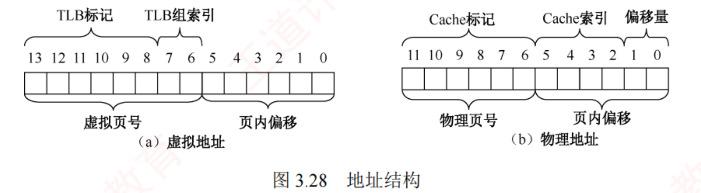
图 3.28 地址结构（p.224）——把两条位带对齐着看，交界处最值钱 ：(a) 虚拟地址 13~0，下方大括号把它分成虚拟页号(13~6) + 页内偏移(5~0) ，上方大括号又把虚页号切成 TLB 标记(13~8) + TLB 组索引(7~6) ——上下两套划分作用在同一段位上 。(b) 物理地址 11~0，下方是物理页号(11~6) + 页内偏移(5~0) ，上方是 Cache 标记(11~6) + Cache 索引(5~2) + 偏移量(1~0) ——本例中 Cache 标记恰好等于物理页号（都是高 6 位），这是巧合（因为页大小 64B、Cache 组数×行大小 = 16×4 = 64B 正好相等），别当成通用规律。
我的补讲 · 读这三张表之前，先把"每一列是什么"对上号，否则查表必错
三张表的列名很像（都有"标记位""有效位"），但索引方式完全不同 → 一次对齐：
表 拿什么去索引 拿什么去比较 组织方式 表 3.1 TLB 虚页号的低 2 位 （组索引）虚页号的高 6 位 （标记），与组内 4 项并行 比较 四路组相联 表 3.2 页表 虚页号本身 （当下标）不用比较 ，只看有效位数组（直接定址） 表 3.3 Cache 物理地址的 5~2 位 （组索引）物理地址的高 6 位 （标记），只比 1 项 直接映射
⟹ 三行读完就能回答"为什么 TLB 要存标记而页表不用"：页表是按下标定位的（一个虚页号只可能落在一行），
TLB 一组里挤了 4 个不同虚页号，必须靠标记区分 。这正是 3.1.3 那句"页表 : TLB ＝ 直接映射 : 全相联"的落地。 必记 · 表 3.1 TLB（四路组相联，每组 4 项，此处每行印 2 项）
组索引 标记位 物理页号 有效位 标记位 物理页号 有效位 0 03 — 0 09 0D 1 00 — 0 07 02 1 1 03 2D 1 02 — 0 04 — 0 0A — 0 2 02 — 0 08 — 0 06 — 0 03 — 0 3 07 — 0 03 0D 1 0A 34 1 02 — 0
必记 · 表 3.2 部分页表（虚页号 00~0F，此处分两栏印）
虚拟页号 物理页号 有效位 虚拟页号 物理页号 有效位 00 28 1 08 — 0 01 — 0 09 17 1 02 33 1 0A 09 1 03 02 1 0B — 0 04 — 0 0C — 0 05 16 1 0D 2D 1 06 — 0 0E 11 1 07 — 0 0F 0D 1
必记 · 表 3.3 data Cache 内容（直接映射，16 组，每行 4 个字节块）
索引 标记位 有效位 块0 块1 块2 块3 索引 标记位 有效位 块0 块1 块2 块3 0 19 1 99 11 23 11 8 24 1 3A 00 51 89 1 15 0 — — — — 9 2D 0 — — — — 2 1B 1 00 02 04 08 A 2D 1 93 15 DA 3B 3 36 0 — — — — B 0B 0 — — — — 4 32 1 43 6D 8F 09 C 02 0 — — — — 5 0D 1 36 72 F0 1D D 16 1 04 96 34 15 6 31 0 — — — — E 13 1 83 77 1B D3 7 16 1 11 C2 DF 03 F 14 0 — — — —
必记 · 三个地址的完整翻译（三种结局各一个，考场原型）
虚拟地址 二进制（14 位） 虚页号 TLB 组索引 / 标记 TLB 页表 物理地址 Cache 索引 / 标记 / 偏移 Cache 结果 0x03d4 00 1111 0101 01000x0F 3 / 0x03 命中 （第 3 组有标记 03 且有效位 1）不必查 物理页号 0x0D (001101) + 偏移 010100 ⟹ 0x354 5 / 0x0D / 块0 命中 （索引 5 行标记 0D、有效位 1）数据 = 36H 0x00f1 00 0000 1111 00010x03 3 / 0x00 未命中 （第 3 组无标记 00）虚页 03 有效位 1 ⟹ 在主存 ，物理页号 0x02 000010 + 110001 ⟹ 0x0b1 0xC / 0x02 / 块1 未命中 （索引 0xC 标记虽然也是 02，但有效位为 0 ）需从主存读取物理地址 0x0b1 处的数据 0x0229 00 0010 0010 10010x08 0 / 0x02 未命中 （第 0 组无标记 02）虚页 08 有效位 0 ⟹ 不在主存 — — — 触发缺页中断
⭐⭐
完整的地址翻译与数据访问流程（书上收口，必背） ：
首先查询 TLB；若 TLB 未命中，则需访问页表以完成虚实地址转换。
在此过程中，若发现所需页面尚未调入主存（页表项无效），则触发缺页中断，从外存调入该页面。随后，利用所得物理地址访问 Cache；若 Cache 未命中，则进一步从主存读取所需数据。 我的补讲 · 这三行就是三种结局，把它们背成一棵判定树
书上按地址逐个演示 → 潜台词是三个地址被刻意设计成三种不同结局 → 归纳成一棵树，任何这类题都能套：
判定 是 否 ① TLB 命中？ （同组内有标记相同且有效位为 1 的项）直接得物理页号 ⟹ 跳到 ③ 去查页表 ② 页表项有效位为 1？ 得物理页号 ⟹ 跳到 ③ 缺页中断 （到此结束，Cache 根本轮不上）③ Cache 命中？ （对应索引行标记相同且有效位为 1 ）直接取块内那个字节 从主存读
⚠️ 两处"有效位"是本题设计的全部机关：
・0x00f1 的 Cache 行标记恰好也是 02，但有效位是 0 ⟹ 仍然算未命中 ——命题人专门埋了这个"看起来匹配"的坑；
・0x0229 的页表项有效位为 0 ⟹ 缺页，后面 Cache 那两列根本不用填 （很多人还会硬算出一个物理地址，白丢分）。
⟹ 一句话：「先看有效位，再比标记」——两张表都一样。 知识串联 · 这是全书最强的跨科枢纽，一道题串起 OS 与组原两门课
跨科枢纽 本例三级串联：
TLB（本章）→ 页表（本章）→ Cache（组原 ch3 3.6） ，
其中 Cache 那一步的"标记 | 组索引 | 块内偏移"划分，与组原 ch3 的直接映射题逐字相同 。
本章的概念 组原 ch3 的同一件事 结构 TLB 四路组相联，16 条目 Cache 组相联 组内并行比较标记 页表（按虚页号索引） 直接映射 下标定位，无须比较 data Cache 直接映射，16 组 直接映射 索引定位 + 比一次标记
⚠️ 一个必须分清的差别：TLB 与页表处理的是「虚 → 实」，Cache 处理的是「实 → 数据」 。
所以本例的 Cache 是物理寻址 的：必须先把虚地址翻译完，才能去查 Cache 。顺序反了，整道题作废。
连到 2017 真题 3.2 综 19（2017）是这条枢纽的真题版：题干里 f1 的机器指令虚地址（
0040 1020H ~ 0040 107FH）
同时出现在当年组原的两道真题里 ——
同一台假想机器，OS 卷问页表、组原卷问 Cache。这就是"学科综合"最直白的形态。 我的补讲 · 把 0x03d4 这一行自己重算一遍（附逐位拆解，考场就这么写）
这类题的卷面只需五行，每行都是采分点：
行 写什么 0x03d4 的结果 1 写出二进制并画两条竖线（虚页号 | 页内偏移；虚页号内再切 标记 | 组索引） 000011 | 11 | 0101002 读出三个数 TLB 标记 0x03 、组索引 3 、页内偏移 0x14 3 查 TLB 第 3 组：有无标记 03 且有效位 1 有 ⟹ 命中，物理页号 0x0D 4 拼物理地址 = 物理页号 & 页内偏移 001101 + 010100 = 0x354 5 按物理地址切 Cache 三段并查表 标记 0x0D / 索引 5 / 偏移 0 ⟹ 命中 ⟹ 数据 36H
⚠️ 第 4 行是"拼接"不是"相加"——物理页号占高 6 位、页内偏移占低 6 位，中间不留空、也不做乘法 。
写成 0x0D + 0x14 就全错了。这是 3.1.3 那条陷阱在 3.2 的最后一次出现。 知识串联 · 这道题若换成组原卷会怎么问？（2017 年真的这么干过）
跨科枢纽 同一台机器、同一个地址，两门课问的东西不同：
问的人 关心什么 用到的表 OS 卷 虚地址→物理地址、缺不缺页、页表项在哪 TLB、页表 组原卷 物理地址→Cache 命中否、标记/组号/块内地址各是多少、映射方式 Cache 表
⟹ 2017 年综 19 就是这么拆的：f1 的机器指令虚地址 0040 1020H ~ 0040 107FH 同时出现在两门课的真题里 。
所以复习时不要把 3.2.9 当成 OS 的内容——它是两科的公共接口，任何一边的练习都在为另一边加分。 📄 p.225
3.2.10 本节小结 —— 开头三问的答案
必记 · 1）为什么要引入虚拟内存？
多道程序并发执行使进程共享处理器和内存。随着并发进程数量增加，每个进程获得的处理器时间会相对平滑地减少；
然而，若同时运行的进程过多，则内存需求将急剧上升 ，当某个进程无法获得足够的内存时，甚至无法被加载运行。
因此，在物理内存扩展受限的情况下，有必要通过其他方式在逻辑上 扩充内存容量 。
必记 · 2）虚存空间的大小由什么决定？（分界线之三）
⭐ 虚拟内存空间的大小主要由虚拟地址的位数 决定。
例如虚拟地址 32 位且按字节编址 ⟹ 虚存空间最大为 2³²B = 4GB 。
系统试图定义超过 4GB 的虚拟地址空间时，由于 32 位地址最多只能寻址 4GB，超出部分将无法被访问 。
陷阱 · 全章分界线之三：「最大容量」vs「实际可用容量」是两个问题
问的是 答案 出处 虚存的最大 容量 由地址位数决定 （32 位 ⟹ 4GB），与内存、外存容量无关 选 18 · 2012 选 45 虚存实际可用 容量 受内存与外存容量之和限制 2023 选 58
两句话都对，考的是你有没有看清问的是哪一个。
⟹ 记法：「上限由地址位数画死，实际由内外存之和兜底」 ——两个数取小的那个才是真正能用的。 必记 · 3）虚拟内存怎么解决问题？带来什么问题？
虚拟内存利用外存空间在逻辑上扩充内存容量，通过页面的换入/换出机制 ，使系统能够运行总规模远超物理内存的多个进程。带来的额外开销 ：每次缺页均需访问外存，导致平均访存时间增加；采用不合适的页面置换算法，还可能引发频繁缺页，降低系统性能 （＝抖动）。
知识串联 · 书上最后送了一条方法论，值得当成整本 OS 的读法
全书主线 原文：本节学习了 4 种页面置换算法，要将它们与处理机调度算法区分开 。当然，二者存在内在联系：
它们都属于资源调度机制，核心思想是依据某种准则，决定将有限资源分配给哪个请求者。
处理机调度的准则包括优先级、响应比、时间片等；而页面置换则聚焦于页面的使用历史，如是否被访问过、近期是否经常使用。
事实上，操作系统中几乎每类资源都有相应的调度策略。 ⟹ 以"调度"为线索串起来：CPU（ch2）→ 内存页框（ch3）→ 文件块（ch4）→ 磁盘磁头（ch5） ，
四章各有一套算法，但提问方式完全一样：「按什么准则？谁被选中？会不会饿死？公平还是高效？」
用这四问去读后两章，能省掉一半的记忆量。
知识串联 · 本章与后两章的接口：三样东西会被原样搬走
往后连 读完本章，下面三样东西在 ch4、ch5 会以新名字重现，
提前知道能省一半力气 ：
本章的东西 在 OS ch4/ch5 叫什么 提问方式一样吗 多级页表 （外层页表 → 页表 → 数据）多级索引 （一级间址 → 二级间址 → 数据块）一样 ：能覆盖多大 / 访问几次盘空闲页框链表 空闲盘块链 / 位示图 / 成组链接 一样 ：怎么分配、怎么回收合并页面置换算法 磁盘调度算法 （FCFS/SSTF/SCAN）一样 ：按什么准则、会不会饿死
⟹ 而 3.2.7 内存映射文件 正是这两章之间的那道门：文件的一页 = 内存的一页 = 磁盘的一块 。
读 ch4 时回头看一眼本节，会发现很多"新知识"其实已经学过了。 📄 p.250
3.3 本章疑难点：分页 vs 分段（表 3.6）
必记 · 全章唯一的"疑难点"，整表背下来
两者的相似之处：
在内存中都是不连续的、都有地址变换机构来进行地址映射 。区别有四个维度：
维度 分页 分段 目的 分页仅是系统管理上的需要 ，是为实现离散分配方式，以提高内存的利用率，而不是用户的需要 段是信息的逻辑单位 ，含有一组意义相对完整的信息。分段的目的是更好地满足用户的需要 长度 页的大小固定且由系统决定 ，由系统将逻辑地址划分为页号和页内地址两部分，是由机器硬件实现的 段的长度不固定 ，决定于用户所编写的程序，通常由编译程序 在编译时根据信息的性质来划分 地址空间 一维 ——单一的线性地址空间，程序员利用一个记忆符即可表示一个地址二维 ——程序员标识一个地址时，既需给出段名，又需给出段内地址碎片 有内部碎片，无外部碎片 有外部碎片，无内部碎片
我的补讲 · 这张表建议做成一张卡：正面四个维度，背面两列对照
四个维度不是并列的，它们是一条因果链（3.1.4 已推过一次，这里是最终形态）：
目的（给谁用） ⟹ 长度（谁定大小） ⟹ 地址空间（几维） ⟹ 碎片（哪种）
只要记住第一格"分页给系统用、分段给用户用"，后面三格都能顺着推出来。
⚠️ 再补两条书上没并进这张表、但同样常考的维度：
维度 分页 分段 越界检查次数 1 次（页号 vs 页表长度） 2 次 （段号 vs 段表长度、段内偏移 vs 段长）共享一段代码的表项数 N 个页表项（N = 代码页数） 1 个段表项
⟹ 六个维度凑齐，分页 vs 分段这类题就没有死角了。 我的补讲 · 本章的 Python 复算总账（哪些数字是被验证过的）
建库时我对本章做了 71 处独立复算 （正文 4 + 习题 67），3.2 零错误 ，3.1 抓出书上 2 处小问题。
下面这些数字都是复算确认过的，可以放心当基准用：
算例 书上 复算 主例 m=3 的 OPT 9 次缺页 / 6 次置换 ✅ 9 / 6 主例 m=3 的 FIFO 15 / 12 ✅ 15 / 12 主例 m=3 的 LRU 书上未给 🐍 12 / 9 （补算） Belady 串 3,2,1,0,3,2,4,3,2,1,0,4 m=3 → 9；m=4 → 10 ✅ 9 / 10 CLOCK（m=4，16 次访问） 8 次缺页，四次淘汰依次为 帧1页7 / 帧3页1 / 帧4页2 / 帧2页0 ✅ 四次淘汰位置逐一吻合 综 04 三算法 × 两块数 OPT 7/6、FIFO 9/10、LRU 10/8 ✅ 六个数字全吻合 2019 选 53 只给"置换 5 次" 🐍 总缺页 9 次 （补算）
🔍 3.1 抓出的两处：综 07 的表 A 把「6 | F6」重复印了一行 （表面 12 项，而其解析写明"需要 11 个页面，编号 0~10"，自相矛盾）；
选 57 解析"页内偏移量 2 占 12 位"多了一个「2」 。两处都已在题库里按正确版本修订。
⟹ 读到与自己算的不一致时，先怀疑自己（转录/手算），再怀疑书——本章 71 处里书只错了 2 处，比例约 3%。 知识串联 · 分页 vs 分段这张表，可以直接改写成 ch4 的"文件物理结构"表
往后连 OS ch4 3.3 那四个维度（目的/长度/维数/碎片）换个主语就是 ch4 的对照表：
维度 本章：分页 vs 分段 OS ch4：索引分配 vs 连续分配 目的 系统需要 vs 用户需要 灵活分配 vs 顺序读性能 长度 固定 vs 可变 盘块固定 vs 文件整体可变 碎片 内部 vs 外部 内部（最后一块）vs 外部 访问 一次查表 vs 两次越界检查 多级索引多次访盘 vs 一次定位
⟹ 所以 ch4 那张表不必重新学一遍，把本章这张的主语替换掉即可 。
这也是"离散分配 + 索引"这套思路在 408 里的第三次出场（第一次是分页，第二次是多级页表）。 全章收口
我的补讲 · 全章四条会丢分的分界线（考前一天只看这张表）
75 页读完，真正会在考场上丢分的只有这四处。每一条都是"两句话都对，但问的不是一件事" ：
# 分界线 正反两面 出处 ① 「缺页次数」vs「页置换次数」 前 m 次缺页是装入空页框，不算置换 ；两者相差正好 m2019 选 53（答 5 不是 9） ；2025 选 59 问"缺页异常处理次数"答 6② 「FIFO 可能有 Belady」vs「FIFO 下加页框会怎样」 前者答是 ；后者答可能增也可能减 （反例 1,2,3,1,2,3） 2014 选 48 · 选 17 · 选 33 ③ 「虚存最大容量」vs「实际可用容量」 前者由地址位数 定；后者受内外存之和 限制 2012 选 45 · 2023 选 58 · 选 18 ④ 「工作集 ⊄ 驻留集」 工作集不一定是驻留集的子集 ；只有工作集完全包含在驻留集中才保证不缺页 选 29 · 2016 选 52
⟹ 这四条在套路库 与卡库 里各钉了一遍，考前扫一次即可。 我的补讲 · 全章十二条最贵的结论（自查表，能全说清就不用回来重读）
节 三条最贵的结论 3.1.1–3.1.2 ① 先比（界地址）后加（重定位），装载是特权指令 ② 紧凑必须以动态重定位为前提 ③ 回收四情形：前邻改大小 / 后邻改址 / 全邻删表项 / 不邻建表项 3.1.3 ① E = 块号 × 块大小 + 偏移 （十六进制则直接截位拼接） ② 页表项数由虚地址定、宽度由物理地址定 ③ 快表命中一律 1 次访存，与页表几级无关 3.1.4–3.1.5 ① 分段要两次越界检查 ② 段页式：一张段表 + 多张页表 ③ 段页式段表项存的是"页表长度 + 页表始址"，不是段长和基址 3.2.1–3.2.3 ① 虚存三特征：多次性、对换性、虚拟性（"一次性"是传统存储的） ② 缺页是异常，返回时重执行该指令 ③ 可行的分配策略只有三种（没有"固定+全局"） 3.2.4 ① 只有 FIFO 可能出现 Belady ② 改进型 CLOCK 第一轮扫描不修改 A ③ 主例 m=3：OPT 9 / LRU 12 / FIFO 15 次缺页 3.2.5–3.2.9 ① 抖动 = CPU 闲 + 磁盘忙，处方是降并发，不是加进程 ② 工作集往左 数 Δ 次访问并去重 ③ 翻译顺序：TLB → 页表 → （缺页）→ Cache → 主存，两张表都先看有效位再比标记
⟹ 十八条里若有超过三条答不出，回到对应小节重读；否则直接去刷题，剩下的缺口靠错题本补。
读完这一章之后
1）先刷题，别急着往下读。 本章 167 题 / 42 道真题 ，
建议按 3.1.3 分页 → 3.2.4 置换 → 3.2.9 地址翻译 → 其余概念 的顺序刷（理由见本页开头那张分配表）。
22 道综合题全部写了「💭 思路 → ✍️ 考场卷面（⛳ 采分点）→ 📌 批注」三层 ，
第一次做请先只看思路层，自己写完卷面再对照 。
2）置换算法必须动手画表。 页面置换模拟器 可以逐步演示 OPT/FIFO/LRU/CLOCK
的每一步淘汰与命中；地址转换模拟器 可以把"页号 | 偏移"的截位过程画出来。
光看会以为自己会，画三遍才是真会 ——这一点和 ch2 的 PV 一模一样。
3）辨析题去套路库。 OS 套路库 收的是"看到什么 → 想到什么"：
四种适应算法的排序与手法、回收四情形口诀、多级页表级数公式、置换表三条规矩、
本章四条分界线 在那里各有一张卡。
4）易混概念去卡库。 操作系统卡库 里本章新增「内存管理」与「虚拟内存」两组，
按组收录，适合考前一天扫。
下一章： 第 4 章 文件管理 已完工：110 题 / 34 真题 · 精读版 🔴70 / 🔵36 · 裁图 20 张 ）——
本章的多级页表 会在那里变成多级索引 ，空闲页框链表 会变成空闲盘块链 ，
内存映射文件 （3.2.7）则是两章之间的那道门。本章的"离散分配 + 索引表"这套思路，在 ch4 会被原样再用一遍。